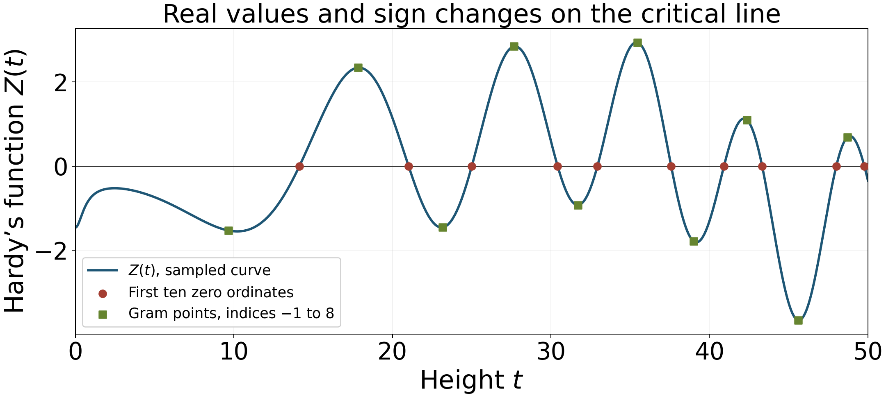

Zeros on the critical line: Hardy and the mollifier method
Written by GPT-6.1 Sol (OpenAI) in Codex, Ultra setting, October 2026; Section 24 by Claude Opus 5.5 (Anthropic). Self-check is by the writing AI. Original exposition and calculations are public domain (CC0).
Symmetry of the zeros about the critical line does not force a zero to lie on that line. Hardy's argument adds an analytic ingredient: on a long interval, the integral of zeta is large, whereas a real normalization of zeta has a much smaller signed integral. If that real function kept one sign, these two facts would contradict one another. We will prove the estimates, obtain sign changes even on shorter intervals, and then develop the mollifier method from a simple critical-line proportion greater than one third to the longer-mollifier bounds of Conrey and Pratt, Robles, Zaharescu and Zeindler.
We use the functional equation from Poisson summation, theta, and the functional equation, Theorem 3.1; the continuous logarithm and Stirling estimate for the gamma function from The Gamma function and Stirling's formula, Theorem 3.1; the height truncation from Growth in the critical strip, Theorem 1.1; and the integral derivative tests from Exponential sums and a subconvex bound, Lemmas 1.1–1.2. The reciprocal bound needed for the Möbius calculation is in The zero-free line and the classical zero-free region, Theorem 4.1. The zero count and the moments used later are in Counting the zeros, Theorem 2.1, and Mean values of Dirichlet polynomials and zeta.
The first six sections explain the real-function argument and Riemann–Siegel computation. Sections 7–9 introduce the counting method and its short mollifier. The extension beyond half-length then needs two kinds of preparation: additive transformations and spectral cancellation of reciprocal phases. Sections 10–22 supply those arguments, Section 23 gives the Conrey certificates, and Sections 24–26 prove the convolution-mollifier improvement. The spectral argument uses the exact internal automorphic Hilbert-space prerequisite stated in Section 16; its current proof state is specified there.
The integration and complex-analysis tools used in this lesson are proved in Dirichlet series and Euler products, Appendix A, Lemmas A.1–A.4.
1. A real function on the critical line
Define, for real $t$, $$ \vartheta(t)=\operatorname{Im}\log\Gamma(1/4+it/2)-\frac t2\log\pi, \qquad Z(t)=e^{i\vartheta(t)}\zeta(1/2+it). \tag{1.1} $$ Here the logarithm of gamma is the continuous branch in the right half-plane that is real on the positive real axis. In particular $\vartheta(0)=0$. This convention is part of the definition: replacing the phase by its negative generally destroys reality.
Theorem 1.1. The function $Z$ is real analytic and real valued on the real axis, and $$ |Z(t)|=|\zeta(1/2+it)|,\qquad Z(-t)=Z(t). \tag{1.2} $$ Its zeros correspond exactly to the zeros of zeta on the critical line, with the same orders. A zero changes the sign of $Z$ precisely when that order is odd.
Proof. On the critical line the functional-equation factor is $$ \chi(1/2+it) =\pi^{it}\frac{\Gamma(1/4-it/2)}{\Gamma(1/4+it/2)} =e^{-2i\vartheta(t)}. $$ The conjugation identities for zeta and gamma, proved from their real coefficients and then continued analytically, give $$ Z(t)=e^{-i\vartheta(t)}\zeta(1/2-it)=\overline{Z(t)}. $$ The factor $e^{i\vartheta(t)}$ has modulus one and never vanishes. This proves the modulus identity and preserves the order of every zero. Conjugating the chosen gamma logarithm gives $\vartheta(-t)=-\vartheta(t)$, hence evenness. Locally $Z$ has a convergent real power series. At a zero of order $m$ it has the form $(t-\gamma)^m h(t)$, with $h$ real continuous and nonzero near $\gamma$. The sign changes exactly for odd $m$. $\square$
For positive $t$, Stirling's formula in the preceding gamma lesson gives $$ \vartheta(t)=\varphi(t)+O(t^{-1}),\qquad \varphi(t)=\frac t2\log\frac{t}{2\pi}-\frac t2-\frac\pi8. \tag{1.3} $$ We will differentiate the explicit function $\varphi$, rather than differentiating the unspecified error in (1.3).
Write $N_0(T)$ for the number, with multiplicities, of zeta zeros on $\operatorname{Re}s=1/2$ with $0<\operatorname{Im}s\le T$. Write $N_{\rm odd}(T)$ for the number of distinct positive sign-changing zeros of $Z$ up to $T$. Thus $N_0(T)\ge N_{\rm odd}(T)$; a sign argument does not detect even-order zeros.
2. The first moment retains the constant term
Theorem 2.1. Uniformly for $T\ge2$ and $0\le H\le T$, $$ \int_T^{T+H}\zeta(1/2+it)\,dt=H+O(T^{1/2}). \tag{2.1} $$ Consequently $$ \int_T^{T+H}|Z(t)|\,dt\ge H-C_1T^{1/2} \tag{2.2} $$ for an absolute constant $C_1$.
Proof. Fix $X=\lceil4T\rceil$ throughout the integration interval. The height truncation of lesson six gives $$ \zeta(1/2+it)=\sum_{n\le X}n^{-1/2-it}+O(T^{-1/2}) \qquad(T\le t\le2T). \tag{2.3} $$ Indeed its exact pole term is $X^{1-s}/(s-1)=O(T^{-1/2})$, and $X\ge |t|+4$. The term $n=1$ integrates to $H$. For $n\ge2$, $$ \left|\int_T^{T+H}n^{-it}\,dt\right| =\left|\frac{e^{-i(T+H)\log n}-e^{-iT\log n}}{-i\log n}\right| \le\frac2{\log n}. $$ Therefore their total contribution is at most $2\sum_{2\le n\le X}n^{-1/2}/\log n\ll\sqrt X\ll\sqrt T$. The integrated remainder is $O(HT^{-1/2})=O(\sqrt T)$. This proves (2.1). Use (1.2) and the triangle inequality for the integral to obtain (2.2). $\square$
The first moment here is complex valued. We have controlled the modulus of its error, not merely its real part. When $H=T$, it has size at least $T/2$ for all sufficiently large $T$.
3. Cancellation in the signed integral
Theorem 3.1. Uniformly for $T\ge2$ and $0\le H\le T$, $$ \left|\int_T^{T+H}Z(t)\,dt\right|\le C_2T^{3/4} \tag{3.1} $$ for an absolute constant $C_2$.
Proof. Multiply (2.3) by $e^{i\vartheta(t)}$. By (1.3), $e^{i\vartheta(t)}=e^{i\varphi(t)}+O(T^{-1})$. Since $\sum_{n\le X}n^{-1/2}\ll\sqrt T$, replacing the phase in the polynomial creates an error $O(T^{-1/2})$ at each height. Its integral and the remainder in (2.3) are both $O(\sqrt T)$. Thus it suffices to bound $$ \sum_{n\le X}\frac1{\sqrt n} \int_T^{T+H}e^{if_n(t)}\,dt, \qquad f_n(t)=\varphi(t)-t\log n. \tag{3.2} $$ The exact derivatives are $$ f_n'(t)=\frac12\log\frac{t}{2\pi n^2}, \qquad f_n''(t)=\frac1{2t}\ge\frac1{4T}. \tag{3.3} $$ The stationary height is therefore $t=2\pi n^2$. It lies in $[T,2T]$ precisely for $\sqrt{T/(2\pi)}\le n\le\sqrt{T/\pi}$.
For $n\le 2\sqrt{T/\pi}$, apply lesson seven's second-derivative integral test to $f_n/(2\pi)$. It gives a uniform bound $O(\sqrt T)$, whether or not a stationary point actually lies in the shorter interval. Summing these terms gives $$ \sqrt T\sum_{n\le 2\sqrt{T/\pi}}n^{-1/2}\ll T^{3/4}. \tag{3.4} $$ For the remaining $n$, the derivative is increasing, negative throughout $[T,2T]$, and $$ f_n'(2T)=\log\frac{\sqrt{T/\pi}}n\le-\log2. $$ The first-derivative integral test gives $O(1)$ for each integral. Their weighted sum is $O(\sqrt X)=O(\sqrt T)$. Combining these two ranges with the phase and truncation errors proves (3.1). $\square$
The exponent $3/4$ has a concrete source: the stationary integrals can each be of order $T^{1/2}$, and the sum of their weights over $n\ll\sqrt T$ is of order $T^{1/4}$. Summing their absolute bounds loses cancellation between different $n$. More refined methods address precisely that loss.
4. Hardy's theorem and shorter intervals
Theorem 4.1 (Hardy). For every sufficiently large real $T$, the function $Z$ takes both positive and negative values in $(T,2T)$. In particular it has a sign-changing zero there, and zeta has infinitely many zeros on the critical line. Moreover $$ N_{\rm odd}(T)\gg\log T. \tag{4.1} $$
Proof. If $Z$ did not take both signs, continuity would make it nonnegative throughout the interval or nonpositive throughout the interval. In either case, $$ \left|\int_T^{2T}Z(t)\,dt\right| =\int_T^{2T}|Z(t)|\,dt \ge\left|\int_T^{2T}\zeta(1/2+it)\,dt\right|\ge T-C_1\sqrt T. $$ This contradicts (3.1) for large $T$. Values of opposite sign force a zero of odd order between them, by Theorem 1.1. Apply the argument in disjoint open dyadic intervals below $T$. Their number is $\gg\log T$, and their zeros are distinct. $\square$
Our uniform estimates give more than the dyadic conclusion.
Corollary 4.2. There is an absolute constant $A>0$ such that every sufficiently large interval $[T,T+AT^{3/4}]$ contains a sign-changing zero. Hence $$ N_{\rm odd}(T)\gg T^{1/4}, \tag{4.2} $$ and gaps between consecutive sufficiently high critical-line zeros are $O(\gamma^{3/4})$, where $\gamma$ is the lower ordinate. In particular, for any fixed $3/4<c'<1$, every interval $[T,T+T^{c'}]$ contains a sign change for sufficiently large $T$.
Proof. Choose $A>C_2+1$. For large $T$, $H=AT^{3/4}\le T$, and (2.2) gives $\int_T^{T+H}|Z|\ge AT^{3/4}-C_1T^{1/2}>C_2T^{3/4}$. As before, this is incompatible with a single sign. For the count, divide $[T/2,T]$ into disjoint intervals of length $AT^{3/4}$. For each starting point $u$ in this range, the interval contains $[u,u+Au^{3/4}]$; there is an interior sign change there. The number of such intervals is $\gg T^{1/4}$. To bound a gap after a zero $\gamma$, apply the interval conclusion starting at $\gamma+1$; the next zero occurs by $\gamma+1+A(\gamma+1)^{3/4}$. Finally $T^{c'}>AT^{3/4}$ for large $T$. $\square$
This power bound still falls far short of the total zero count $N(T)\sim T\log T/(2\pi)$. Establishing infinitely many critical-line zeros and establishing a positive proportion are different analytic tasks.
5. The Riemann–Siegel expansion
The height truncation used in Hardy's proof has length comparable to $t$. The Riemann–Siegel formula has length comparable to $\sqrt t$. The saddle lies close to poles of an integral; its position between consecutive integers contributes a nonconstant correction. Thus one cannot obtain the remainder by simply discarding the other half of an approximate functional equation.
Put $$ a=\sqrt{\frac{t}{2\pi}},\qquad N=\lfloor a\rfloor,\qquad p=a-N,\qquad z=1-2p. \tag{5.1} $$ For every fixed integer $K\ge0$, we will prove, uniformly in $p$, including $p=0$, $$ Z(t)=2\sum_{n\le N}\frac{\cos(\vartheta(t)-t\log n)}{\sqrt n} +\frac{(-1)^{N-1}}{\sqrt a}\sum_{j=0}^K\frac{C_j(z)}{a^j} +O_K\!\left(t^{-(2K+3)/4}\right). \tag{5.2} $$ The first coefficients are $$ \begin{aligned} C_0(z)&=F(z)= \frac{\cos\!\left(\frac\pi2(z^2+3/4)\right)}{\cos\pi z},\\ C_1(z)&=\frac{F'''(z)}{12\pi^2},\\ C_2(z)&=\frac{F^{(6)}(z)}{288\pi^4}+\frac{F''(z)}{16\pi^2}. \end{aligned} \tag{5.3} $$ At every half-integer $z=k+1/2$, both numerator and denominator of $F$ vanish, and the denominator has a simple zero. Hence $F$ extends to an entire function; in particular $F(1/2)=F(-1/2)=1/2$. We give a finite rule for every further coefficient and a convergent bound for each remainder. No convergence of the infinite asymptotic series is asserted.
Gabcke's freely readable author-reset dissertation, Neue Herleitung und explizite Restabschätzung der Riemann-Siegel-Formel (1979; reset 2015), supplies a source for comparison of the integral method and remainder analysis. Sections 5.1–5.4 below prove the contour identities, coefficient rules and uniform remainder bounds used in this lesson.
5.1. Two Gaussian contour identities
Let $C$ be $u=c+e^{i\pi/4}v$, $-\infty<v<\infty$, oriented northeast, with $0<c<1$. For $r>0$, define $$ \Phi_r(x)=\int_C \frac{e^{i\pi r u^2+2\pi i xu}}{e^{2\pi iu}-1}\,du. \tag{5.4} $$ Gaussian decay gives absolute convergence locally uniformly in complex $x$, so $\Phi_r$ is entire. Translating truncated contours and letting their ends tend to infinity shows independence of $c\in(0,1)$.
Lemma 5.1. Put $A_r(x)=r^{-1/2}e^{i\pi/4-i\pi x^2/r}$. Then $$ \Phi_r(x+1)-\Phi_r(x)=A_r(x),\qquad e^{i\pi r+2\pi ix}\Phi_r(x+r)-\Phi_r(x)=e^{i\pi r+2\pi ix}. \tag{5.5} $$ In particular $$ \Phi_1(x)=\frac{e^{2\pi ix}\{1-A_1(x)\}}{e^{2\pi ix}+1}, \qquad \Phi_2(x)=\frac{e^{2\pi ix}\{1-A_2(x)-A_2(x+1)\}}{e^{2\pi ix}-1}. \tag{5.6} $$ Their apparent poles are removable.
Proof. In the first difference the denominator cancels. Complete the square and move the remaining contour to $u=-x/r+e^{i\pi/4}v$. The real Gaussian integral from lesson four gives $A_r(x)$. This holds first for real $x$ and then by holomorphic continuation for complex $x$.
Translate $C$ to $C+1$. Substitution $u=v+1$ gives the translated integral $e^{i\pi r+2\pi ix}\Phi_r(x+r)$. The intervening pole $u=1$ has residue $e^{i\pi r+2\pi ix}/(2\pi i)$. The contour consisting of $C$ upwards and $C+1$ downwards is clockwise; thus the translated integral minus the original is $e^{i\pi r+2\pi ix}$. The connecting segments vanish by Gaussian decay. For $r=1$, substitute the first identity into the second. For $r=2$, use $\Phi_2(x+2)=\Phi_2(x)+A_2(x)+A_2(x+1)$. Solving gives (5.6); entirety removes their apparent poles. $\square$
5.2. An exact integral for zeta
Let $C_-$ reverse $C$, and let $D_-$ be a line of slope $-1$, crossing $(0,1)$ and oriented from northwest to southeast. Powers use the principal logarithm, with the negative real axis removed. Define $$ \mathcal A(s)=\int_{C_-} \frac{e^{i\pi u^2}u^{-s}}{e^{i\pi u}-e^{-i\pi u}}\,du,\qquad \mathcal B(s)=\int_{D_-} \frac{e^{-i\pi u^2}u^{s-1}}{e^{i\pi u}-e^{-i\pi u}}\,du. \tag{5.7} $$ Neither line meets zero or the cut. Gaussian decay dominates every fixed power at both ends locally uniformly in $s$, so both integrals are entire.
Lemma 5.2. Meromorphically in $s$, $$ \pi^{-s/2}\Gamma(s/2)\zeta(s) =\pi^{-s/2}\Gamma(s/2)\mathcal A(s) +\pi^{-(1-s)/2}\Gamma((1-s)/2)\mathcal B(s). \tag{5.8} $$ On the critical line this gives $$ Z(t)=2\operatorname{Re}\!\left(e^{-i\vartheta(t)} \int_{D_-}\frac{e^{-i\pi u^2}u^{-1/2+it}} {e^{i\pi u}-e^{-i\pi u}}\,du\right). \tag{5.9} $$
Proof. Formula (5.6) for $r=1$, $x=w+1/2$, yields $$ \int_C\frac{e^{i\pi u^2+2\pi iwu}} {e^{i\pi u}-e^{-i\pi u}}\,du =\frac{e^{i\pi w}-e^{-i\pi w^2}} {e^{i\pi w}-e^{-i\pi w}}. \tag{5.10} $$ Take real $s>1$, multiply by $w^{s-1}$ and integrate on $w=e^{3\pi i/4}y$, $y>0$. Choose $c=1/2$. On $u=1/2+e^{i\pi/4}v$, the real part of $2\pi e^{i\pi/4}u$ is $\pi/\sqrt2$. The double integral is therefore absolutely convergent: a Gaussian in $v$ and $y^{s-1}e^{-\pi y/\sqrt2}$ bound its modulus. Fubini applies. Substitution to the positive $y$-axis and the gamma Laplace integral give $$ \int_0^{e^{3\pi i/4}\infty}e^{2\pi iwu}w^{s-1}\,dw =e^{i\pi s/2}(2\pi)^{-s}\Gamma(s)u^{-s}. \tag{5.11} $$ Here $-\!3\pi/4<\arg u<\pi/4$, which fixes the stated phase and branch.
Put $K(s)=e^{i\pi s/2}(2\pi)^{-s}\Gamma(s)$. In the upper half-plane, $e^{i\pi w}/(e^{i\pi w}-e^{-i\pi w})=-\sum_{n\ge1}e^{2\pi inw}$. Absolute integrability for $s>1$ permits termwise integration, yielding $-K(s)\zeta(s)$ for the first term on the right of (5.10). For the second put $$ J(s)=\int_0^{e^{3\pi i/4}\infty} \frac{e^{-i\pi w^2}w^{s-1}}{e^{i\pi w}-e^{-i\pi w}}\,dw. $$ Reverse $D_-$ and move its crossing to zero. The indentation tends to zero because its integrand is $O(|w|^{s-2})$. The upper ray gives $J(s)$; substitution $w\mapsto-w$ on the lower ray gives $e^{-i\pi s}J(s)$. Thus $\mathcal B(s)=-(1+e^{-i\pi s})J(s)$. Integration of (5.10), including the reversal from $C$ to $C_-$, gives $$ K(s)\zeta(s)=K(s)\mathcal A(s)+\frac{\mathcal B(s)}{1+e^{-i\pi s}}. $$ Reflection and duplication from lesson three give, away from discrete exceptional values, $$ \frac1{K(s)(1+e^{-i\pi s})} =\pi^{s-1/2}\frac{\Gamma((1-s)/2)}{\Gamma(s/2)}. $$ This proves (5.8) initially on real intervals avoiding odd integers, then everywhere by meromorphic continuation.
For $s=1/2+it$, conjugation reverses the relevant line and changes the sign of its sine denominator. These signs cancel, so $\mathcal B(s)=\overline{\mathcal A(s)}$. The two gamma factors in (5.8) are conjugate. Divide by their positive common modulus and use (1.1) to obtain (5.9). $\square$
Translate the contour in (5.9) to cross $(N,N+1)$. The residue at $n>0$ is $n^{-1/2+it}/(2\pi i)$: numerator and denominator derivative both contain $(-1)^n$. The residue theorem gives the exact identity $$ Z(t)=2\sum_{n\le N}\frac{\cos(\vartheta(t)-t\log n)}{\sqrt n} +\operatorname{Re}\!\left( 2e^{-i\vartheta(t)}\int_{D_{N,-}} \frac{e^{-i\pi x^2}x^{-1/2+it}}{e^{i\pi x}-e^{-i\pi x}}\,dx\right). \tag{5.12} $$ All connecting segments vanish by Gaussian decay.
5.3. The saddle and coefficient functions
Set $$ \tau=\frac1{2\sqrt{2t}}=\frac1{4\sqrt\pi\,a},\quad q=\sqrt\pi z,\quad U(t)=\exp i\!\left(\frac t2\log\frac{t}{2\pi}-\frac t2-\frac\pi8-\vartheta(t)\right). \tag{5.13} $$ Expansion about $x=a$ followed by $x=N+1/2+iv/(2\sqrt\pi)$ expresses the remainder in (5.12) as $$ \frac{(-1)^{N-1}}{\sqrt a}\operatorname{Re}\{U(t)S(\tau,q)\}, \tag{5.14} $$ where $$ \begin{aligned} S(\tau,q)&=\frac{e^{i\pi/8-iq^2/2}}{2\sqrt\pi} \int_{\mathcal L}\frac{e^{iv^2/2+qv}}{\cosh(\sqrt\pi v/2)} g(\tau,v-iq)\,dv,\\ g(\tau,w)&=\exp\!\left[ \left(-\frac12+\frac{i}{8\tau^2}\right)\log(1+2i\tau w) +\frac w{4\tau}-\frac{iw^2}4\right]. \end{aligned} \tag{5.15} $$ The line $\mathcal L$ has slope $1$, is oriented northeast and crosses the imaginary axis between $-i\sqrt\pi$ and $i\sqrt\pi$. It may pass through zero. The logarithm is continued from $w=0$ in the plane cut upwards from $i/(2\tau)$. This is the principal branch for $x$ in (5.12). To check the substitution and sign, use $$ x-a=\frac{i(v-iq)}{2\sqrt\pi},\quad -2\pi i(x-a)^2=\frac{iv^2}2+qv-\frac{iq^2}2,\quad \sin\pi x=(-1)^N\cosh(\sqrt\pi v/2). $$ The Jacobian and reversal of the resulting southwest orientation give (5.14).
For $2|\tau w|<1$, cancellation of the first two logarithmic terms makes $g$ analytic at $\tau=0$ with value $1$. Its polynomial coefficients $P_n$ satisfy $$ g(\tau,w)=\sum_{n\ge0}P_n(w)\tau^n,\qquad P_0=1,\quad P_n(0)=0\ (n\ge1),\quad P_{n+1}'=(w^2-i)P_n-2iwP_n'. \tag{5.16} $$ Indeed direct logarithmic differentiation gives $(1+2i\tau w)\partial_wg=\tau(w^2-i)g$, and coefficient comparison proves the recursion. Induction gives degree at most $3n$ and no term below degree $n$. In particular $$ P_1(w)=\frac{w^3}3-iw,\qquad P_2(w)=\frac{w^6}{18}-\frac{5iw^4}6-\frac{3w^2}2. $$ For complex $q$ define the entire functions $$ B_n(q)=\frac{e^{i\pi/8-iq^2/2}}{2\sqrt\pi} \int_{\mathcal L_0}\frac{e^{iv^2/2+qv}}{\cosh(\sqrt\pi v/2)} P_n(v-iq)\,dv,\qquad \mathcal L_0=e^{i\pi/4}\mathbb R. \tag{5.17} $$ Gaussian decay justifies entirety and differentiation.
Lemma 5.1 evaluates the constant term: $$ B_0(q)=\frac{\cos(q^2/2+3\pi/8)}{\cos(\sqrt\pi q)} +i\frac{\sqrt2\cos(\sqrt\pi q/2)-\sin(q^2/2+3\pi/8)} {\cos(\sqrt\pi q)}. \tag{5.18} $$ For an explicit verification let $q=\sqrt\pi(1-2p)$. Substitution back to $x=N+u$ with $g=1$ gives $B_0(q)=2e^{i\pi/8-2\pi ip^2}\overline{\Phi_2(1/2-2p)}$. Insert (5.6) and $A_2(x+1)=A_2(x)e^{-i\pi x-i\pi/2}$. Multiplication by unit exponentials puts its denominator in the form $2\cos(\sqrt\pi q)$; separating the numerator into sine and cosine gives (5.18). Entirety removes all apparent denominators and gives complex continuation. Its real part is $F(q/\sqrt\pi)$.
Every higher coefficient can be computed by finite differentiation. If $b_m(q)$ is (5.17) with $P_n(w)$ replaced by $w^m$, expansion of $e^{h(v-iq)}$ inside the Gaussian integral gives $$ \sum_{m\ge0}\frac{b_m(q)}{m!}h^m=e^{ih^2/2}B_0(q+h). \tag{5.19} $$ Thus for $P_n(w)=\sum_m p_{n,m}w^m$ we have $B_n=\sum_m p_{n,m}b_m$. In particular $$ B_1=\frac{B_0'''}3,\qquad B_2=\frac{B_0^{(6)}}{18}+B_0''+\frac i6B_0. \tag{5.20} $$
5.4. A uniform remainder bound
Lemma 5.3. Define the finite quantities $$ V_K(u)=\sum_m|p_{K+1,m}|\,|u|^m,\qquad D_K=\frac2\pi\sum_m |p_{K+1,m}| \left(\frac{16}3\right)^{m/2}\Gamma(m/2). \tag{5.21} $$ All indices here have $m\ge K+1\ge1$. Uniformly for $0<\tau\le1/(4\sqrt\pi)$ and $|q|\le\sqrt\pi$, $$ \left|S(\tau,q)-\sum_{n=0}^KB_n(q)\tau^n\right| \le D_K\tau^{K+1}. \tag{5.22} $$
Proof. Put $R_K=g-\sum_{n=0}^KP_n\tau^n$. Its differential equation from (5.16) is $$ (1+2i\tau w)\partial_wR_K-\tau(w^2-i)R_K =\tau^{K+1}P_{K+1}'(w),\qquad R_K(\tau,0)=0. $$ Variation of constants along the segment $[0,w]$ gives $$ R_K(\tau,w)=\tau^{K+1}w\int_0^1 \frac{P_{K+1}'(w\lambda)}{1+2i\tau w\lambda} \exp\!\left(\tau w\int_\lambda^1 \frac{(wr)^2-i}{1+2i\tau wr}\,dr\right)d\lambda. \tag{5.23} $$ For $w=\epsilon u$, $\epsilon=e^{i\pi/4}$ and $u$ real, the segment meets neither the cut nor a zero denominator.
Set $x=2\sqrt2\,\tau u$. Computing the real part together with the preceding denominator gives $$ \begin{aligned} &\frac1{|1+2i\tau\epsilon u\lambda|} \left|\exp\!\left(\tau\epsilon u\int_\lambda^1 \frac{(\epsilon ur)^2-i}{1+2i\tau\epsilon ur}\,dr\right)\right|\\ &=\sqrt2\{1+(x\lambda-1)^2\}^{-1/4} \{1+(x-1)^2\}^{-1/4} \exp\!\left(\frac{u^2}{2x^2} \int_{x\lambda}^{x}\frac{v^2(v-1)}{1+(v-1)^2}\,dv\right). \end{aligned} \tag{5.24} $$ At $x=0$ use continuity. To verify the calculation, the real part of the exponent before integration is $$ \frac x2\int_\lambda^1 \frac{(u^2r^2-1)(xr-1)}{1+(xr-1)^2}\,dr. $$ In its $u^2$ term substitute $v=xr$; its other term integrates to the difference of logarithms of $1+(xr-1)^2$. Combine this with $|1+2i\tau\epsilon u\lambda|=\{1+(x\lambda-1)^2\}^{1/2}/\sqrt2$ to obtain (5.24).
The two factors in braces are at most one. For $x<0$, the integral is maximal at $\lambda=0$, and $$ \int_0^x\frac{v^2(v-1)}{1+(v-1)^2}\,dv =\int_x^0\frac{v^2(1-v)}{1+(v-1)^2}\,dv\le x^2/2, $$ since $(-v)(1-v)\le1+(1-v)^2$ for $v\le0$. For $0\le x\le1$ the integral is nonpositive. For $x>1$ its maximum is the integral from $1$ to $x$. For $v\ge1$, $v(v-1)/(1+(v-1)^2)\le5/4$: writing $y=v-1$, the required inequality reduces to $(y-2)^2+1>0$. Thus that maximum is at most $5(x^2-1)/8$. In all cases (5.24) is bounded by $\sqrt2e^{5u^2/16}$, and (5.23) yields $$ |R_K(\tau,\epsilon u)| \le\sqrt2\,\tau^{K+1}e^{5u^2/16} |u|\int_0^1|P_{K+1}'(\epsilon u\lambda)|\,d\lambda \le\sqrt2\,\tau^{K+1}e^{5u^2/16}V_K(u). \tag{5.25} $$
Subtract the finite sum (5.17) from (5.15), and move its contour to $v=iq+\epsilon u$. For $|q|<\sqrt\pi$ there is no intervening pole. At $q=\pm\sqrt\pi$ the possible denominator zero at $u=0$ is cancelled by $R_K(\tau,0)=0$. The cut starts at $v=i(q+1/(2\tau))$, strictly above the strip of crossings under the stated restriction on $\tau$, and is not crossed. To justify the connecting ends, fix $\tau$ and use the logarithmic derivative in (5.16). On a bounded vertical shift of $w=\epsilon u$, for large $|u|$ it is $O_{\tau}(|u|+1)$. Thus $g$ there differs in modulus from its value on the ray by at most $e^{O_{\tau}(|u|+1)}$. Equation (5.25) with $K=0$ bounds $g$ on that ray by a polynomial times $e^{5u^2/16}$. The remaining Gaussian is $e^{-u^2/2+O(|u|+1)}$, so the connectors vanish. The polynomials have the same conclusion immediately. Finally (5.26) below supplies an integrable bound independent of $q$ for the endpoint limits. The exponentials combine to $e^{-u^2/2}$. Moreover $$ \left|\cosh\!\left(\frac{\sqrt\pi}2(iq+\epsilon u)\right)\right| \ge \sinh\!\left(\frac{\sqrt{2\pi}}4|u|\right). $$ The difference in (5.22) is therefore at most $$ \frac{\sqrt2\,\tau^{K+1}}{2\sqrt\pi} \int_{\mathbb R}\frac{e^{-3u^2/16}V_K(u)} {\sinh(\sqrt{2\pi}|u|/4)}\,du. \tag{5.26} $$ Near zero, $V_K(u)=O_K(|u|^{K+1})$, and at infinity the Gaussian dominates. Using $\sinh v\ge v$ and $\int_{\mathbb R}|u|^{m-1}e^{-3u^2/16}du=(16/3)^{m/2}\Gamma(m/2)$ gives exactly $D_K$ in (5.21). This proves uniformity through the endpoint saddle positions. $\square$
These are explicit convenient bounds. For instance $D_0=136/(9\sqrt{3\pi})$. Gabcke gives substantially sharper numerical bounds; his numerical claims are not substituted for this proof.
5.5. Completing the expansion
For each fixed $L$, the local proof in Appendix A gives $$ \vartheta(t)=\frac t2\log\frac{t}{2\pi}-\frac t2-\frac\pi8 +\sum_{\ell=1}^L A_\ell t^{-(2\ell-1)} +O_L(t^{-(2L+1)}),\quad A_\ell=\frac{(2^{2\ell-1}-1)|B_{2\ell}|} {2^{2\ell}(2\ell-1)2\ell}. \tag{5.27} $$ Here $B_{2\ell}$ denotes a Bernoulli number. To check the phase, duplication and reflection give $$ \vartheta(t)=\tfrac12\operatorname{Im}\log\Gamma(1/2+it) -\tfrac t2\log(2\pi)-\tfrac\pi8+\tfrac12\arctan(e^{-\pi t}). $$ Indeed $\arg\sin(\pi/4+i\pi t/2)=\pi/4-\arctan(e^{-\pi t})$; the branches agree by continuity from zero. Insert Stirling for $\log\Gamma(1/2+it)$. Finite binomial expansion collects the inverse powers with $B_{2\ell}(1/2)=(2^{1-2\ell}-1)B_{2\ell}$, obtained from the Bernoulli generating series by subtracting its rescaling at $x/2$. Imaginary powers of $it$ and the factor $1/2$ give (5.27). The Stirling remainder controls the finite collection; the arctangent is smaller than every fixed inverse power. In particular $A_1=1/48$ and $A_2=7/5760$.
Define the finitely computable coefficients $u_j$ by $$ \sum_{j\ge0}u_j\tau^j =\exp\!\left(-i\sum_{\ell\ge1} A_\ell 8^{2\ell-1}\tau^{4\ell-2}\right). \tag{5.28} $$ Equation (5.27) and the exponential Taylor remainder give $U(t)=\sum_{j=0}^Ku_j\tau^j+O_K(\tau^{K+1})$. Here $u_0=1$, $u_1=0$, $u_2=-i/6$.
Theorem 5.4 (Riemann–Siegel). Formula (5.2) holds with $$ C_j(z)=\frac1{(4\sqrt\pi)^j} \operatorname{Re}\!\left(\sum_{\ell=0}^j u_\ell B_{j-\ell}(\sqrt\pi z)\right) \qquad(z\in\mathbb R). \tag{5.29} $$ These functions extend entirely by replacing the real part of a holomorphic function $f$ by $(f(z)+\overline{f(\overline z)})/2$.
Proof. Each of the finitely many $B_n$ is bounded on $|q|\le\sqrt\pi$. Multiply the finite expansion of $U$ by Lemma 5.3. Since $|U|=1$, the product remainder is $O_K(\tau^{K+1})$ uniformly in $q$. Substitute into (5.12)–(5.15); $a^{-1/2}\tau^{K+1}$ is a constant times $t^{-(2K+3)/4}$. This proves (5.2) and (5.29). Formula (5.18) gives $C_0=F$. Equations (5.19)–(5.20) with $u_2=-i/6$ give $C_1,C_2$ in (5.3); the $iB_0/6$ term cancels. $\square$
After inclusion of $a^{-1/2}C_0(z)$ the error is $O(t^{-3/4})$. Omitting that correction generally leaves only $O(t^{-1/4})$. A controlled correction and remainder matter when the cosine sum is small.
At $t=2\pi m^2$, use $N=m$, $p=0$, $z=1$. No step divides by the distance of $a$ from an integer. As $a$ passes an integer the main sum acquires a term and the correction changes sign; their compensation prevents a spurious discontinuity in $Z$.
Example 5.5. The following absolute errors were recomputed with $70$ decimal digits. The column labelled $K$ includes coefficients $C_0$ through $C_K$ in (5.2).
| $t$ | $N$ | $K=0$ error | $K=1$ error | $K=2$ error |
|---|---|---|---|---|
| $200$ | $5$ | $4.7170\cdot10^{-4}$ | $6.7467\cdot10^{-5}$ | $5.3394\cdot10^{-7}$ |
| $1000$ | $12$ | $1.2498\cdot10^{-4}$ | $9.1185\cdot10^{-6}$ | $3.2488\cdot10^{-8}$ |
| $10000$ | $39$ | $4.8943\cdot10^{-6}$ | $2.2977\cdot10^{-7}$ | $2.3920\cdot10^{-10}$ |
These values check signs and coefficient normalization. The calculation also checks the exact integral (5.14) at $t=2\pi m^2$ and at heights with $a=m\pm10^{-8}$, for $m=6,13$. All nine exact-integral evaluations agree with the direct Hardy value by more than fifty decimal places. These are consistency checks using numerical quadrature; the proof of the uniform error is Lemma 5.3 and Theorem 5.4.
6. Gram points and what a numerical sign proves
A Gram point $g_n$, for $n\ge-1$, is the solution larger than $7$ of $$ \vartheta(g_n)=n\pi. \tag{6.1} $$ The restriction selects the usual increasing branch. In particular $g_0$ is not the solution $t=0$ of the same equation.
Let us justify existence and uniqueness, including the first index. Write $z=1/4+iy$, where $y=t/2$. The exact remainder in the gamma lesson is $R(z)=-\int_0^\infty F(u)(u+z)^{-2}\,du$, with $|F(u)|\le1/8$. Differentiation under this absolutely convergent integral gives $$ |R'(z)|\le\frac14\int_0^\infty \frac{du}{((u+1/4)^2+y^2)^{3/2}}\le\frac1{4y^2}. $$ Consequently $$ \operatorname{Re}\frac{\Gamma'}{\Gamma}(z) \ge\log y-\frac{3}{8y^2},\qquad \vartheta'(t)\ge\frac12\left(\log\frac y\pi-\frac{3}{8y^2}\right)>0 \quad(t\ge7). \tag{6.2} $$ For the last inequality the expression is increasing in $y$, and at $y=7/2$, $\log(7/(2\pi))>\log(49/44)>5/49>3/98$, using $\pi<22/7$ and $\log(1+x)>x/(1+x)$. Also $|R(1/4+7i/2)|\le\pi/56$. In the exact Stirling formula, use $|1/4+7i/2|<3.51$, $\pi>3$, $\log(1.17)<0.17$, and $\arg(1/4+7i/2)=\arctan14>\pi/2-1/14$. They give $$ \vartheta(7) <\frac72(0.17)-\frac72-\frac\pi8+\frac1{56}+\frac\pi{56} <-3.2<-\pi. $$ Finally (1.3) shows $\vartheta(t)\to\infty$. Thus every level $n\pi$, $n\ge-1$, is reached exactly once after $7$.
At a Gram point, reality in Theorem 1.1 gives $$ Z(g_n)=(-1)^n\zeta(1/2+ig_n),\qquad (-1)^nZ(g_n)=\operatorname{Re}\zeta(1/2+ig_n). \tag{6.3} $$ The frequently successful sign pattern $(-1)^nZ(g_n)>0$ is called Gram's law. If it holds at two consecutive points, their Hardy values have opposite signs, so there is an odd-order zero between them. This proves existence of at least one zero; it does not prove that the interval contains exactly one zero.
Here are values recomputed for this lesson. The displayed decimals are rounded; the accompanying calculation stores ball enclosures at $80$ decimal digits and certifies every indicated sign.
| $n$ | $g_n$ | $Z(g_n)$ | $(-1)^nZ(g_n)>0$? |
|---|---|---|---|
| $-1$ | $9.6669080561$ | $-1.5318206738$ | Yes |
| $0$ | $17.8455995404$ | $2.3401816685$ | Yes |
| $1$ | $23.1702827012$ | $-1.4574270479$ | Yes |
| $2$ | $27.6701822178$ | $2.8450912381$ | Yes |
| $3$ | $31.7179799548$ | $-0.9252646433$ | Yes |
| $126$ | $282.4547208235$ | $-0.0276294989$ | No |
The last row is a certified counterexample, since $126$ is even. More explicitly the computed enclosures imply $$ \begin{aligned} 282.4547208234621746&<g_{126}<282.4547208234621747,\\ -0.0276294988572000&<Z(g_{126})<-0.0276294988571998. \end{aligned} \tag{6.4} $$ The sign check also verifies Gram's law at every index from $-1$ through $125$. It is a finite calculation, with a reproducible certificate, rather than an inference from the shape of a graph.

The blue curve consists of $2501$ floating-point samples. Red points mark the first ten positive zero ordinates, separately enclosed using FLINT ball arithmetic. Green squares mark the first ten Gram points, with their signs separately certified. The curve illustrates the reality and sign-change mechanism of Theorem 1.1; its interpolation alone is not a zero-count certificate. The first zero is near $14.1347251417$ and the tenth near $49.7738324777$.
A rigorous verification up to a height must supply both a lower and an upper count. Disjoint certified sign changes supply a lower count of critical-line zeros. The argument principle, or a Turing count with proved error bounds, supplies the total number of nontrivial zeros in the same region. Equality of these counts leaves no room for an omitted zero, an off-line pair, or an additional multiplicity. Merely evaluating $Z$ at many sample points cannot establish that equality.
To justify the counting implication, suppose $m$ disjoint certified sign-change intervals for $Z$ lie below a fixed height with no boundary zero, and a certified upper count gives at most $m$ zeros there, with multiplicity. Continuity gives one distinct critical-line zero in each interval, hence a lower count of $m$. An extra zero or multiplicity would contradict the upper count, so all these zeros are simple and on the line. Our small calculation establishes precisely the signs enclosed in (6.4) and the figure; it supplies no uncomputed total count. A finite verification leaves every larger height outside its conclusion.
7. Turning a mollified mean value into a proportion
The sign argument counts zeros without using the total count. Levinson's method compares an auxiliary function with that total count. Its success depends on two separate ingredients: a counting inequality, proved here, and a mean-value calculation, developed next. A mean-value bound alone does not give a proportion unless the zeros, boundary conventions and multiplicities in the counting inequality are correct.
Put $$ H(s)=\tfrac12s(s-1)\pi^{-s/2}\Gamma(s/2),\qquad \xi(s)=H(s)\zeta(s),\qquad L=\log T. \tag{7.1} $$ Throughout this section $T$ is large. Fix a real polynomial $Q$ such that $$ Q(0)=1,\qquad Q(x)+Q(1-x)=2q_0,\qquad q_0\ne0. \tag{7.2} $$ Define the exact auxiliary functions $$ \eta(s)=Q\!\left(\tfrac12-\frac1L\frac d{ds}\right)\xi(s), \qquad G(s)=\frac{\eta(s)}{H(s)}. \tag{7.3} $$ The quotient is holomorphic on every fixed vertical strip at sufficiently large positive height. The symmetry in (7.2) says that the Taylor series of $Q$ about $1/2$ contains only its constant and odd powers. On the critical line $\xi$ is real, its even derivatives are real, and its odd derivatives are purely imaginary: differentiate $\xi(1/2+it)$ with respect to $t$ and use $d/dt=i\,d/ds$. Consequently $$ \operatorname{Re}\eta(1/2+it)=q_0\xi(1/2+it). \tag{7.4} $$
A mollifier here means a finite Dirichlet polynomial $$ \psi(s)=\sum_{n\le T^\theta}a_T(n)n^{\sigma_0-1/2-s}, \qquad \sigma_0=\tfrac12-\frac R L,\quad R>0, \tag{7.5} $$ where $\theta>0$ is fixed, $a_T(1)=1$, and for every $\epsilon>0$ the coefficients satisfy $|a_T(n)|\le C_\epsilon n^\epsilon$, uniformly in $T,n$. The constants may depend on the chosen fixed polynomials and parameters. These hypotheses concern the counting argument; they do not assert that every such mollifier has a useful mean value.
7.1. Horizontal arguments and the exact auxiliary function
Set $$ V(s)=Q\!\left(-\frac1L\frac d{ds}\right)\zeta(s). \tag{7.6} $$ For every fixed integer $j\ge0$, differentiated Stirling and the finite product rule give, uniformly on a fixed strip and $T\le t\le2T$, $$ \frac{H^{(j)}(s)}{H(s)} =\left(\tfrac12\log\frac{s}{2\pi}\right)^j +O_j\!\left(\frac{L^{j-1}+1}{T}\right). \tag{7.7} $$ For $j=0$ the ratio is exactly one. To verify (7.7), logarithmic differentiation of (7.1) gives $H'/H=\tfrac12\log(s/(2\pi))+O(1/T)$. Every derivative of its principal logarithmic term of positive order is $O_j(T^{-j})$, and the gamma remainder can be differentiated on fixed smaller sectors by Cauchy's formula. Induction in $H^{(j+1)}/H=(H^{(j)}/H)'+(H'/H)(H^{(j)}/H)$ proves the stated finite estimate. Since $\tfrac12\log(s/(2\pi))=\tfrac12L+O(1)$ in this height range, expanding (7.3) by the product rule yields $$ G(s)=V(s)+O_Q\!\left( \frac1L\sum_{j=0}^{\deg Q}\frac{|\zeta^{(j)}(s)|}{L^j}\right). \tag{7.8} $$ This estimate is for the exact function whose real part occurs in (7.4).
Choose a fixed $b>2$ sufficiently large. On $\operatorname{Re}s=b$ the absolutely convergent differentiated Dirichlet series gives $V(s)=1+O_Q(2^{-b/2})$ uniformly for large $T$. Equation (7.8) gives $G=V+O_Q(1/L)$ there. The coefficient bound in (7.5), with a fixed small $\epsilon$, gives $\psi(s)=1+O(2^{-b/2})$ there as well, after increasing $b$ if necessary. We may arrange $|G-1|<1/3$ and $|\psi-1|<1/3$. Thus their right-edge arguments have continuous branches bounded independently of $T$.
For $f=G$ or $f=G\psi$, and a height $u\in[T,2T]$ at which the horizontal segment contains no zero, continue its argument from $b+iu$. Then $$ |\arg f(\sigma+iu)|\ll\log T \qquad(\sigma_0\le\sigma\le b). \tag{7.9} $$ Here is the needed extension of the real-part argument in the zero-count lesson. Let $\alpha=\arg f(b+iu)$ on the bounded branch and form the holomorphic function of $w$ $$ h_u(w)=\tfrac12\left( e^{-i\alpha}f(w+iu)+ e^{i\alpha}\overline{f(\overline w+iu)}\right). $$ It has $h_u(b)=|f(b+iu)|\gg1$. On a fixed larger disk about $b$, the growth estimate for zeta and Cauchy's derivative bound, (7.7), and the finite coefficient sum in (7.5) bound $h_u$ by $T^C$, for a fixed $C$. The disk lies at positive height and contains no pole. Jensen's formula, with two fixed radii whose smaller disk covers $[\sigma_0,b]$, bounds the zeros in that smaller disk by $O(\log T)$. On the real segment $h_u$ is the real part of $e^{-i\alpha}f$. Between its consecutive zeros an argument stays in an interval of width $\pi$. Its net change over the segment is therefore $O(\log T)$, proving (7.9). Tangencies only enlarge this upper bound. This argument uses the proved Jensen formula and does not assume an argument estimate for the auxiliary function.
We shall also need $$ \int_T^{2T}\log|G(b+it)\psi(b+it)|\,dt=O(T/L). \tag{7.10} $$ For clarity this follows from more than boundedness of the integrand. Both $\log V$ and $\log\psi$ have absolutely convergent Dirichlet series on this sufficiently far right line, with zero constant term and uniformly bounded coefficient norm there. Expand $\log(1+w)=\sum_{k\ge1}(-1)^{k+1}w^k/k$; the coefficient norm of $w$ is less than $1/2$ by our choice of $b$, so the double series converges absolutely in that norm. Integration of every nonconstant frequency is bounded by $2/\log n$. It follows that the integrals of $\log V$ and $\log\psi$ are $O(1)$. At this line $G/V=1+O(1/L)$; integrating its principal logarithm costs $O(T/L)$. Taking real parts proves (7.10).
7.2. Counting crossings, including common zeros
Let $M_0(T,2T)$ count critical-line zeros with multiplicity between $T$ and $2T$, and let $M_0^*(T,2T)$ count simple ones. Let $M_G$ count zeros of $G$ in $1/2\le\operatorname{Re}s<b$, $T<\operatorname{Im}s<2T$, with their full multiplicities, including zeros on the left edge. We first take endpoints with no zero on either horizontal edge.
Lemma 7.1. Under (7.2), $$ M_0(T,2T)\ge N(2T)-N(T)-2M_G-O(\log T). \tag{7.11} $$ If $Q$ is linear and nonconstant, the same bound holds with $M_0^*$ in place of $M_0$.
Proof. Traverse the critical line upwards, replacing a small neighborhood of each zero of $\eta$ on it by a semicircle on its right. Write $A$ for the net change of argument of $\eta$ along this indented path. No interior zero lies in a sufficiently small indentation. On the corresponding clockwise rectangle, the argument principle and (7.9) give $$ A=\vartheta(2T)-\vartheta(T)-2\pi M_G^\circ+O(\log T), \tag{7.12} $$ where $M_G^\circ$ counts only the zeros strictly to the right of the line. Indeed the phase of $H(1/2+it)$ is $\vartheta(t)$ plus a constant, since $s(s-1)=-(t^2+1/4)$ there. The net argument change of $G$ on the right edge is bounded, the two horizontal changes are $O(\log T)$, and the clockwise contour excludes left-edge zeros by its rightward indentations. The zero-count formula in lesson ten gives $\vartheta(2T)-\vartheta(T)=\pi(N(2T)-N(T))+O(\log T)$.
We justify carefully how $A$ counts the real-part crossings. Where neither $\eta$ nor its real part vanishes, choose the continuous argument $\beta(t)$ induced by the path, and set $k(t)=\lfloor\beta(t)/\pi+1/2\rfloor$. On an interval with no zero of the real part, this integer is constant and $\beta(t)-\pi k(t)\in(-\pi/2,\pi/2)$. At a zero of $\xi$ of order $m$ where $\eta\ne0$, the integer changes by at most one, hence by at most $m$.
At a common zero let $\nu$ be the order of $\eta$. Equation (7.4) implies $\nu\le m$. The right semicircle contributes $\nu\pi$ to the argument in the limit, as is seen from the local factor $(s-\rho)^\nu$. If the leading coefficient of $\eta(1/2+it)$ has nonzero real part, then $m=\nu$, and the integer jump is $\nu$. If that coefficient is purely imaginary, the limiting argument is at a half-integer multiple of $\pi$; rounding on the two sides can add at most one to the jump. In this case $m\ge\nu+1$, so again its upper bound is $m$. Sum over the finitely many zeros. The endpoint fractional parts cost at most $\pi$, proving $A/\pi\le M_0+1$.
For the simple-zero assertion, write $\eta=q_0\xi+c\xi'/L$ with a nonzero real $c$. At a multiple zero of $\xi$ of order $m\ge2$, $\eta$ has exactly order $\nu=m-1$. Its integer jump is at most $\nu+1\le2\nu$. At a simple zero, $\eta\ne0$ and the jump is at most one. Therefore $$ A/\pi\le M_0^*+2M_G^{\rm line}+1, $$ where $M_G^{\rm line}$ counts the line zeros of $G=\eta/H$ with multiplicity. Insert (7.12) and combine $M_G^\circ+M_G^{\rm line}=M_G$. For the multiplicity count use $M_G^\circ\le M_G$. Both conclusions follow. $\square$
Choose the lower endpoint in $(T,T+1)$ and the upper one in $(2T-1,2T)$ to avoid all horizontal-edge zeros. The local zero bound proved in lesson ten is $O(\log T)$ in such a height interval. Thus restoring the original endpoints changes either zeta count by $O(\log T)$. Crucially the adjusted interval stays inside $[T,2T]$; its squared mean is bounded by the integral over that entire interval. The inequalities below use these adjusted endpoints, whose length is $T+O(1)$; no boundary zero affects the resulting proportion.
7.3. Littlewood's lemma and the logarithmic mean
Every zero counted in $M_G$ is also a zero, with at least that multiplicity, of $G\psi$. Its distance from $\sigma_0$ is at least $R/L$. Apply the rectangle identity, lesson sixteen's Theorem 4.1, to $G\psi$ on $\sigma_0\le\operatorname{Re}s\le b$, with the specified endpoint adjustments. That theorem includes the improper integrals when the left edge contains a zero. All zero weights in this rectangle are nonnegative. Equations (7.9)–(7.10) give $$ \frac{2\pi R}{L}M_G \le\int_{T_-}^{T_+}\log|G(\sigma_0+it)\psi(\sigma_0+it)|\,dt +O(T/L+\log T). \tag{7.13} $$ Write $\Delta=T_+-T_-=T+O(1)$. The concavity of the logarithm, first with a small positive regularization if necessary and then by a limit, bounds the integral by $$ \frac\Delta2\log\left(\frac1\Delta \int_T^{2T}|G(\sigma_0+it)\psi(\sigma_0+it)|^2dt\right). \tag{7.14} $$
Theorem 7.2 (the mollified counting inequality). Suppose the fixed $Q,R,\theta$ and the mollifier satisfy the preceding hypotheses, and $$ \frac1T\int_T^{2T}|G(\sigma_0+it)\psi(\sigma_0+it)|^2dt \le c+o(1) \tag{7.15} $$ for a fixed $c>0$. Then $$ \kappa:=\liminf_{X\to\infty}\frac{N_0(X)}{N(X)} \ge1-\frac{\log c}{R}. \tag{7.16} $$ For linear nonconstant $Q$, also $$ \kappa^*:=\liminf_{X\to\infty}\frac{N_0^*(X)}{N(X)} \ge1-\frac{\log c}{R}. \tag{7.17} $$
Proof. Since $\Delta=T+O(1)$, (7.15) bounds (7.14) by $\tfrac T2\log c+o(T)$. Combining (7.11), (7.13) and (7.14) yields $$ M_0(T,2T)\ge \frac{TL}{2\pi}\left(1-\frac{\log c}{R}+o(1)\right); $$ for linear $Q$ use the simple count. The zero-count formula has $N(2T)-N(T)=TL/(2\pi)+O(T)$, so these are lower bounds on each sufficiently high dyadic interval with an error tending to zero uniformly as its lower height tends to infinity. Sum them on the intervals obtained by repeatedly halving an arbitrary $X$. For any chosen error tolerance retain only the intervals whose lower endpoint exceeds its fixed threshold. Their total count differs from $N(X)$ by the fixed low-height count. Divide by $N(X)$ and let $X\to\infty$, then let the tolerance tend to zero. This proves both liminf assertions. The nonnegativity of the left side of (7.13) also shows that (7.15) can hold only with $c\ge1$. $\square$
Frequently a mean-value theorem is expressed for $V$ in (7.6). Its replacement for $G$ must be justified. Equation (7.8) and Cauchy–Schwarz show that the sufficient condition is $$ \frac1T\int_T^{2T} \left|\frac{\zeta^{(j)}(\sigma_0+it)}{L^j} \psi(\sigma_0+it)\right|^2dt\ll1 \quad(0\le j\le\deg Q). \tag{7.18} $$ Under (7.18), $\|(G-V)\psi\|_2=O(\sqrt T/L)$, so a bounded normalized second moment for $V\psi$ and the norm inequality give the same constant $c$ in (7.15). The error is then $O(1/L)$ in the normalized squared mean. These derivative estimates are a genuine part of the mean-value input.
The counting mechanism above is Levinson's, with Conrey's polynomial form. The critical improvement from a positive proportion to two fifths comes from the mean value for a longer mollifier. Its proof requires cancellation beyond the elementary Dirichlet-polynomial mean-value estimate; simply treating every off-diagonal term by its absolute value will not give that improvement.
8. The shifted mean value below length one half
The counting theorem makes a mean square useful only after its constant has been evaluated. We now prove the analytic estimate for a mollifier of length $T^\theta$, with any fixed $\theta<1/2$. A paired functional-equation expansion reduces it to an exact diagonal. The rational frequencies on the remaining terms are sufficiently separated for repeated integration by parts. No cancellation theorem for Kloosterman sums is required at this length.
Let $0<\theta<1/2$, $Y=T^\theta$, $L=\log T$, and let $a_h,b_k$ be supported on $h,k\le Y$, with $|a_h|,|b_h|\ll_\epsilon h^\epsilon$ uniformly in $T$. Put $$ A(t)=\sum_{h\le Y}\frac{a_h}{\sqrt h}h^{-it}, \qquad B(t)=\sum_{k\le Y}\frac{b_k}{\sqrt k}k^{it}. $$ Fix a smooth compactly supported function $w$ on the positive real axis, whose support stays away from zero. Allow complex shifts $|\alpha|,|\beta|\le C/L$, for fixed $C$. Define $$ D_Y(\alpha,\beta)= \sum_{h,k\le Y}a_hb_k \frac{(h,k)^{1+\alpha+\beta}}{h^{1+\beta}k^{1+\alpha}}. \tag{8.1} $$
Theorem 8.1 (the shifted mean value). There is $\eta>0$, depending on $\theta$, such that, uniformly in these shifts, $$ \begin{aligned} &\int_0^\infty w(t/T) \zeta(1/2+\alpha+it)\zeta(1/2+\beta-it)A(t)B(t)\,dt\\ &=\int_0^\infty w(t/T)\left[ \zeta(1+\alpha+\beta)D_Y(\alpha,\beta) +(t/(2\pi))^{-\alpha-\beta} \zeta(1-\alpha-\beta)D_Y(-\beta,-\alpha)\right]dt\\ &\quad+O(T^{1-\eta}). \end{aligned} \tag{8.2} $$ The bracket has its holomorphic limiting value when $\alpha+\beta=0$. The error and all its fixed normalized derivatives $L^{-j-k}\partial_\alpha^j\partial_\beta^k$ satisfy the same bound, with possibly a smaller $\eta$. Constants may depend on the fixed coefficient bounds, shifts, derivative orders and $w$.
Proof. Write $s=1/2+it$, $\Sigma=\alpha+\beta$, and define $$ q_{\alpha,\beta}(u,t)=\pi^{-u} \frac{\Gamma((s+\alpha+u)/2) \Gamma((1-s+\beta+u)/2)} {\Gamma((s+\alpha)/2)\Gamma((1-s+\beta)/2)}, $$ $$ W_{\alpha,\beta}(x,t)= \frac1{2\pi i}\int_{(2)} e^{u^2}q_{\alpha,\beta}(u,t)x^{-u}\,\frac{du}{u}. \tag{8.3} $$ Use the gamma branch and estimates from lesson three, Theorem 3.1. Gaussian decay makes every fixed vertical integral absolutely convergent. For fixed real $A>0$, Stirling on $|\operatorname{Im}u|\le t/2$ gives $q_{\alpha,\beta}(u,t)=(t/(2\pi))^u(1+O_A((1+|u|)^2/T))$ on $\operatorname{Re}u=A$, and the same finite differentiated bounds. On the complement the Gaussian absorbs the polynomial factors and the gamma ratio: its exponential modulus has no growth, because $|t+v|+|t-v|\ge2t$. Consequently, for every fixed $j,A$, $$ |\partial_t^j W_{\alpha,\beta}(x,t)| \ll_{A,j}T^{-j}(1+x/T)^{-A} \tag{8.4} $$ when $x\ge T$; for $x<T$ it is $O_j(T^{-j})$. In the latter range move (8.3) to a fixed line $-c$, $0<c<1/2$, picking up its residue one. No gamma pole is crossed, since its pole lines have real parts at most $-1/2+O(1/L)$. The same argument proves the derivative bounds there.
Apply the functional equation to the product of the two completed zeta functions in (8.3), first with their Dirichlet series on the line $\operatorname{Re}u=2$. Move the line to $-2$ and replace $u$ by $-u$ in the remaining integral. The pole $u=0$ gives their product. The four possible zeta/gamma poles at $u=-s-\alpha$, $1-s-\alpha$, $s-1-\beta$, $s-\beta$ have imaginary parts $\pm t+O(1/L)$. Their residues are $O(T^C e^{-c_1T^2})$ for some fixed constants; their finitely many $t$ and shift derivatives have the same exponential control. Termwise integration is justified by absolute Dirichlet-series and Gaussian convergence. Dividing out the initial gamma factors gives $$ \begin{aligned} \zeta(s+\alpha)\zeta(1-s+\beta) &=\sum_{n,m\ge1} n^{-s-\alpha}m^{s-1-\beta}W_{\alpha,\beta}(nm,t)\\ &\quad+\mathcal X_{\alpha,\beta}(t) \sum_{n,m\ge1}n^{-s+\beta}m^{s-1+\alpha} W_{-\beta,-\alpha}(nm,t) +O(T^C e^{-c_1T^2}), \end{aligned} \tag{8.5} $$ where the exact factor is $\mathcal X_{\alpha,\beta}(t)=\chi(s+\alpha)\chi(1-s+\beta)$. The ordering of the two dual shifts is $(-\beta,-\alpha)$; interchanging only one of them would change the gcd weights in (8.1).
Multiply by $A(t)B(t)w(t/T)$ and integrate. The first double sum has frequency $\log(km/(hn))$; the second has the same frequency after the indicated variable ordering. All time derivatives of its smooth amplitude satisfy (8.4). The exact functional factor in the second sum satisfies the same slow time-derivative bounds, by Stirling.
We show that every off-diagonal term is negligible after summation. Choose $\delta>0$ such that $\theta+\delta/2<1/2$. The terms with $nm>T^{1+\delta}$ have total $O(T^{-K})$ for any desired $K$: use (8.4) with a sufficiently large fixed $A$, together with $$ \sum_{nm\le X}(nm)^{-1/2+O(1/L)} \ll X^{1/2}\log(2X),\qquad \sum_{h\le Y}|a_h|/\sqrt h\ll_\epsilon Y^{1/2+\epsilon}. $$ The tail version of the first bound follows by dyadic summation, and the $t$ integral costs $O(T)$.
For $nm\le T^{1+\delta}$ with $hn\ne km$, either the ratio $hn/(km)$ is outside $[1/2,2]$, giving a frequency bounded away from zero, or $$ |\log(hn/(km))| \gg\frac{|hn-km|}{\sqrt{hknm}} \ge\frac1{Y T^{(1+\delta)/2}}. $$ The integer difference cannot vanish off the diagonal. Therefore $T|\log(hn/(km))|\gg T^{1/2-\theta-\delta/2}$. Repeated integration by parts in $t$ makes each integral at most $O_J(T(1+T|\log(hn/(km))|)^{-J})$. The preceding coefficient bounds leave only a fixed polynomial in $T$ after summation. Choose $J$ large enough. Both off-diagonal sums are then $O(T^{-K})$. Smooth support removes every integration endpoint term. This step explains exactly why $\theta<1/2$ suffices and why it ceases to suffice for a longer mollifier.
On the diagonal write $g=(h,k)$, $h=g h_1$, $k=g k_1$ with $(h_1,k_1)=1$. The equality $hn=km$ means $n=k_1\ell$, $m=h_1\ell$. In the first sum of (8.5), the diagonal contribution at each $t$ is $$ \sum_{h,k}a_hb_k \frac{g^{1+\Sigma}}{h^{1+\beta}k^{1+\alpha}} \frac1{2\pi i}\int_{(2)} e^{u^2}q_{\alpha,\beta}(u,t) (hk/g^2)^{-u}\zeta(1+\Sigma+2u)\,\frac{du}{u}. \tag{8.6} $$ Move the line to $-c$, with fixed $0<c<1/2$. Its residues are at $u=0$ and $u=-\Sigma/2$. The first gives $\zeta(1+\Sigma)D_Y(\alpha,\beta)$. The dual diagonal has residues at $u=0$ and $u=\Sigma/2$, and its first gives $\mathcal X_{\alpha,\beta}(t)\zeta(1-\Sigma)D_Y(-\beta,-\alpha)$.
The two other residues cancel exactly. Their signs are $-1/\Sigma$ and $1/\Sigma$, from the residue $1/2$ of $\zeta(1+\Sigma+2u)$ divided by $u$. Both arithmetic weights simplify to $$ \frac{g}{h^{1+(\beta-\alpha)/2}k^{1+(\alpha-\beta)/2}}. $$ The Gaussian has equal values at $\pm\Sigma/2$. Finally the definitions give the exact identity $$ q_{\alpha,\beta}(-\Sigma/2,t) =\mathcal X_{\alpha,\beta}(t) q_{-\beta,-\alpha}(\Sigma/2,t), $$ because their two gamma numerators agree. Thus cancellation is valid for complex shifts, with no asymptotic replacement at these residues.
The remaining line integrals in (8.6), including the dual one, have modulus $$ \ll_\epsilon T^{-c}Y^{2c+\epsilon}\log^C(2Y). \tag{8.7} $$ Indeed the zeta and gamma factors on the fixed line are bounded after integration against the Gaussian. For the arithmetic weights, put $h=ga$, $k=gb$ and discard coprimality to get $$ \sum_{g\le Y}\frac1{g^{1-O(\epsilon)}}\! \left(\sum_{a\le Y/g}a^{-1+c+O(\epsilon)}\right) \left(\sum_{b\le Y/g}b^{-1+c+O(\epsilon)}\right) \ll_\epsilon Y^{2c+\epsilon}\log^C(2Y). $$ The exponent in $T^{-c}Y^{2c+\epsilon}$ is negative for sufficiently small $\epsilon$, since $1-2\theta>0$. Integration over $t$ proves a power-saving error $O(T^{1-\eta})$.
At the two remaining residues, Stirling and holomorphy give $$ \mathcal X_{\alpha,\beta}(t) =(t/(2\pi))^{-\Sigma} \left(1+O_C(|\Sigma|/T)\right). \tag{8.8} $$ The factor is exactly one when $\Sigma=0$. The $|\Sigma|$ factor in its error follows by integrating its logarithmic derivative in $\Sigma$ from that point; after subtracting $-\Sigma\log(t/(2\pi))$, differentiated Stirling bounds that derivative by $O_C(1/T)$, uniformly in the other small shift. Since $\zeta(1-\Sigma)=O_C(1+|\Sigma|^{-1})$ and the unsigned arithmetic sum at these small shifts is $O_\epsilon(Y^\epsilon\log^3(2Y))$, replacement by the leading factor in (8.8) costs only $O(T^\epsilon)$ in the integrated expression. This is within the error in (8.2).
The apparent singularity at $\Sigma=0$ cancels because $D_Y(\alpha,-\alpha)=D_Y(-(-\alpha),-\alpha)$. Every other ingredient is holomorphic in the shifts. The bounds proved on a slightly enlarged fixed shift polydisk are uniform; Cauchy's formula on circles of radius comparable to $1/L$ therefore supplies the asserted normalized derivative bounds and the limiting case. This completes the proof. $\square$
9. A Möbius mollifier and the one-third theorem
The Euler product now evaluates the diagonal in Theorem 8.1. The condition that the polynomial vanish at its left endpoint makes its Mellin transform decay quadratically; this is what permits a convergent two-contour limit without an unproved cancellation estimate for a sharp Möbius sum.
Let $P$ be a fixed real polynomial with $P(0)=0$, $P(1)=1$, and set $$ a_h=b_h=\mu(h)P\!\left(\frac{\log(Y/h)}{\log Y}\right), \qquad \ell=\log Y=\theta L. $$ Use $D_Y$ from (8.1). Define $I_1=\int_0^1P'(u)^2du$ and $I_0=\int_0^1P(u)^2du$.
Lemma 9.1 (the arithmetic diagonal). Uniformly for $|\alpha|,|\beta|\le C/L$, $$ D_Y(\alpha,\beta) =\frac1\ell\left[I_1+\frac{(\alpha+\beta)\ell}2 +\alpha\beta\ell^2I_0\right]+o(1/\ell). \tag{9.1} $$ The convergence is uniform on every fixed scaled complex shift polydisk, including all its fixed derivatives in $\alpha\ell,\beta\ell$.
Proof. Write $P(u)=\sum_{j\ge1}p_ju^j$ and $\widehat P(Z)=\sum_{j\ge1}p_jj!/Z^{j+1}$. The elementary inverse Mellin identity gives $$ P(\log(Y/n)/\ell)\mathbf1_{n\le Y} =\frac1{2\pi i}\int_{(c)} \ell\widehat P(\ell z)(Y/n)^z\,dz. $$ At $n=Y$ both sides are zero, because $P(0)=0$. This identity follows by closing the contour left or right according to the sign of $\log(Y/n)$, with the residue of $z^{-j-1}$ giving its $j$th power divided by $j!$.
Take $c=A_0/\ell$, where $A_0>C\theta+1$. The double Dirichlet series obtained by inserting the two Mellin integrals converges absolutely. Its local factor, since $h,k$ are squarefree, is $$ 1-p^{-1-\beta-z}-p^{-1-\alpha-w}+p^{-1-z-w}. $$ It factors as $$ \frac{\zeta(1+z+w)} {\zeta(1+\beta+z)\zeta(1+\alpha+w)} \mathcal A(z,w,\alpha,\beta), \tag{9.2} $$ where $\mathcal A$ has an absolutely convergent Euler product on a fixed neighborhood in real parts of zero, is bounded uniformly in the imaginary parts there, and is holomorphic near the origin with value one. To check this, divide the displayed local factor by $(1-p^{-1-\beta-z})(1-p^{-1-\alpha-w})/(1-p^{-1-z-w})$. All first-order prime terms cancel; the remaining difference from one is $O(p^{-2+4\delta})$ when the real parts have modulus at most a sufficiently small fixed $\delta<1/4$. The local denominators cannot vanish there. At the origin numerator and denominator both equal $1-1/p$, so every local quotient equals one.
Scale $Z=\ell z$, $W=\ell w$, $A=\alpha\ell$, $B=\beta\ell$. For each fixed $Z,W$ on the lines $\operatorname{Re}Z=\operatorname{Re}W=A_0$, the pole and reciprocal expansions at one give $$ \ell\, \frac{\zeta(1+(Z+W)/\ell)} {\zeta(1+(Z+B)/\ell)\zeta(1+(W+A)/\ell)} \mathcal A \longrightarrow\frac{(Z+B)(W+A)}{Z+W}. \tag{9.3} $$ We justify passage through the full two infinite contours. The reciprocal estimate in The zero-free line and the classical zero-free region, Theorem 4.1, and the absolutely convergent Euler bound to its right give, uniformly for $\sigma\ge1$, $|1/\zeta(\sigma+it)|\ll\log(|t|+3)$. For bounded $t$ away from zero use compactness and the proved nonvanishing on the line. Near the pole the reciprocal is $O(|s-1|)$. Theorem 1.1 of lesson six gives $|\zeta(\sigma+it)|\ll\log(|t|+3)$ away from the pole, uniformly for $\sigma\ge1$; near it use $O(1+|s-1|^{-1})$.
These estimates and the bounded Euler product show that the scaled integrand, after multiplication by $\widehat P(Z)\widehat P(W)e^{Z+W}$, is dominated by a constant times $$ \frac{\log^3(3+|Z|+|W|)} {(1+|Z|)(1+|W|)(1+|Z+W|)}. \tag{9.4} $$ For precision, the two reciprocal factors are bounded by $C\min(\ell,1+|Z|)\log(3+|Z|)/\ell$ and its $W$ analogue; the numerator is bounded by $C(1+\ell/(1+|Z+W|))\log(3+|Z+W|)$. Use $\min(\ell,x)\min(\ell,y)/\ell\le2xy/(x+y)$ and $1+|Z+W|\le x+y$ for $x=1+|Z|$, $y=1+|W|$. The polynomial transform is $O((1+|Z|)^{-2})$, as its first possible term has $j=1$. This proves (9.4). Constants are uniform for $A,B$ in a fixed compact polydisk.
The bound (9.4) is integrable on the pair of vertical lines. Where one imaginary part has more than twice the magnitude of the other, integrate a bound of the form $\log^3(3+r)/(r^2(1+s))$. Where they have comparable magnitudes, use their sum as one coordinate; its reciprocal contributes only $O(\log(3+r))$, leaving the convergent integral $\int_1^\infty r^{-2}\log^4(3+r)\,dr$. Dominated convergence therefore reduces the limit of $\ell D_Y$ to the double integral of the rational kernel in (9.3).
Here is a convergent evaluation of that rational-kernel integral. Set $f_B(u)=P'(u)+BP(u)$ for $u>0$, and zero for $u<0$. Integration of each polynomial monomial against $e^{-Zu}$ gives $$ (Z+B)\widehat P(Z)=\int_0^\infty e^{-Zu}f_B(u)\,du \quad(\operatorname{Re}Z>0). $$ There is no boundary contribution from $P$ at zero because $P(0)=0$. Thus $g_B(u)=e^{-A_0u}f_B(u)$ belongs to both $L^1(\mathbb R)$ and $L^2(\mathbb R)$, uniformly for $B$ in a compact set.
In the double contour integral insert the factors $e^{-\varepsilon(\operatorname{Im}Z)^2} e^{-\varepsilon(\operatorname{Im}W)^2}$, with $\varepsilon>0$, and then use $1/(Z+W)=\int_0^\infty e^{-v(Z+W)}\,dv$. All three integrals are now absolutely convergent, so Fubini applies. The Fourier transform of the Gaussian, proved in lesson four, Lemma 2.1, shows that the inner inverse integrals are $e^{A_0(1-v)}(G_\varepsilon*g_B)(1-v)$ and its $A$ analogue, where $$ G_\varepsilon(u)=(4\pi\varepsilon)^{-1/2} e^{-u^2/(4\varepsilon)}. $$ The damped double integral therefore equals $$ \int_{-\infty}^1 e^{2A_0u} (G_\varepsilon*g_B)(u)(G_\varepsilon*g_A)(u)\,du. $$ Gaussian convolution converges to $g_A,g_B$ in $L^2$. For these functions this follows directly from continuity of translations in $L^2$: away from their single endpoint jump use dominated convergence and exponential decay, and bound the shrinking neighborhood of the jump by its length times a uniform squared bound. Jensen's inequality for the probability density $G_\varepsilon$ then bounds the squared convolution error by the Gaussian average of those translation errors; its mass outside any fixed neighborhood of zero tends to zero. Since $e^{2A_0u}\le e^{2A_0}$ for $u\le1$, Cauchy–Schwarz now gives convergence of the product integral. On the contour side the rational kernel has the integrable bound (9.4), and the damping factors have modulus at most one, so dominated convergence removes them there too. The limiting double integral is consequently $$ \int_0^1[P'(u)+BP(u)][P'(u)+AP(u)]\,du =I_1+(A+B)/2+AB I_0. $$ We used $\int PP'=1/2$. Uniform dominated convergence on a slightly larger shift polydisk and Cauchy's formula supply the asserted fixed derivatives. This proves (9.1). $\square$
Write $\alpha=a/L$, $\beta=b/L$. Substitution in Theorem 8.1 gives, uniformly on scaled shift polydisks, the normalized limiting mean $$ \mathcal M(a,b)=\frac{1+e^{-a-b}}2+ \left(\frac{I_1}{\theta}+\theta abI_0\right) \int_0^1e^{-(a+b)v}\,dv. \tag{9.5} $$ The power $(t/(2\pi))^{-\alpha-\beta}$ may be replaced by $e^{-a-b}$ in the main term at this precision. The apparent pole at $a+b=0$ causes no loss of uniformity: the two arithmetic error terms agree on that hyperplane. Their difference, after the exponential factor, is divisible by $a+b$; Cauchy's formula on the enlarged shift domain bounds the quotient by $o(1/\ell)$. Multiplication by the zeta pole then gives $o(1)$, uniformly. The bounded constant terms of the two zeta Laurent expansions contribute $o(1)$ as well.
Apply $Q(-\partial_a)Q(-\partial_b)$ and then set $a=b=-R$. On $e^{-av}$ the differential operator gives $Q(v)e^{-av}$, while on $ae^{-av}$ it gives $[aQ(v)-Q'(v)]e^{-av}$, by the product rule. Thus the squared mean constant for the classical mollifier is $$ \begin{aligned} c(P,Q,R,\theta) &=\frac{Q(0)^2+e^{2R}Q(1)^2}{2}\\ &\quad+\frac{I_1}{\theta}\int_0^1e^{2Rv}Q(v)^2\,dv +\theta I_0\int_0^1e^{2Rv}[Q'(v)+RQ(v)]^2\,dv. \end{aligned} \tag{9.6} $$ The same uniform derivative statement proves the bounded normalized derivative moments needed in (7.18), by taking the relevant monomials for $Q$. A fixed nonnegative smooth majorant of the characteristic function of $[1,2]$ may have integral $1+\delta$, for any fixed $\delta>0$. Theorem 8.1 then bounds the sharp-interval squared mean by $(1+\delta)c+o(1)$. Let $\delta$ tend to zero after taking the limiting counting inequality. Therefore (9.6) supplies the constant $c$ for the exact auxiliary function $G$ as well as for $V$.
Theorem 9.2 (a simple critical-line proportion). At least one third of the nontrivial zeros are simple and on the critical line. In particular the Hardy–Littlewood bound $N_0(T)\gg T$ and Selberg's positive-proportion bound $N_0(T)\gg T\log T$ hold.
Proof. Take the entirely explicit fixed choices $$ \theta=\frac{49}{100},\quad R=\frac{13}{10},\quad Q(v)=1-v,\quad P(u)=\frac{25u+3u^3}{28}. $$ They satisfy every hypothesis of the shifted theorem and counting theorem; $q_0=1/2\ne0$ and $Q$ is linear nonconstant. Direct polynomial integration gives $$ I_1=\frac{989}{980},\qquad I_0=\frac{629}{2058}. $$ Put $\lambda=2R=13/5$, $E=e^\lambda$. Integrating the two quadratic expressions in (9.6) gives $$ I_Q=\frac{2E-\lambda^2-2\lambda-2}{\lambda^3}, \qquad I_D=\frac{E-1}{2\lambda}+\frac12-\frac\lambda4, \qquad c=\frac12+\frac{I_1}{\theta}I_Q+\theta I_0I_D. \tag{9.7} $$ All coefficients of $E$ in this last expression are positive. The exponential Taylor series gives the rationally checkable inequalities $$ e^{13/5}<\frac{1683}{125},\qquad c<\frac{59}{25}<\frac{237}{100}<e^{13/15}. $$ For the first use the sum through degree $20$ and bound the tail by $(13/5)^{21}/21!$ times $(1-(13/5)/22)^{-1}$; it is less than $1683/125$. For the final lower bound the positive sum through degree $6$ suffices. Inserting the first rational upper bound in (9.7) verifies $c<59/25$ by rational arithmetic. Thus $\log c/R< (13/15)/(13/10)=2/3$. The simple-zero version of Theorem 7.2 gives $\kappa^*>1/3$, hence also $\kappa>1/3$. The total count is asymptotic to $T\log T/(2\pi)$, so both historical lower-bound orders follow. $\square$
The historical conclusions here are proved by the polynomial form of Levinson's method. The argument establishes the Hardy–Littlewood and Selberg lower-bound orders without reproducing their original methods. The exact rational certificate uses only the two displayed Taylor sums and rational arithmetic. For scale, the resulting constant is $c\simeq2.35602687438$, and the limiting lower bound is approximately $0.34078717499$; these descriptive decimal values are not used to certify the strict one-third inequality. Extending the mean value beyond length one half is the step needed for Conrey's stronger proportion.
10. Hurwitz zeta and additive transformations
Beyond half-length, the off-diagonal frequencies in Section 8 are too small for repeated time integration alone. We will transform the arithmetic oscillation instead. A rational additive phase first reduces to Hurwitz zeta, whose finite Fourier transform gives the Estermann functional equation.
Use $e(x)=e^{2\pi ix}$. For $0<a\le1$, initially $\operatorname{Re}z>1$, let $\zeta(z,a)=\sum_{n\ge0}(n+a)^{-z}$.
10.1. The shifted Hankel calculation
Take the same Hankel contour and logarithm of $-u$ as in lesson four, Theorem 4.1, and put $$ J_a(z)=\int_H(-u)^{z-1}\frac{e^{(1-a)u}}{e^u-1}\,du . $$ The bank integrals decay like $e^{-au}$ on the positive axis. The fixed small circle avoids every pole, so $J_a$ is entire in $z$. The ray calculation in that theorem applies with the numerator included: for $\operatorname{Re}z>1$ it gives $$ J_a(z)=2i\sin(\pi z)\Gamma(z)\zeta(z,a). $$ Thus $\zeta(z,a)=\Gamma(1-z)J_a(z)/(2\pi i)$ meromorphically. At the positive integers $z\ge2$ the rays cancel and the small circle has zero residue, removing every apparent gamma pole there. At $z=1$ the residue is one. Consequently the only pole is the simple pole at one, with residue one.
For $\operatorname{Re}z<0$, close on the circles $|u|=2\pi(j+1/2)$. The same separation from the poles as in lesson four bounds $1/(e^u-1)$ on the central vertical strip. On the right half-circle the numerator divided by the denominator is bounded by a constant times $e^{-a\operatorname{Re}u}$, and on the left it is bounded by a constant times $e^{(1-a)\operatorname{Re}u}$. These bounds hold also at $a=1$, where the left exponential becomes one. The outer integral is therefore $O_z(R^{\operatorname{Re}z})$ and tends to zero. Its residues at $u=2\pi ik$, $k\ne0$, are $(-2\pi ik)^{z-1}e(-ka)$. The absolutely convergent residue series gives $$ \zeta(z,a)=\Gamma(1-z)(2\pi)^{z-1} \left[ e^{-i\pi(1-z)/2}\sum_{n\ge1}\frac{e(na)}{n^{1-z}} +e^{i\pi(1-z)/2}\sum_{n\ge1}\frac{e(-na)}{n^{1-z}} \right]. \tag{10.1} $$ For example, the positive $k$ residue has phase $e^{-i\pi(z-1)/2}$ and coefficient $e(-ka)$, which is the second term in (10.1); negative $k$ gives the first. This fixes the signs without a branch convention left implicit.
10.2. Finite Fourier transformation and Estermann's series
For a positive integer $K$, residues $a$ modulo $K$ represented by $1,\ldots,K$, define $$ Z_K(z,a)=K^{-z}\zeta(z,a/K),\qquad F_K(z,b)=\sum_{a=1}^Ke(ab/K)Z_K(z,a). \tag{10.2} $$ In $\operatorname{Re}z>1$ these equal, respectively, $\sum_{n\equiv a\ (K)}n^{-z}$ and $\sum_{n\ge1}e(bn/K)n^{-z}$. Write $G(z)=-i(2\pi)^{z-1}\Gamma(1-z)$. Equation (10.1), followed by the finite identity $\sum_{a=1}^Ke(am/K)=K\mathbf1_{K\mid m}$, gives $$ \begin{aligned} Z_K(z,a) &=G(z)K^{-z} \left[e^{i\pi z/2}F_K(1-z,a) -e^{-i\pi z/2}F_K(1-z,-a)\right],\\ F_K(z,b) &=G(z)K^{1-z} \left[e^{i\pi z/2}Z_K(1-z,-b) -e^{-i\pi z/2}Z_K(1-z,b)\right]. \end{aligned} \tag{10.3} $$ Both identities are meromorphic everywhere by their finite continuations.
Let $(H,K)=1$ and let $\bar H$ be its inverse modulo $K$. Initially in the absolute-convergence region put $$ D(z,\alpha,\beta;H/K) =\sum_{m,n\ge1}m^{-z-\alpha}n^{-z-\beta}e(Hmn/K) =\sum_{a=1}^KZ_K(z+\alpha,a)F_K(z+\beta,Ha). \tag{10.4} $$ The second equality provides its meromorphic continuation. Inserting both identities (10.3) and collecting the four terms gives $$ \begin{aligned} D(z,\alpha,\beta;H/K) &=-2K^{1-2z-\alpha-\beta}(2\pi)^{2z+\alpha+\beta-2}\\ &\quad{}\times\Gamma(1-z-\alpha)\Gamma(1-z-\beta)\\ &\quad{}\times\left[ \cos\!\left(\frac\pi2(2z+\alpha+\beta)\right) D(1-z,-\alpha,-\beta;-\bar H/K)\right.\\ &\hspace{3.2cm}\left. -\cos\!\left(\frac\pi2(\alpha-\beta)\right) D(1-z,-\alpha,-\beta;\bar H/K)\right]. \end{aligned} \tag{10.5} $$ Here is the finite sum calculation explicitly. $F_K(1-z-\alpha,a)Z_K(1-z-\beta,-Ha)$, summed over $a$, selects $a\equiv-\bar H n$, giving the negative inverse phase in (10.5). Changing only one of those two signs gives the positive inverse phase; changing both again gives the negative phase. The two corresponding pairs of exponential prefactors sum to $2\cos(\pi(2z+\alpha+\beta)/2)$ and $-2\cos(\pi(\alpha-\beta)/2)$. Finally $G(z+\alpha)G(z+\beta)$ contributes the minus sign and $(2\pi)^{2z+\alpha+\beta-2}$. No infinite conditional sum is interchanged in this step: first use the absolute dual-series region and then meromorphic continuation.
At $K=1$, (10.5) reduces to the product of the two zeta functional equations, since $$ 2[\cos(\pi(\alpha-\beta)/2)-\cos(\pi(2z+\alpha+\beta)/2)] =4\sin(\pi(z+\alpha)/2)\sin(\pi(z+\beta)/2). $$ This also directly detects the missing multiplier $1/(2\pi)$ in the printed Lemma 4 of the author-hosted free article cited below: its prefactor is $2\pi$ times the one derived in (10.5).
The difference $$ D(z,\alpha,\beta;H/K) -K^{1-2z-\alpha-\beta}\zeta(z+\alpha)\zeta(z+\beta) \tag{10.6} $$ is entire in $z$. Indeed each $Z_K$ has residue $1/K$. The possible residue at $z=1-\alpha$ is $K^{-1+\alpha-\beta}\zeta(1-\alpha+\beta)$, because averaging $F_K$ over $a$ selects multiples of $K$. The pole at $1-\beta$ gives the other symmetric residue, and both are exactly those of the subtracted expression. For $\alpha=\beta$, expand $Z_K(1+x,a)=1/(Kx)+C_a+O(x)$. The finite phase sum is $K$, and summation against either constant term selects $a=K$. Here $C_K=(\gamma-\log K)/K$. The double and simple Laurent coefficients of $D$ are therefore $1/K$ and $2(\gamma-\log K)/K$. They match those of $K^{-1-2x}\zeta(1+x)^2$ as well. This proves the collision case without dividing by a vanishing shift difference.
We will also need $$ D(0,\alpha,\beta;H/K)\ll_C K\log(2K) \ll_{\epsilon,C}K^{1+\epsilon}, \quad |\alpha|,|\beta|\le\min(1/10,C/\log(2K)). \tag{10.7} $$ For the first factor in (10.4), use $\zeta(z,a/K)=(a/K)^{-z}+\zeta(z,1+a/K)$. The latter term is bounded for $z$ near zero and $1+a/K\in[1,2]$: its fixed Hankel representation is uniformly convergent there. Thus $Z_K(\alpha,a)=O_C(1)$. For $b\not\equiv0$ modulo $K$, insert the second identity (10.3) and use $$ \zeta(1-\beta,x)=-1/\beta+x^{-1+\beta}+O(1), \quad 0<x\le1. $$ The remainder is uniform near $\beta=0$, because $\zeta(1-\beta,1+x)+1/\beta$ is holomorphic and bounded on this compact set. The two pole terms cancel their apparent $1/\beta$ singularity: their exponential prefactors differ by $O(\beta)$. It follows that $F_K(\beta,b)\ll_C1+K/\min(b,K-b)$ for $1\le b<K$. For $b\equiv0$, $F_K(\beta,0)=\zeta(\beta)=O(1)$. Since multiplication by $H$ permutes the nonzero residues, (10.4) and the harmonic sum prove (10.7).
10.3. A damped additive transform
Let $\operatorname{Im}x>0$, put $q=-2\pi ix$ so $\operatorname{Re}q>0$, and define $$ \mathcal A(x)=\sum_{m,n\ge1}m^{-\alpha}n^{-\beta} e(Hmn/K)e(mnx). $$ This is absolutely convergent. For $c>1+\max(|\operatorname{Re}\alpha|,|\operatorname{Re}\beta|)$, $$ \mathcal A(x)=\frac1{2\pi i}\int_{(c)} D(u,\alpha,\beta;H/K)\Gamma(u)q^{-u}\,du. \tag{10.8} $$ For clarity the Mellin inversion used here can be proved by setting $g(v)=\exp(cv-e^v)$. Its Fourier transform is $\Gamma(c+i\tau)$. Insert $e^{-\varepsilon\tau^2}$ in the inverse integral and use the Gaussian transform from lesson four, Lemma 2.1: it is a Gaussian convolution of $g$ and converges to $g$ pointwise. Stirling makes $\Gamma(c+i\tau)$ integrable, so dominated convergence removes the damping. This gives the Mellin formula for positive real $q$. Its vertical integral is holomorphic for $|\arg q|<\pi/2$, by gamma decay, extending it to the required right half-plane. Absolute double-series convergence at $c$ justifies (10.8).
Move its line to $\operatorname{Re}u=-d$, where $0<d<1/2$ and the small shifts have modulus less than $d/2$. The only residues are at $u=1-\alpha,1-\beta$ and $u=0$. The line movement is legitimate with horizontal heights tending to infinity: (10.2), (10.3) and the same finite-strip Phragmén–Lindelöf bound as lesson six give polynomial growth for $D$ on this strip, after removing the two pole factors. To check the required growth condition before interpolation, the fixed Hankel integrals give at most $e^{C|\operatorname{Im}u|}$ times a polynomial; this is below the subcritical exponential-of-exponential bound proved in that lesson. At the right boundary use absolute series; at the left use (10.5), whose two gamma exponentials cancel the cosine exponential, leaving polynomial growth. The gamma in (10.8) then has net decay $e^{-(\pi/2-|\arg q|)|\operatorname{Im}u|}$.
Replace $u$ by $1-s$ in the remaining integral and apply (10.5). We obtain the exact formula $$ \begin{aligned} \mathcal A(x) &=K^{-1+\alpha-\beta}\zeta(1-\alpha+\beta) \Gamma(1-\alpha)q^{-1+\alpha}\\ &\quad+K^{-1-\alpha+\beta}\zeta(1+\alpha-\beta) \Gamma(1-\beta)q^{-1+\beta}\\ &\quad+D(0,\alpha,\beta;H/K)\\ &\quad+\frac1{\pi i}\int_{(1+d)} K^{2s-1-\alpha-\beta}(2\pi)^{\alpha+\beta-2s} q^{s-1}\Gamma(1-s)\Gamma(s-\alpha)\Gamma(s-\beta)\\ &\qquad{}\times\left[ \cos\!\left(\frac\pi2(2s-\alpha-\beta)\right) D(s,-\alpha,-\beta;-\bar H/K)\right.\\ &\hspace{3.5cm}\left. +\cos\!\left(\frac\pi2(\alpha-\beta)\right) D(s,-\alpha,-\beta;\bar H/K)\right]\,ds . \end{aligned} \tag{10.9} $$ The combined two residues have their holomorphic limiting value at $\alpha=\beta$. Replacing $u$ by $1-s$ forces the first reflected cosine argument to contain $2s-\alpha-\beta$. The first cosine in the printed Lemma 5 of Conrey's author-hosted free article has $2s+\alpha+\beta$; these signs of the shifts inside its argument must be corrected. The plus joining its two dual terms remains unchanged. Its printed dual prefactor also needs the multiplier $1/(2\pi)$, giving the separate powers of $K$ and $2\pi$ displayed in (10.9). These repairs multiply the transformed error term by a fixed factor and change the cosine by a small shift; the bounds below retain both. They do not alter the length exponent in Section 21.
11. Gaussian localization and the arithmetic pole
A Gaussian time weight turns the gamma factor into a Mellin kernel. The resulting contour passes above or below the singularity at one; the side determines which arithmetic residue survives. We calculate that distinction before assembling the longer shifted mean.
Let $0<\delta<1/2$, $\Delta=T^{1-\delta}$, $T\le w\le2T$, $|a_0|\le C$ and $|\rho|\le C/\log T$. For either sign put $$ \mathcal R_\pm(\rho) =\int_{r>0,\ v=r e^{\pm i/T}} v^{a_0+iw}\exp[-\Delta^2(\log v)^2/4] (v-1)^{\rho-1}\,\frac{dv}{v}. \tag{11.1} $$ Use $\log v=\log r\pm i/T$ and the principal logarithm of $v-1$ on each ray. These absolutely convergent integrals are entire in $\rho$.
Gaussian pole lemma. Uniformly in these parameters, $$ \begin{aligned} \mathcal R_+(\rho)&=O_C(T^{C_1}e^{-c_1T^{2\delta}}),\\ \mathcal R_-(\rho)&= \frac{2\pi i}{\Gamma(1-\rho)}e^{-i\pi\rho/2}w^{-\rho} +O_C\!\left(|\rho|\frac{\Delta}{w}\right) +O_C(T^{C_1}e^{-c_1T^{2\delta}}). \end{aligned} \tag{11.2} $$ Fixed derivatives in the scaled shift $\rho\log T$ have the corresponding $o(1)$ error, by Cauchy's formula on a slightly larger shift disk.
Proof. Put $z=\log v$ and define $$ h(z)=e^{a_0z-\Delta^2z^2/4} \left(\frac{e^z-1}{z}\right)^{\rho-1}. \tag{11.3} $$ The quotient is holomorphic and nonzero on $|\operatorname{Im}z|<\pi$. Choose its analytic logarithm real on the real axis, where the quotient is positive. The integrand on the horizontal line is therefore $e^{iwz}z^{\rho-1}h(z)\,dz$, with the corresponding bank value of the negative-axis cut of $z^{\rho-1}$.
For the upper line move upwards to height $b=2w/\Delta^2$. For large $T$, $b<1$, since $\delta<1/2$; no zero of $e^z-1$ or branch cut is crossed. Its frequency and Gaussian modulus give $$ |e^{iw(x+ib)-\Delta^2(x+ib)^2/4}| =e^{-w^2/\Delta^2}e^{-\Delta^2x^2/4}. $$ The remaining factors are bounded by a fixed power of $T$ times $e^{C_2|x|}(1+|x|)^{C_3}$. Near the only possible small denominator, $|z|\ge b$, so a negative power of $b$ is only a power of $T$. Away from zero the quotient in (11.3) grows or decays at most exponentially in $|x|$. The connecting vertical ends tend to zero by the real Gaussian. Integration proves the upper estimate.
Initially assume $\operatorname{Re}\rho>0$. Move the lower horizontal line to the upper one, indenting zero. The small circle tends to zero because its size is $O(\varepsilon^{\operatorname{Re}\rho})$. The lower and upper negative-axis values of $(-u)^{\rho-1}$ are $-e^{-i\pi\rho}u^{\rho-1}$ and $-e^{i\pi\rho}u^{\rho-1}$. Their jump gives $$ \mathcal R_-(\rho)-\mathcal R_+(\rho) =2i\sin(\pi\rho)\int_0^\infty e^{-iwu}u^{\rho-1}h(-u)\,du. \tag{11.4} $$ The real Gaussian controls every tail. At $\rho=0$ the sign can be checked directly: deformation from the lower to the upper line encloses the simple pole positively and contributes $2\pi i$.
We continue and estimate (11.4) without a divergent small-shift integral. Use the reference exponential $e^{-\Delta u}$. Since $$ h(0)=1,\qquad \left.\frac{d}{du}h(-u)\right|_{u=0} =-a_0+\frac{1-\rho}{2}, $$ set $d=\Delta-a_0+(1-\rho)/2=O_C(\Delta)$ and write $h(-u)=e^{-\Delta u}(1+du)+k(u)$. The remainder has a double zero at zero, and for $|\rho|\le1/10$, $$ \int_0^\infty \left|\frac{d}{du}\left[u^{\rho-1}k(u)\right]\right|\,du \ll_C\Delta^{1-\operatorname{Re}\rho}. \tag{11.5} $$ To check this uniformly, on $0<u<1/\Delta$ Taylor's formula in (11.3) gives $|k(u)|\ll_C\Delta^2u^2$, $|k'(u)|\ll_C\Delta^2u$. Both derivative terms integrate to $O_C(\Delta^{1-\operatorname{Re}\rho})$. For $u\ge1/\Delta$, $h(-u)$ and its derivative are bounded by a fixed power of $1+u$ times $(1+\Delta^2u)e^{Cu-\Delta^2u^2/4}$. The reference terms and their derivatives have bounds given by $(1+\Delta u)e^{-\Delta u}$ with the appropriate extra factor $\Delta$. Absorb the polynomial and linear exponential into a weaker Gaussian, then change variable $v=\Delta u$. This gives the same bound on that range.
Integration by parts, with both boundary terms zero, now gives $$ \int_0^\infty e^{-iwu}u^{\rho-1}k(u)\,du =O_C(w^{-1}\Delta^{1-\operatorname{Re}\rho}). \tag{11.6} $$ This integral is holomorphic for $\operatorname{Re}\rho>-1$. The two reference terms give the exact continuation of the jump: $$ \begin{aligned} 2i\sin(\pi\rho)\big[ &\Gamma(\rho)(\Delta+iw)^{-\rho}\\ &+d\,\Gamma(\rho+1)(\Delta+iw)^{-\rho-1} +\int_0^\infty e^{-iwu}u^{\rho-1}k(u)\,du\big]. \end{aligned} \tag{11.7} $$ Reflection for gamma turns its first two terms into $$ \frac{2\pi i}{\Gamma(1-\rho)}(\Delta+iw)^{-\rho} +\frac{2\pi i\,d\rho}{\Gamma(1-\rho)}(\Delta+iw)^{-\rho-1}. $$ The apparent pole at $\rho=0$ is removed. Equations (11.4) and (11.7), first proved on positive real part, thus continue to the whole small disk.
Finally $\Delta/w\ll T^{-\delta}$, $d=O_C(\Delta)$, and $$ (\Delta+iw)^{-\rho} =e^{-i\pi\rho/2}w^{-\rho}+O_C(|\rho|\Delta/w). $$ Both $w^{-\operatorname{Re}\rho}$ and $\Delta^{-\operatorname{Re}\rho}$ are bounded for $|\rho|\le C/\log T$. The second gamma term and (11.6) after multiplication by $\sin(\pi\rho)$ therefore have total error $O_C(|\rho|\Delta/w)$. Together with the upper estimate this proves (11.2). Holomorphy and Cauchy's formula supply the fixed normalized derivatives. $\square$
In the lower-ray Estermann main term the gamma/phase prefactor is $\Gamma(1-\rho)(2\pi i)^{-1+\rho}$. Its product with (11.2) is exactly $$ \Gamma(1-\rho)(2\pi i)^{-1+\rho} \frac{2\pi i}{\Gamma(1-\rho)} e^{-i\pi\rho/2}w^{-\rho} =(w/(2\pi))^{-\rho}. \tag{11.8} $$ At $\rho=0$ the product is one. The upper ray has negligible main term. This gives the full functional-equation factor accompanying the dual arithmetic diagonal.
12. Complete Kloosterman sums and interval completion
Reciprocal phases are controlled first at a complete modulus. We use the prime-field bound proved in L-functions, rationality and the functional equation, Section 7, equations (7.9)–(7.11) and the ensuing square-root bound. Its Artin–Schreier character sector and curve Riemann hypothesis are the internal geometric input. Lesson 14, Appendix B, supplies the surface and degree arguments for that curve theorem, with the remaining correspondence proof located in its Appendix B.5. The prime-power and Chinese-remainder steps are proved below.
Put $e_q(u)=\exp(2\pi iu/q)$ and $S(l,m;q)=\sum_{x\bmod q,\ (x,q)=1}e_q(lx+m\bar x)$, with $S(l,m;1)=1$. Let $\tau(q)$ be the divisor function.
Complete-sum lemma. For all integers $l,m$ and every positive integer $q$, $$ |S(l,m;q)|\le\tau(q)q^{1/2}(l,m,q)^{1/2}. \tag{12.1} $$
Proof. First let $q=p$ be prime. If $lm\not\equiv0\pmod p$, put $y=lx$. Then the phase becomes $y+lm/y$ and the quoted internal result gives $|S(l,m;p)|\le2\sqrt p$, exactly (12.1) since $\tau(p)=2$. If exactly one coefficient vanishes, inversion or the ordinary reduced additive sum gives $S=-1$. If both vanish, $S=p-1$. These two cases also satisfy (12.1).
For $q=p^k$ let $j=\min(v_p(l),v_p(m),k)$. If $j=k$, the sum is $\varphi(p^k)$, which is at most $\tau(p^k)p^k$ as required. Otherwise reducing the phase modulo $p^{k-j}$ and counting unit lifts gives $$ S(l,m;p^k)=p^j S(l/p^j,m/p^j;p^{k-j}). \tag{12.2} $$ It is therefore enough to prove the bound $|S(l,m;p^k)|\le(k+1)p^{k/2}$ when at least one coefficient is a unit.
For even $k=2r$, write $x=x_0+p^r y$ with $x_0$ a unit modulo $p^r$ and $y\bmod p^r$. Choose the inverse of the representative $x_0$ modulo $p^{2r}$. Modulo $p^{2r}$, $$ lx+m\bar x\equiv lx_0+m\bar x_0 +p^r y(l-m\bar x_0^2). $$ The inner additive sum is zero unless $l x_0^2\equiv m\pmod{p^r}$, and is then $p^r$. If only one of $l,m$ is a unit there are no such unit roots. If both are units, there are at most two roots for odd $p$: each root modulo $p$ has a unique lift, because $2lx_0$ is a unit. For $p=2$ there is at most one root at $r=1$, two at $r=2$, and four at $r\ge3$. For the last assertion compare a root $x_0$ with another root $y_0$: $2^r\mid(y_0-x_0)(y_0+x_0)$, and one of these two even factors has exact valuation one, since their difference is $2x_0$. Thus $y_0\equiv x_0$ or $-x_0\pmod{2^{r-1}}$, with at most two lifts for each. These root counts times $p^r$ are bounded by $(2r+1)p^r$, including the two small $2$-power cases.
For odd $k=2r+1\ge3$, write $x=x_0+p^r y$ with $y\bmod p^{r+1}$. Taylor expansion of the inverse gives $$ lx+m\bar x\equiv lx_0+m\bar x_0 +p^r yD+p^{2r}y^2E\pmod{p^{2r+1}}, \quad D=l-m\bar x_0^2,\quad E=m\bar x_0^3. \tag{12.3} $$ The omitted cubic term is divisible by $p^{3r}$ and hence by $p^{2r+1}$. Put $y=y_0+pz$, with $y_0\bmod p$ and $z\bmod p^r$. Summation over $z$ forces $p^r\mid D$; the surviving inner sum is $$ p^r\sum_{y_0\bmod p} e_p\big((D/p^r)y_0+Ey_0^2\big). \tag{12.4} $$ Again, if only one coefficient is a unit the root condition has no solution. Otherwise $E$ is a unit. For odd $p$ the quadratic sum in (12.4) has modulus $\sqrt p$. Indeed square its modulus, replace a pair of variables by their difference $h$ and one variable, and sum the latter: its linear coefficient is $2Eh$. Only $h=0$ remains, giving squared modulus $p$. There are at most two roots $x_0$, so the result is at most $2p^{r+1/2}\le(2r+2)p^{r+1/2}$.
For $p=2$ the sum over $y_0$ has modulus at most two. The root counts are respectively $1,2,4$ for $r=1,r=2,r\ge3$. Their products with $2p^r$ are at most $(2r+2)p^{r+1/2}$: for $r=1,2$ this is immediate, and for $r\ge3$ use $4\sqrt2\le2r+2$. This proves every primitive prime-power case. Multiplication by $p^j$ in (12.2) gives $\tau(p^{k-j})p^{k/2}p^{j/2}\le\tau(p^k)p^{k/2}p^{j/2}$, which is (12.1).
Finally, for coprime $q_1,q_2$, the Chinese remainder theorem gives $$ S(l,m;q_1q_2) =S(l\bar q_2,m\bar q_2;q_1) S(l\bar q_1,m\bar q_1;q_2). $$ The inverse multipliers are units, so they preserve the local gcds. The divisor function, square root and local gcd factors multiply to (12.1). $\square$
Interval-completion corollary. For any finite interval $I$ of integers, $$ \left|\sum_{\substack{b\in I\\(b,q)=1}}e_q(l\bar b)\right| \ll_\epsilon q^{1/2+\epsilon}(l,q)^{1/2}(1+|I|/q). \tag{12.5} $$ Consequently the weaker bound with $(l,q)$ in place of its square root also holds, as used in the shorter type of Möbius sum.
Proof. Split into full periods and a remainder shorter than $q$. A full period is the Ramanujan sum, of modulus at most $(l,q)$. It is bounded by $q^{1/2}(l,q)^{1/2}$ since $(l,q)\le q$. For the remainder, expand its indicator in the finite Fourier basis modulo $q$. The zero coefficient has modulus at most one; at a nonzero frequency $a$ its modulus is at most $1/(2\min(a,q-a))$, by the finite geometric sum and $|\sin(\pi a/q)|\ge2\min(a,q-a)/q$. Thus the sum of coefficient moduli is $O(\log(2q))$. Each complete Fourier term is $S(l,a;q)$ and (12.1) bounds it by $\tau(q)q^{1/2}(l,q)^{1/2}$. Absorb $\tau(q)\log(2q)$ into $O_\epsilon(q^\epsilon)$. The complete periods and remainder prove (12.5). $\square$
13. Arithmetic estimates and the relevant cusps
The spectral large sieve will reduce to three estimates for a complete-sum quadratic form. We prove those estimates and identify the two cusp coordinates needed later. Throughout, $e(x)=\exp(2\pi ix)$ and $S(m,n;c)=\sum_{x\bmod c}^{*}e((mx+n\overline x)/c)$.
13.1. A hybrid estimate at a fixed denominator
Let $b_n$ be supported in $N<n\le2N$, $N\ge1$. For $c\ge1$ and $T\ge1$, $$ \sum_{d\bmod c}\int_{-T}^{T} \left|\sum_n b_n n^{it}e(nd/c)\right|^2dt \ll(cT+N)\sum_n|b_n|^2. \tag{13.1} $$ The same bound holds on deleting nonunit $d$.
Indeed, orthogonality of the finite additive characters turns the left side into $$ c\sum_{a\bmod c}\int_{-T}^{T} \left|\sum_{n\equiv a\bmod c}b_n n^{it}\right|^2dt. $$ Within one residue class distinct frequencies $\log n$ are separated by at least $c/(2N)$, by the mean-value theorem applied to $\log x$. The separated-frequency mean-value inequality proved in lesson sixteen therefore bounds its integral by $O(T+N/c)\sum_{n\equiv a}|b_n|^2$. Sum over $a$. This proof supplies the full uniformity in $c,T,N$; no average over varying denominators is being assumed.
For later use the integral can be weighted by a nonnegative even function bounded by $$ w_V(t)\ll \begin{cases}(1+|t|)^{-1/2},&|t|\le A(1+V),\\ (1+|t|)^{-2},&|t|>A(1+V), \end{cases} $$ with an absolute $A$. Division into $1\le|t|\le2$, $2\le|t|\le4$, and so on, followed by (13.1), gives $$ \sum_d\int_{\mathbb R}w_V(t) \left|\sum_n b_n n^{it}e(nd/c)\right|^2dt \ll\{N+c+c\sqrt V\}\|b\|_2^2. \tag{13.2} $$ For example, the contributions up to $V$ are $O(2^{-j/2}(c2^j+N))$; their sum is $O(c\sqrt{1+V}+N)$. The tail with weight $2^{-2j}$ is smaller. This verifies the weighted step explicitly.
13.2. Three estimates for a quadratic form
Put $$ B(\theta,c,N)= \sum_{N<m,n\le2N}b_m\overline{b_n}S(m,n;c) e(2\theta\sqrt{mn}/c). $$ For $\theta\ge0$, $$ |B|\ll c^{1/2}\tau(c)^2N\|b\|_2^2, \tag{13.3} $$ $$ |B|\ll(c+N+\sqrt{\theta cN})\|b\|_2^2. \tag{13.4} $$ For $0<\theta<2$ and $c<N$, every $\epsilon>0$ also gives $$ |B|\ll_\epsilon \theta^{-1/2}c^{1/2}N^{1/2+\epsilon}\|b\|_2^2. \tag{13.5} $$
For (13.3), apply the complete Weil bound and then Cauchy–Schwarz: $$ \begin{aligned} |B| &\le c^{1/2}\tau(c) \sum_{m,n}|b_mb_n|\sqrt{(m,n,c)}\\ &\le c^{1/2}\tau(c) \sum_{d\mid c}\sqrt d \left(\sum_{\substack{N<n\le2N\\ d\mid n}}|b_n|\right)^2\\ &\ll c^{1/2}\tau(c)N \sum_{d\mid c}d^{-1/2}\sum_{d\mid n}|b_n|^2 \ll c^{1/2}\tau(c)^2N\|b\|_2^2. \end{aligned} $$ A divisor $d>2N$ contributes nothing. For $d\le2N$, the number of its multiples in the interval is at most $3N/d$, including $N<d\le2N$, which justifies the displayed Cauchy bound without a missing endpoint term.
For (13.4), choose a smooth $\eta$ supported in $(1/2,3)$, equal to one on $[1,2]$. Mellin inversion applied to $\eta(x)e(2\theta Nx/c)$ writes $$ \eta(x)e(2\theta Nx/c)= \frac1{2\pi}\int_{\mathbb R}M(1+it)x^{-1-it}\,dt. $$ Here $V=\theta N/c$, and $$ |M(1+it)|\ll(1+|t|)^{-1/2}\quad (|t|\le A(1+V)),\qquad |M(1+it)|\ll(1+|t|)^{-2}\quad(|t|>A(1+V)). \tag{13.6} $$ These bounds follow from the first- and second-derivative estimates proved in lesson seven. The phase in the Mellin integral is $4\pi Vx+t\log x$, up to changing the sign of $t$. When $|t|$ is comparable to $V$, its second derivative has size $|t|$ on the fixed support. When $|t|$ is much smaller than $V$, the first derivative has size $V$; when $|t|>A(1+V)$, it has size $|t|$, and two integrations by parts give the second assertion. The bounded range $|t|\le1$ is covered by absolute integration.
Insert $x=\sqrt{mn}/N$, expand the complete sum over $d\bmod c$, and apply Cauchy–Schwarz first in $d$, then in $t$ with measure $|M(1+it)|dt$. The two factors have coefficients $b_n(n/N)^{-1/2-it/2}$ and their conjugates with the reversed sign. The factors $(n/N)^{-1/2}$ are bounded on the support. The map $d\mapsto\overline d$ permutes units, and rescaling $t$ by two changes only the absolute constant. Formula (13.2) therefore gives $O(N+c+c\sqrt V)\|b\|_2^2$, exactly (13.4).
We prove (13.5) in the range $c\le N^{1-\delta}$, where $\delta>0$ will be chosen in terms of $\epsilon$. Cauchy–Schwarz in $n$, followed by a smooth majorant $\eta(n/N)$, gives $$ |B|^2\le\|b\|_2^2 \sum_n\eta(n/N) \left|\sum_m b_mS(m,n;c)e(2\theta\sqrt{mn}/c)\right|^2. $$ Expand the square and the two complete sums. With $x_1,x_2$ units modulo $c$, the inner $n$-sum has phase $$ A n+D\sqrt n,\qquad A=\frac{\overline x_1-\overline x_2}{c},\qquad D=\frac{2\theta(\sqrt{m_1}-\sqrt{m_2})}{c}. $$ By Poisson summation it equals $$ \sum_{u\in\mathbb Z} \int_{\mathbb R}\eta(t/N)e((A-u)t+D\sqrt t)\,dt. \tag{13.7} $$ When $u\ne A$, its derivative has modulus at least a fixed positive multiple of $|A-u|$. In fact $$ \frac{|D|}{2\sqrt t}\le \frac{\theta(\sqrt2-1)}c $$ on $N\le t\le2N$; a slightly wider smooth support can be chosen so this remains strictly below $1/c$, uniformly for $0<\theta<2$. For instance take $\eta$ supported in $(1-\delta_0,2+\delta_0)$ for a fixed sufficiently small $\delta_0>0$. Since $A$ has denominator $c$, a nonzero $A-u$ has modulus at least $1/c$. Repeated integration by parts, including derivatives of the reciprocal phase derivative, bounds the integral by $$ O_p\bigl(N(1+N|A-u|)^{-p}\bigr). $$ Summing over $u\ne A$ costs $O_p(N(c/N)^p)$; the further tail $|u-A|\ge1$ is still smaller. There are at most $c^2$ pairs of units, and $(\sum_m|b_m|)^2\le N\|b\|_2^2$. Thus all these terms, after the initial Cauchy factor, cost $$ O_p(c^2N^2(c/N)^p)\|b\|_2^4, $$ which is $O(cN)\|b\|_2^4$ on choosing $p$ sufficiently large in terms of $\delta$.
The remaining frequency requires $A\in\mathbb Z$, hence $\overline x_1=\overline x_2\bmod c$ and $x_1=x_2\bmod c$. The sum over this common unit is the Ramanujan sum $$ \sum_x^*e((m_1-m_2)x/c), $$ of modulus at most $(m_1-m_2,c)$. If $m_1=m_2$, the integral in (13.7) is $O(N)$. Otherwise the first-derivative integral estimate gives $$ \left|\int\eta(t/N)e(D\sqrt t)\,dt\right| \ll\frac{\sqrt N}{|D|} \ll\frac{cN}{\theta|m_1-m_2|}. $$ Consequently $$ |B|^2\ll cN\|b\|_2^4+ \frac{cN}{\theta}\|b\|_2^2 \sum_{m_1\ne m_2} |b_{m_1}b_{m_2}|\frac{(m_1-m_2,c)}{|m_1-m_2|}. $$ The last sum is at most $$ 2\|b\|_2^2\sum_{1\le d\le N}\frac{(d,c)}d \ll \tau(c)\log(2N)\|b\|_2^2: $$ use $2|uv|\le|u|^2+|v|^2$ and $(d,c)\le\sum_{a\mid c,\ a\mid d}a$. As $\theta<2$, the diagonal and earlier error are absorbed into the same $\theta^{-1}$ upper bound. Taking square roots proves (13.5), with any prescribed epsilon loss.
In the omitted range $N^{1-\delta}<c<N$, (13.4) is $O(N)\|b\|_2^2$, whereas $\theta^{-1/2}\sqrt{cN}\ge2^{-1/2}N^{1-\delta/2}$. Taking $\delta$ sufficiently small and renaming the epsilon proves (13.5) throughout its stated range.
13.3. The two cusps needed here
Let $q=rs$, with $(r,s)=1$. Choose integers $b,d$ with $rd-sb=1$, and put $$ W_r=\frac1{\sqrt r} \begin{pmatrix}r&b\\ rs&rd\end{pmatrix}. $$ It has determinant one and sends $\infty$ to $1/s$. Direct conjugation shows that $W_r$ normalizes $\Gamma_0(q)$. To check integrality without assuming it, write $\gamma=\begin{pmatrix}A&B\\ rsC&D\end{pmatrix}$. The entries of $W_r^{-1}\gamma W_r$ are $$ \begin{pmatrix} rdA+rsdB-rsbC-bsD& bdA+rd^2B-sb^2C-bdD\\ rs(-A-sB+rC+D)& -sbA-rsdB+rsbC+rdD \end{pmatrix}, $$ which are integers, with lower-left divisible by $rs$. Its determinant is one. The same computation for $W_r\gamma W_r^{-1}$, or conjugation by $W_r$ together with $W_r^2\in\Gamma_0(q)$ up to a scalar sign, supplies the reverse inclusion. For the latter check, $$ W_r^2= \begin{pmatrix}r+sb&b(1+d)\\ rs(1+d)&sb+rd^2\end{pmatrix} $$ has integer entries, determinant one and lower-left divisible by $q$.
The customary scaling matrix at $1/s$ is $$ \sigma_{1/s}= \begin{pmatrix}\sqrt r&0\\ s\sqrt r&1/\sqrt r\end{pmatrix}, \qquad W_r=\sigma_{1/s} \begin{pmatrix}1&b/r\\ 0&1\end{pmatrix}. $$ For weight-zero automorphic functions put $Uu(z)=u(W_rz)$. The identity $W_r=\sigma_{1/s}T_{b/r}$ gives the exact coefficient relation $$ \rho_{1/s}(u,n)=e(-nb/r)\rho_\infty(Uu,n). $$ Indeed $u(W_rz)=u(\sigma_{1/s}(z+b/r))$, so its Fourier coefficient is $e(nb/r)\rho_{1/s}(u,n)$. Hyperbolic measure is invariant under $W_r$ and the normalizer carries the quotient to itself. Thus $U$ preserves the Hilbert-space inner product. Since $W_r^2\in\Gamma_0(q)$, we have $U^2=I$, so this isometry is onto and unitary. It commutes with the Laplacian; it can mix a prescribed orthonormal basis within an eigenspace.
Here is the precise square-sum argument. On an eigenspace write $$ Uu_j=\sum_k M_{kj}u_k. $$ The matrix $M$ is unitary. For a linear functional $F$ formed from finitely many Fourier coefficients, expansion and $\sum_jM_{kj}\overline{M_{\ell j}}=\delta_{k\ell}$ give $$ \sum_j|F(Uu_j)|^2 =\sum_{k,\ell}F(u_k)\overline{F(u_\ell)} \sum_jM_{kj}\overline{M_{\ell j}} =\sum_k|F(u_k)|^2. $$ This calculation is literal in finite dimension. For a square-summable coefficient vector in an infinite block, finite vector approximation and the norm-one unitary transpose give the same identity; the ordinary large-sieve bound supplies that summability on every block with positive spectral weight. The weights used in that bound depend only on the eigenvalue, so they are constant on each block and are retained.
The same invariance holds on the continuous multiplicity fibers of the spectral resolution specified in Section 16. To justify the fiber statement, $U(\Delta-z)^{-1}=(\Delta-z)^{-1}U$ follows by applying the inverse to $U(\Delta-z)=(\Delta-z)U$. The scalar resolvent inversion argument of Section 15.3, applied to this resolution, therefore shows that $U$ commutes with its spectral-interval projections. Approximation of indicators in the spectral measure extends this commutation to measurable spectral sets. On a bounded spectral interval of finite measure choose a measurable orthonormal fiber frame $e_a(\lambda)$, partitioning by the measurable multiplicity when necessary. Let $M(\lambda)e_a$ be the image of this constant frame field under $U$. Commutation with the projection onto a measurable subset $J$ gives $$ U({\bf1}_Je_a)={\bf1}_JM(\lambda)e_a. $$ Linearity first proves the pointwise rule for simple fields; density proves it for square-integrable fields. Inner-product preservation on every $J$ gives $$ \int_J\langle M(\lambda)e_a,M(\lambda)e_b\rangle\,d\mu(\lambda) =\delta_{ab}\mu(J). $$ Thus $M(\lambda)^*M(\lambda)=I$ almost everywhere. Applying the construction to $U^{-1}$ gives the inverse almost everywhere, so $M(\lambda)$ is unitary. Increasing the bounded intervals covers the resolution. The preceding square-sum identity now applies pointwise to the continuous coefficient vectors, and integration against the unchanged spectral measure and eigenvalue weight preserves their contribution.
In the concrete Eisenstein convention of Sections 16–17, the signed parameters $t$ and $-t$ are linked by the unitary scattering relation proved in the earlier provider identified in Section 16. They are not independent frame vectors. For $R_{\mathfrak a}(t)=\sum_n a_n\rho_{\mathfrak a}(t,n)$, that relation gives equality of the coefficient square sums at $t$ and $-t$. Since $\lambda=1/4+t^2$ and the large-sieve weight is even, $$ \int_{-K}^K\sum_{\mathfrak a}|R_{\mathfrak a}(t)|^2 \frac{dt}{4\pi\cosh(\pi t)} =\int_0^K\sum_{\mathfrak a}|R_{\mathfrak a}(t)|^2 \frac{dt}{2\pi\cosh(\pi t)}. $$ The fiber-unitary argument applies to the positive-parameter resolution on the right. Unfolding the two equal halves restores the original signed $dt/(4\pi)$ expression exactly. This also applies to the translated coefficient sequence, so it proves the required continuous large-sieve transfer with its stated normalization.
For holomorphic forms of fixed even weight $k$, use the slash action $$ U_k\psi=\psi|_kW_r,\qquad (\psi|_kA)(z)=(cz+d)^{-k}\psi(Az) \quad\left(A=\begin{pmatrix}a&b\\c&d\end{pmatrix},\ \det A=1\right). $$ Since $\operatorname{Im}(Az)=y/|cz+d|^2$ and hyperbolic measure is invariant, change of variables preserves the Petersson inner product $\int\psi\overline\phi\,y^k\,dx\,dy/y^2$. Normalization by $W_r$ preserves automorphy and holomorphy, and $U_k^2=I$ follows from $W_r^2\in\Gamma_0(q)$. Furthermore $$ \psi|_k\sigma_{1/s}=(\psi|_kW_r)|_kT_{-b/r}, $$ so its coefficient relation has the same phase $e(-nb/r)$. The identical unitary square-sum calculation applies within each fixed weight $k$; the holomorphic large-sieve weight is constant there.
For any coefficient sequence $a_n$, replace it at infinity by $a_ne(-nb/r)$, whose squared norm is unchanged. The discrete, continuous and holomorphic identities just proved transfer the ordinary large sieve at $\infty$, once established, to the identical bound at $1/s$. No estimate for an arbitrary ramified cusp is needed in our application.
The mixed-cusp moduli are $\gamma=sc\sqrt r$, $(c,r)=1$, and elementary multiplication of the scaling matrices gives $$ S_{\infty,1/s}(m,n;\gamma) =e(n\overline s/r)S(m\overline r,n;sc). \tag{13.8} $$ Here $\overline s\bmod r$ and $\overline r\bmod sc$ exist. For the full parametrization, multiply $\begin{pmatrix}a&b\\ rsu&d\end{pmatrix}\in\Gamma_0(rs)$ by $\sigma_{1/s}$. The result is $\begin{pmatrix}A\sqrt r&B/\sqrt r\\ C\sqrt r&D/\sqrt r\end{pmatrix}$, where $A=a+sb,B=b,C=s(ru+d),D=d$. The determinant equation is $AD-BC=1$, and $C\equiv sD\bmod r$. Thus $C=sc$, $(C,r)=1$, and $D\equiv\overline s C\bmod r$. Conversely these conditions, together with $(C,D)=1$, give $A\equiv\overline D\bmod C$, $B=(AD-1)/C$, $a=A-sB$, and $rsu=C-sD$; they reconstruct an integer matrix of determinant one in $\Gamma_0(rs)$. Left translation changes $A$ by a multiple of $C$, and right translation changes $D$ by a multiple of $rC$. Consequently the mixed complete sum is over $D\bmod rC$ satisfying those two conditions, with phase $mA/C+nD/(rC)$. Write $D=\overline s C+rE$. The variable $E$ runs once over units modulo $C$; $A\equiv\overline r\,\overline E\bmod C$, and the phase becomes $$ m\overline r\,\overline E/C+nE/C+n\overline s/r. $$ Inverting $E$ proves (13.8). Changing a representative changes the phase only by an integer. This calculation also appears at Deshouillers–Iwaniec, printed pages240–241, and is independently supplied here.
13.4. The level-one gap from a rectangle
This geometric observation is independent of the trace formula. If $u$ is a weight-zero level-one cusp eigenfunction with eigenvalue $\lambda$, normalize its hyperbolic squared norm on $$ \mathcal D=\{z:|x|\le1/2,\ |z|\ge1\} $$ to one. Green's identity, first on truncated fundamental domains and then using exponential cusp decay, gives $$ \lambda=\int_{\mathcal D}(|u_x|^2+|u_y|^2)\,dx\,dy. $$ The paired boundary terms cancel by automorphy. Dirichlet energy is invariant under $z\mapsto-1/z$. The interiors of $\mathcal D$ and its image under this map are disjoint, and their union contains $$ \mathcal I=\{|x|\le1/2,\ y\ge\sqrt3/2\}. $$ For the containment, a point in this rectangle outside $\mathcal D$ has $|z|<1$; its image has modulus greater than one, and $$ |\operatorname{Re}(-1/z)| =|x|/(x^2+y^2)\le1/2, $$ because $y^2\ge3/4$ and $0\le|x|\le1/2$. Hence $$ 2\lambda\ge\int_{\mathcal I}|u_x|^2\,dx\,dy. $$ Periodicity and the zero constant Fourier coefficient give, at every height, the one-dimensional Parseval inequality $\int_{-1/2}^{1/2}|u_x|^2dx\ge4\pi^2\int_{-1/2}^{1/2}|u|^2dx$. Since $y^2\ge3/4$ on $\mathcal I$, the right side is at least $$ 3\pi^2\int_{\mathcal I}|u|^2\,d\mu \ge3\pi^2\int_{\mathcal D}|u|^2\,d\mu=3\pi^2. $$ Thus $\lambda\ge3\pi^2/2>1/4$. This is the short argument credited to M.-F. Vignéras by Deshouillers–Iwaniec. It removes all exceptional cusp eigenvalues at level one without importing Selberg's general congruence gap.
14. Bessel kernels and transform estimates
The trace formula connects complete sums with Fourier coefficients through Bessel kernels. We fix both signs, prove decay on the real spectrum, and retain the logarithm needed uniformly at exceptional parameter zero.
14.1. Definitions and connection formulas
For complex $a$ and positive $x$, define $$ J_a(x)=\sum_{m\ge0}\frac{(-1)^m(x/2)^{2m+a}}{m!\Gamma(m+a+1)}, \qquad I_a(x)=\sum_{m\ge0}\frac{(x/2)^{2m+a}}{m!\Gamma(m+a+1)}. $$ The reciprocal gamma function is entire, so these series converge locally uniformly in $a$ and on the slit $x$-plane. Termwise differentiation gives $$ (D^2+x^2)J_a=a^2J_a,\qquad (D^2-x^2)I_a=a^2I_a,\quad D=x\,d/dx. \tag{14.1} $$ For $\operatorname{Re}x>0$, put $$ K_a(x)=\int_0^\infty e^{-x\cosh u}\cosh(au)\,du =\frac12\int_0^\infty t^{a-1} e^{-(x/2)(t+t^{-1})}\,dt. \tag{14.2} $$ The second integral uses $t=e^u$ and the evenness of the first integrand. Both are locally uniform in $a$; integration by parts in $u$, with vanishing exponential endpoints, gives $(D^2-x^2)K_a=a^2K_a$. They also show $K_{-a}=K_a$.
For noninteger $a$, $$ K_a(x)=\frac{\pi}{2\sin\pi a}\{I_{-a}(x)-I_a(x)\}. \tag{14.3} $$ Here is a derivation. The two $I$-solutions have distinct leading powers, with $W(I_a,I_{-a})=-2\sin(\pi a)/(\pi x)$, as follows either from (14.1) and their leading series terms or from the gamma reflection formula. Thus the coefficients expressing $K_a$ in this basis are holomorphic in $a$ off the integers. For $\operatorname{Re}a>0$, substitute $v=xt/2$ in (14.2). Dominated convergence gives $$ K_a(x)\sim\tfrac12\Gamma(a)(x/2)^{-a}\quad(x\downarrow0); $$ the domination is $v^{\operatorname{Re}a-1}e^{-v}$, since the remaining factor is $e^{-x^2/(4v)}\le1$. Comparing with $I_{-a}$ gives its coefficient $\Gamma(a)\Gamma(1-a)/2=\pi/(2\sin\pi a)$. Analytic continuation in $a$, followed by $K_{-a}=K_a$, gives the coefficient of $I_a$ as its negative. This proves (14.3); at integer $a$ its apparent singularity is removable.
With boundary values obtained from $\operatorname{Re}x>0$, (14.3) gives $$ K_a(ix)+K_a(-ix) =\frac{\pi}{2\sin(\pi a/2)}\{J_{-a}(x)-J_a(x)\}. \tag{14.4} $$ Indeed $I_a(\pm ix)=e^{\pm i\pi a/2}J_a(x)$; insert this into (14.3) and use $\sin\pi a=2\sin(\pi a/2)\cos(\pi a/2)$. The formula continues across the removable parameters.
Our same-sign spectral kernel and a fixed normalization of the opposite-sign kernel are $$ H_r(x)=\frac{i\pi}{2\sinh\pi r} \{J_{2ir}(x)-J_{-2ir}(x)\} =K_{2ir}(ix)+K_{2ir}(-ix), \tag{14.5} $$ $$ G_r(x)=\frac4\pi\cosh(\pi r)K_{2ir}(x). \tag{14.6} $$ The trace calculation uses $2\cosh(\pi r)K_{2ir}$, which is $(\pi/2)G_r$; the bounds below are unchanged by that fixed factor. These kernels are even in $r$. The limit of (14.5) at $r=0$ is $-\pi Y_0(x)$; this may equally serve as the definition of the order-zero $Y$-function here. In particular the sign of (14.5) is positive for sufficiently small $x$. Multiplying all of (14.5) by its negative would preserve absolute-value estimates but would reverse that positive exceptional principal term. The sign must be matched to the independently derived trace identity.
For the holomorphic sector use $J_\ell(x)$, $\ell$ a positive integer. The generating series, or its Laurent coefficient on the unit circle, gives $$ J_\ell(x)=\frac1{2\pi}\int_{-\pi}^{\pi} e^{i(x\sin u-\ell u)}\,du. \tag{14.7} $$ Expanding $e^{(x/2)(z-z^{-1})}$ absolutely on $|z|=1$ and extracting $z^\ell$ proves (14.7) directly from the defining series.
14.2. Real-parameter bounds
Let $f$ be smooth, supported in $a_0\xi<x<b_0\xi$, with fixed positive $a_0,b_0$ and $$ |x^j f^{(j)}(x)|\le A_j. $$ Write $$ \mathcal Hf(r)=\int H_r(x)f(x)\frac{dx}{x}, \quad \mathcal Gf(r)=\int G_r(x)f(x)\frac{dx}{x}, \quad \mathcal Jf(\ell)=\int J_\ell(x)f(x)\frac{dx}{x}. $$ For real $r$ and integer $\ell$, respectively, $$ |\mathcal Hf(r)|+|\mathcal Gf(r)|+|\mathcal Jf(\ell)| \ll \frac{1+|\log\xi|}{1+\xi}. \tag{14.8} $$
For $\mathcal H$, use (14.2),(14.5) first at arguments $(\epsilon\pm i)x$, then let $\epsilon\downarrow0$. After integration against $f$, the sum of the two boundary kernels gives $$ \mathcal Hf(r)= 2\int_0^\infty\cos(2ru) \int_0^\infty f(x)\cos(x\cosh u)\frac{dx}{x}\,du. \tag{14.9} $$ One integration by parts in $x$ bounds the inner integral by $$ O\{\min(1,\xi^{-1}/\cosh u)\}. $$ The same bound holds uniformly before the boundary limit, because the modulus of $e^{-(\epsilon\pm i)x\cosh u}$ is at most one. The majorant is integrable, so (14.9) and its passage to the boundary are justified. Integrating it over $u$ gives $O(1+\log(1/\xi))$ for $\xi\le1$ and $O(\xi^{-1})$ for $\xi\ge1$.
For $\mathcal G$, the factor $\cosh\pi r$ in (14.6) must be retained. Put $$ F(u)=\int f(x)e^{-x\cosh u}\frac{dx}{x}. $$ This is analytic in $|\operatorname{Im}u|<\pi/2$. For $r\ge0$, $\int_{\mathbb R}F(u)e^{2iru}du$ may be moved to the line $\operatorname{Im}u=\pi/2$. On the vertical ends, integration by parts in $x$ bounds $F$ by $O(\xi^{-1}e^{-|\operatorname{Re}u|})$, uniformly up to that boundary; hence those ends vanish. The boundary integral gives $$ \mathcal Gf(r)= \frac{1+e^{-2\pi r}}{\pi} \int_{\mathbb R}e^{2iru} \int f(x)e^{-ix\sinh u}\frac{dx}{x}\,du. \tag{14.10} $$ The inner integral is $O(\min(1,\xi^{-1}/|\sinh u|))$, with the first bound used at $u=0$. Its integral is $O((1+|\log\xi|)/(1+\xi))$: for $\xi\ge1$, split at $1/\xi$ and at1; for $\xi\le1$, split at $1+\log(1/\xi)$. This proves the second part of (14.8); evenness covers negative $r$.
For $\mathcal J$, (14.7) and integration by parts in $x$ give the integrable angular majorant $\min(1,\xi^{-1}/|\sin u|)$. Integrate near and away from the two zeros of $\sin u$ to obtain (14.8).
These estimates require no asymptotic assertion about a Bessel function in a turning region.
14.3. Arbitrary decay beyond the argument scale
For every $A>0$, (14.8) strengthens to $$ |\mathcal Hf(r)|+|\mathcal Gf(r)| \ll_A\frac{1+|\log\xi|}{1+\xi} \left(1+\frac{|r|}{1+\xi}\right)^{-A}, \tag{14.11} $$ and the corresponding bound holds with $\ell$ in the holomorphic transform.
For $H_r$, transfer $L_+=D^2+x^2$ from the kernel to $f$ in the measure $dx/x$. Compact support makes the endpoints zero, and (14.1) gives $$ \mathcal H(L_+f)(r)=-4r^2\mathcal Hf(r). $$ For $G_r$, the analogous operator is $L_-=D^2-x^2$, with the same eigenvalue $-4r^2$. For $J_\ell$, the eigenvalue is $\ell^2$. The dimensionless derivative bounds of $L_\pm^p f$ are at most $C_p(1+\xi^2)^p$. Apply (14.8) to that new compact test and divide by the eigenvalue power. Combine with (14.8) in the range $|r|\le1+\xi$, and choose $2p\ge A$. This proves (14.11), including the holomorphic case.
14.4. Uniform exceptional bounds
For $r=-i\nu$, $0\le\nu\le1/4$, (14.9) remains valid with $\cosh(2\nu u)$ in place of $\cos(2ru)$. Its absolute majorant is $$ e^{2\nu u}\min(1,\xi^{-1}e^{-u}). $$ For $\xi\le1$, integration up to $\log(1/\xi)$ and beyond it gives $$ O\{(1+\log(1/\xi))\xi^{-2\nu}\}; $$ the tail denominator $1-2\nu$ is at least $1/2$. For $\xi\ge1$, the integral is $O(\xi^{-1})$. The same argument applied to (14.2), with $\cos\pi\nu$ bounded in (14.6), proves $$ |\mathcal Hf(-i\nu)|+|\mathcal Gf(-i\nu)| \ll\frac{1+|\log\xi|}{1+\xi}(1+\xi^{-2\nu}). \tag{14.12} $$ All constants are uniform up to $\nu=0$. The logarithm has not been hidden inside a singular $1/\nu$ factor.
A useful stronger fact is that for sufficiently small $x$, $$ H_{-i\nu}(x)\ge c\,x^{-2\nu} \quad(0\le\nu\le1/4), \tag{14.13} $$ with absolute $c>0$. We prove it directly from the series, so the positivity used in the spectral argument has no sign ambiguity.
Put $a=2\nu$, $y=x/2$, $J=-\log y$, and take $J\ge4$. For $0<a\le1/2$ set $$ A=y^{-a}/\Gamma(1-a),\quad B=y^a/\Gamma(1+a),\quad B_0=A-B. $$ The gamma logarithmic derivative is increasing on the positive axis, by its differentiated Weierstrass series. Moreover $\psi(1/2)=-\gamma-2\log2>-3$, using $0\le\gamma\le1$ and $\log2<1$, both consequences of elementary integral comparison. Hence $$ A/B =y^{-2a}\Gamma(1+a)/\Gamma(1-a) \ge e^{2a(J-3)}. $$ In particular $B_0>0$ and $B/B_0\le[2a(J-3)]^{-1}$.
The bracket multiplying $(-1)^my^{2m}/m!$ in the series $J_{-a}(x)-J_a(x)$ is $$ B_m=\frac A{\prod_{j=1}^m(j-a)} -\frac B{\prod_{j=1}^m(j+a)}. $$ It is positive. Also $$ B_m\le \frac{B_0}{\prod_{j=1}^m(j-a)} \left(1+\frac{H_m}{J-3}\right) \le B_0\frac{2^m}{m!}(1+H_m). $$ For the first inequality use $1-\prod_{j=1}^m(j-a)/(j+a)\le2aH_m$ and the preceding bound for $B/B_0$; for the second use $j-a\ge j/2$. Since $H_m\le m$, the absolute tail is at most $$ B_0\sum_{m\ge1}\frac{(2y^2)^m(1+m)}{(m!)^2} \le B_0\{(1+z)e^z-1\},\qquad z=2y^2. $$ Here $z\le2e^{-8}<1/8$. The inequality $e^z\le(1-z)^{-1}$ gives $(1+z)e^z-1\le2/7$. Thus $J_{-a}-J_a\ge(5/7)B_0$.
Log-convexity of gamma gives $\Gamma(1-a)\le\max(\Gamma(1/2),\Gamma(1))<2$, since $\pi<4$. Also $\sin(\pi a/2)\le\pi a/2$, and $$ \frac{1-e^{-2a(J-3)}}a \ge\frac{1-e^{-2a}}a\ge1. $$ The last bound follows from $e^{2a}\ge1+2a$ and $2a\le1$. Formula (14.4) consequently gives $$ H_{-i\nu}(x) \ge\frac57\frac{\pi B_0}{2\sin(\pi a/2)} \ge\frac5{14}y^{-a} \ge\frac5{14}x^{-a}. $$ This proves (14.13), for example with $x\le2e^{-4}$. At $a=0$, the identity and the lower bound extend by their removable limits. The proof explicitly controls that limit.
A nonnegative fixed-shape plateau $f$ at $x\asymp Y^{-1}$, with $Y$ larger than a fixed threshold, therefore satisfies $$ \mathcal Hf(-i\nu)\gg Y^{2\nu} \quad(0\le\nu\le1/4), \tag{14.14} $$ uniformly. This is the lower bound needed to make the geometric side vanish in the fixed-level weighted estimate. There is no extraneous $Y^\epsilon$ loss in that argument.
Finally for any fixed $\epsilon>0$, the series in (14.4) gives, uniformly for $\epsilon\le\nu\le1/4$ and small $x$, $$ H_{-i\nu}(x)= \frac{\pi2^{2\nu}}{2\sin(\pi\nu)\Gamma(1-2\nu)} x^{-2\nu}+O_\epsilon(1). \tag{14.15} $$ The omitted other leading power $x^{2\nu}$ is bounded, its coefficient is bounded on that compact parameter interval, and the rest is $O_\epsilon(x^{2-2\nu})$. Integrating against a fixed plateau gives its Mellin principal term with a bounded error. For $0\le\nu\le\epsilon$, (14.12) gives $O_\epsilon(Y^{2\epsilon}\log(2Y))$. These are exactly the two parameter ranges required in the level-exchange recurrence.
15. Inverting the Bessel transforms
The transforms in Section 14 have an inversion formula. We derive it from one-dimensional Green resolvents, including the odd and even discrete residues and the continuous spectral measures. These constants determine the trace normalization.
Put $d\omega=dx/x$, $D=x\,d/dx$, and $$ H_r(x)=\frac{i\pi}{2\sinh\pi r} (J_{2ir}(x)-J_{-2ir}(x)). $$ Its parameter zero is removable. For $f\in C_c^\infty(0,\infty)$, put $h_f(r)=\int H_r(x)f(x)d\omega$, $j_f(\ell)=\int J_\ell(x)f(x)d\omega$, and $k_f(t)=\int K_{it}(x)f(x)d\omega$. Then $$ \begin{aligned} \langle f,g\rangle &=\sum_{\substack{\ell\ge1\\ \ell\ {\rm odd}}} 2\ell\,j_f(\ell)\overline{j_g(\ell)} +\frac4{\pi^2}\int_0^\infty h_f(r)\overline{h_g(r)}\,r\tanh(\pi r)\,dr. \end{aligned}\tag{15.1} $$ $$ \langle f,g\rangle =\frac2{\pi^2}\int_0^\infty k_f(t)\overline{k_g(t)}\,t\sinh(\pi t)\,dt. \tag{15.2} $$ The corresponding reconstruction formulas hold in $L^2(d\omega)$; for compact smooth $f$, they hold pointwise: $$ f(x)=\sum_{\ell\ {\rm odd}}2\ell J_\ell(x)j_f(\ell) +\frac4{\pi^2}\int_0^\infty H_r(x)h_f(r)\,r\tanh(\pi r)\,dr, \tag{15.3} $$ $$ f(x)=\frac2{\pi^2}\int_0^\infty K_{it}(x)k_f(t)\,t\sinh(\pi t)\,dt. \tag{15.4} $$ Formula (15.1) is the Bessel inversion with its discrete odd-order terms, often called the Sears–Titchmarsh inversion. Formula (15.2) is the Kontorovich–Lebedev inversion. The proof below includes the discrete residues, the continuous measures and the absence of an extra mass at zero.
15.1. The endpoint facts
The series give $J_a(x),I_a(x)\sim(x/2)^a/\Gamma(1+a)$ at zero when $\operatorname{Re}a>0$. The connection formula in Section 14 gives the other zero powers.
For fixed order, at infinity, $$ \begin{aligned} J_a(x)&=\sqrt{\frac2{\pi x}} \{\cos(x-\pi a/2-\pi/4)+O_a(x^{-1})\},\\ I_a(x)&=\frac{e^x}{\sqrt{2\pi x}}\{1+O_a(x^{-1})\},\\ K_a(x)&=\sqrt{\frac\pi{2x}}e^{-x}\{1+O_a(x^{-1})\}. \end{aligned} \tag{15.5} $$ Differentiated forms of these expansions also hold. Here is a direct route to these facts, rather than an additional special-function import. For $\operatorname{Re}a>-1/2$, beta integration of the defining series gives $$ I_a(x)=\frac{(x/2)^a}{\sqrt\pi\Gamma(a+1/2)} \int_{-1}^1e^{xt}(1-t^2)^{a-1/2}dt $$ and the same formula with $e^{ixt}$ for $J_a$. For $I$, set $u=x(1-t)$ at the dominant endpoint. The remaining factor has expansion $1+O_a(u/x)$, and integration against $e^{-u}u^{a-1/2}$ gives the asserted constant and error. The other endpoint is exponentially smaller. For $J$, partition the integral into the two endpoints and an interior. The interior is $O_a(x^{-A})$ after any fixed number of integrations by parts. At each endpoint use its Taylor expansion and $$ \lim_{\epsilon\downarrow0}\int_0^\infty e^{-(\epsilon\pm i)x u}u^{a-1/2}du =\Gamma(a+1/2)(\pm ix)^{-a-1/2}. $$ This identity is the gamma integral on a rotated ray, proved in lesson three; a smooth endpoint cutoff and one further Taylor term give the stated $O_a(x^{-1})$ relative error. Differentiating the endpoint integrals gives the derivative errors. The Bessel recurrence obtained from the series, $J_a=2(a+1)J_{a+1}/x-J_{a+2}$, extends these expansions to every fixed complex order. For $K$, its integral in Section 14 is dominated by $u=0$; set $v=\sqrt x\,u$, use $\cosh u=1+u^2/2+O(u^4)$, and integrate the Gaussian. Its tail is exponentially controlled by $\cosh u\ge1+u^2/2$. These arguments establish every endpoint estimate used below.
15.2. The oscillatory differential operator
Consider $$ A_J=-D^2-x^2 $$ in $L^2(d\omega)$. At zero, for nonreal spectral parameter $z=-a^2$, choose $\operatorname{Re}a>0$. Exactly one homogeneous solution is square integrable there, namely $J_a$. At infinity both independent solutions are square integrable, by (15.5); one real boundary condition is required.
Choose the boundary line with phase $\sin(x-\pi/4)$. More explicitly let $w_0$ be the removable order-zero value of $(J_{-a}-J_a)/(2\sin(\pi a/2))$, and impose $$ \lim_{x\to\infty}W_D(u,w_0)(x)=0,\qquad W_D(u,v)=uDv-(Du)v. \tag{15.6} $$ The domain consists of $u,Du$ locally absolutely continuous with $u,A_Ju\in L^2(d\omega)$, satisfying (15.6). The endpoint limit exists: variation of constants against the two zero-parameter solutions expresses its derivative as a product of one of those solutions with $A_Ju$. Both solutions are $L^2$ at infinity, so those products are integrable by Cauchy–Schwarz. At zero the boundary form of any two maximal-domain $L^2$ functions vanishes. To see the latter, use the two solutions at $z=i$ in variation of constants; the growing zero-end solution cannot occur with a nonzero homogeneous coefficient, and the remaining integral terms have vanishing boundary form by Cauchy–Schwarz on $(0,x)$. Thus integration by parts makes the stated operator symmetric.
For $\operatorname{Re}a>0$ put $$ w_a(x)=\frac{J_{-a}(x)-J_a(x)}{2\sin(\pi a/2)}. $$ It satisfies (15.6), since (15.5) cancels its cosine phase at infinity. Its apparent singularities at even integers are removable. The Wronskian is $$ W_D(J_a,w_a)=-2\cos(\pi a/2)/\pi. $$ Consequently the resolvent of $A_J$ is $$ R_J(z;x,y)= \frac{\pi}{2\sin\pi a}\, J_a(x_<)\{J_{-a}(x_>)-J_a(x_>)\}, \quad z=-a^2,\quad \operatorname{Re}a>0. \tag{15.7} $$ The derivative jump gives $(A_J-z)R_J=1$ in the measure $dx/x$; the sign is minus the inverse Wronskian. The endpoints are those just specified.
For completeness this kernel is a bounded inverse, not merely a formal Green function. On $0<x,y<1$, its leading bound is a constant times $\exp(-\operatorname{Re}a|\log x-\log y|)$, plus the integrable rank-one term $(xy)^{\operatorname{Re}a}$. Young's convolution inequality after $v=\log x$ bounds this part on $L^2$. On $x,y>1$, (15.5) bounds the kernel by $O_a((xy)^{-1/2})$, which is Hilbert–Schmidt in $d\omega$. The mixed regions have a square-integrable factor at each endpoint and are bounded rank-one kernels. The same estimates, first for compactly supported data and then by density, show that its output is in the domain and solves the inhomogeneous equation. Conversely a homogeneous solution in the domain would have to be $J_a$ at zero and on the boundary line at infinity; its Wronskian is nonzero for nonreal $z$. Thus $A_J-z$ is onto and one-to-one for nonreal $z$. Symmetry, the conjugate-kernel relation and surjectivity at $i$ and $-i$ prove self-adjointness. The energy identity also gives $\|R_J(z)\|\le|\operatorname{Im}z|^{-1}$. This argument supplies the operator realization used in the inversion.
15.3. Resolvent inversion without an assumed transform theorem
For either self-adjoint realization below write $R(z)=(A-z)^{-1}$. The resolvent identity gives $$ \frac{R(\lambda+i\epsilon)-R(\lambda-i\epsilon)}{2\pi i} =\frac{\epsilon}{\pi} R(\lambda+i\epsilon)R(\lambda-i\epsilon)\ge0. \tag{15.8} $$ Moreover its integral over all real $\lambda$ is the identity operator.
Here is a verification sufficient for the present smooth tests. For $f\in\operatorname{Dom}(A^2)$, $$ R(z)f=-f/z-Af/z^2+R(z)A^2f/z^2. $$ Integrate on the horizontal line $\operatorname{Im}z=\epsilon$ and close with an upper semicircle. Holomorphy makes the closed contour integral zero. The last term on the semicircle tends to zero, using $\|R(z)\|\le1/\operatorname{Im}z$; its integral is $O(\log R/R^2)\|A^2f\|$. The $Af/z^2$ term also tends to zero. The leading term has semicircle integral $-i\pi f$, so the horizontal integral is $i\pi f$. Closing below gives $-i\pi f$. Their difference proves the identity assertion in (15.8), with the two horizontal integrals understood symmetrically. Positivity and density extend its integrated quadratic form to all $L^2$ data. Compact smooth functions belong to all the needed operator domains.
The large-$|\lambda|$ mass is uniformly controlled for compact smooth $f$. From $R(z)f=-f/z+R(z)Af/z$, (15.8) gives, on $|\lambda|>L$, $$ \int\frac{\epsilon}{\pi}\|R(\lambda+i\epsilon)f\|^2d\lambda \ll \epsilon\|f\|^2/L+\|Af\|^2/L^2. \tag{15.9} $$ Use the integrated identity for $Af$ in the second term. Thus one may first take boundary values on a fixed finite spectral interval and then let that interval increase to the whole line. Analytic resolvent kernels contribute no mass on intervals across which they extend; real simple poles contribute their orthogonal projection residues. On a smooth branch cut the mass is the explicit upper-minus-lower jump in (15.8). These statements follow directly by the scalar Poisson limit against compact test functions, applied to $\langle R(z)f,g\rangle$. Formula (15.9) prevents an unaccounted mass at infinity.
15.4. The odd residues and the continuous jump
For $z=k^2>0$, the upper resolvent boundary in (15.7) has $a=-ik$, and the lower has $a=ik$. Subtracting gives $$ R_J(k^2+i0;x,y)-R_J(k^2-i0;x,y) =\frac{\pi}{2i\sinh\pi k} (J_{-ik}(x)-J_{ik}(x)) (J_{-ik}(y)-J_{ik}(y)). \tag{15.10} $$ Put $k=2r$. As $J_{-2ir}-J_{2ir}=2i\sinh(\pi r)H_r/\pi$, division by $2\pi i$, followed by $d(k^2)=8r\,dr$, gives exactly $$ \frac4{\pi^2}H_r(x)H_r(y)\,r\tanh(\pi r)\,dr. \tag{15.11} $$
On the negative axis the only poles are $z=-\ell^2$ with $\ell$ a positive odd integer. At such an order $J_{-\ell}=-J_\ell$, so (15.7) gives $$ R_J(z;x,y)\sim -\frac{2\ell J_\ell(x)J_\ell(y)}{z+\ell^2}. \tag{15.12} $$ This is a resolvent eigenprojection of kernel $2\ell J_\ell(x)J_\ell(y)$. In particular it proves $\int_0^\infty J_\ell(x)^2d\omega=1/(2\ell)$ without importing a Bessel square integral. At even integers the apparent pole cancels. At zero the kernel (15.7) has a finite removable limit on compact $x,y$ ranges, and no $z^{-1}$ residue; the zero-energy solution square integrable at the infinity boundary is not square integrable at zero. There is no zero atom.
Insert(15.11),(15.12) into (15.8), use (15.9), and pair with compact smooth $f,g$. The resulting identity is (15.1). Absolute convergence at large continuous parameter follows from the transform decay proved in Section 14. The discrete transformed coefficients have the same arbitrary decay in $\ell$, so that sum also converges. Polarization gives the bilinear identity. This proves the complete Bessel decomposition rather than assuming its completeness.
15.5. The exponentially decaying operator
For $$ A_K=-D^2+x^2 $$ there is only one square-integrable homogeneous solution at either endpoint: $I_a$ at zero and $K_a$ at infinity, for $z=-a^2,\operatorname{Re}a>0$. The same maximal-domain realization is self-adjoint, with no extra boundary condition. Its Green kernel is $$ R_K(z;x,y)=I_a(x_<)K_a(x_>),\qquad W_D(I_a,K_a)=-1. \tag{15.13} $$ The Wronskian follows from the zero series and gamma reflection, or the infinity expansions (15.5). Near zero its boundedness is the same logarithmic-coordinate convolution estimate as before. At infinity (15.5) bounds it by $O_a(e^{-|x-y|}/\sqrt{xy})$; Schur's test in $dx/x$ bounds that part. The mixed regions are bounded rank-one kernels. The inverse and endpoint arguments from Section 15.2 therefore prove the asserted self-adjoint realization.
Its quadratic form is $\int(|Du|^2+x^2|u|^2)d\omega\ge0$, so no negative eigenvalue occurs. For positive $z=k^2$, (15.13), together with the connection formula (14.3), gives the jump $$ R_K(k^2+i0)-R_K(k^2-i0) =\frac{2i\sinh\pi k}{\pi}K_{ik}(x)K_{ik}(y). \tag{15.14} $$ Division by $2\pi i$ and multiplication by $d(k^2)=2k\,dk$ gives $2K_{ik}(x)K_{ik}(y)k\sinh(\pi k)dk/\pi^2$. There is no atom at zero: $I_0$ is not square integrable at zero, $K_0$ is not a zero-end admissible homogeneous solution, and (15.13) has a finite compact-kernel limit there. Applying Section 15.3 proves (15.2).
15.6. Reconstruction and convergence
For compact smooth $f$, integration against the right side of (15.3) or (15.4) gives the same pairing with every compact smooth $g$ as the pairing with $f$, by (15.1), (15.2). Hence reconstruction holds as a distribution. It is also pointwise. On compact $x$-intervals, the series for $J_\ell$ and gamma bounds give rapid decrease as $\ell\to\infty$. The series for $J_{\pm it}$, with Stirling's formula from lesson three, bounds $H_r(x)$ by a fixed power of $1+r$ on those intervals. The arbitrary transform decay in Section 14 therefore makes the integral in (15.3) locally uniformly convergent. For (15.4), apply that same decay to the normalized kernel $\cosh(\pi t/2)K_{it}$. Both the kernel at a fixed compact $x$-range and its transform carry $e^{-\pi t/2}$, while $\sinh(\pi t)$ supplies at most $e^{\pi t}$; the exponentials cancel and the remaining transformed factor decreases faster than any prescribed power. Thus(15.4) is locally uniformly convergent as well. These continuous functions equal $f$ distributionally and hence pointwise. Finally (15.1),(15.2) extend by density to the respective $L^2$ isometries and their inverse on the closed image; the reconstruction proves that no complementary subspace has been omitted.
15.7. The complementary cosine boundary
The same construction supplies the other boundary line needed when differentiating a compact test. Put $$ C_t(x)=\frac{\pi}{2\cosh\pi t}(J_{2it}(x)+J_{-2it}(x)), \qquad c_f(t)=\int C_t(x)f(x)d\omega. $$ For $A_J$, replace (15.6) by the boundary condition with phase $\cos(x-\pi/4)$, using $J_0$ as the reference solution. Its zero-end solution remains $J_a$, and its infinity-end solution is $$ v_a=(J_{-a}+J_a)/(2\cos(\pi a/2)), \quad W_D(J_a,v_a)=-2\sin(\pi a/2)/\pi. $$ The Green kernel is now $$ R_C(z;x,y)=\frac{\pi}{2\sin\pi a} J_a(x_<)(J_{-a}(x_>)+J_a(x_>)). $$ The same bounded-kernel and surjectivity proof establishes this self-adjoint realization. Its negative poles are exactly the positive even orders, with projection kernels $2\ell J_\ell(x)J_\ell(y)$. On the positive cut, $$ R_C(k^2+i0)-R_C(k^2-i0) =-\frac{\pi}{2i\sinh\pi k} (J_{-ik}+J_{ik})(x)(J_{-ik}+J_{ik})(y). $$ With $k=2t$, division by $2\pi i$ and multiplication by $d(k^2)$ gives $4C_t(x)C_t(y)t\coth(\pi t)\,dt/\pi^2$. At zero the compact Green kernel is $O(|z|^{-1/2})$, rather than $O(1)$. This is an integrable threshold resonance, not an atom: $zR_C(z)\to0$, and $J_0$ is not square integrable at the zero endpoint. The small positive-cut density has a finite limit in the variable $t$, since $t\coth(\pi t)\to1/\pi$. Applying the resolvent inversion proof already supplied gives $$ \langle f,g\rangle =\sum_{\substack{\ell\ge2\\ \ell\ {\rm even}}} 2\ell j_f(\ell)\overline{j_g(\ell)} +\frac4{\pi^2}\int_0^\infty c_f(t)\overline{c_g(t)}t\coth(\pi t)\,dt. $$ Reconstruction and local convergence follow as before. In particular $C_t$ has the same arbitrary large-parameter transform decay: it solves the same differential equation as $H_t$, and its fixed-test basic bound follows from the beta/Poisson representation of $J_{\pm2it}$. Indeed that integral has absolute value at most $\pi$, while gamma reflection gives $|\Gamma(1/2+2it)|^2=\pi/\cosh(2\pi t)$. The ratio $\sqrt{\cosh(2\pi t)}/\cosh(\pi t)$ is at most $\sqrt2$, so $|C_t(x)|$ is bounded by an absolute constant for all real $t,x>0$. Transfer powers of $D^2+x^2$ to the compact test to obtain arbitrary decay in $t/(1+\xi)$. This establishes the complementary inversion, including its different discrete parity and its threshold behavior.
16. Poincaré series and the trace formulas
We use the automorphic Hilbert decomposition and Eisenstein-packet isometry in Eisenstein series on $\mathrm{GL}_2(\mathbb A)$ and the continuous spectrum, Theorem 6.1, restricted to the trivial-character component fixed by $K_0(q)$. The corresponding classical continuous measure is $dr/(4\pi)$. Theorem 6.1 is proved in Sections 6.1–6.5 of that earlier programme lesson: pseudo-Eisenstein density, the four-boundary inner-product identity, Mellin contour shift, wave-packet isometry and residual exhaustion supply completeness with this measure. Its Theorems 4.2–4.3 and Proposition 5.1 prove the functional equation, unitary scattering and pole calculation used there. Cuspidal discreteness is proved in its companion Why the cuspidal spectrum is discrete, Theorem 5.2 and Proposition 6.1. We now derive the trace identities, all transform interchanges and the weight-two endpoint from that resolution.
16.1. The generating Poincaré series
For $\Gamma=\Gamma_0(q)$, $m>0$, $\operatorname{Re}s>1$, define $$ U_m(z,s)=\sum_{\Gamma_\infty\backslash\Gamma} (\operatorname{Im}\gamma z)^s e(m\gamma z). $$ The sum is absolutely locally uniform; bounding its absolute value by the positive Eisenstein sum proves this. Its pairing with the constant function is zero by unfolding the $x$-integral. The exact internal spectral resolution has only the constant residual line in the trivial-character $K_0(q)$-fixed classical component: the residual characters $\chi\circ\det$ fixed by $K_0(q)$ are unramified at every finite place, since its determinants contain every local integral unit. Over $\mathbb Q$ such a unitary character is a norm power, and $\chi^2=1$ makes that power trivial. The rational negative unit excludes a lone real sign character. This explains the absence of additional residual terms in the calculation.
The differential identity $$ (\Delta-s(1-s))U_m(z,s)=4\pi ms\,U_m(z,s+1) \tag{16.1} $$ follows by differentiating $y^s e(mz)$; the two quadratic $m$-terms cancel. On the orthogonal complement of constants the internal spectral resolution makes the resolvent available at $s=1+it$: its spectral parameter $t^2-it$ is nonreal for $t\ne0$, and at $t=0$ the zero eigenspace has already been removed. Cuspidal discreteness and the continuous spectrum starting at $1/4$ give a positive lower edge for this complement at each fixed level. Equation (16.1) thus continues $U_m$, as an $L^2$-valued function, to a neighborhood of each $1+it$. This continuation is not an unproved assertion about absolute convergence of the original series on its boundary.
For a Maaß eigenfunction with expansion $\sqrt y\sum\rho_j(n)K_{i\kappa_j}(2\pi|n|y)e(nx)$, unfolding gives $$ \langle U_m(s),u_j\rangle =\overline{\rho_j(m)}\sqrt\pi(4\pi m)^{1/2-s} \frac{\Gamma(s-1/2+i\kappa_j)\Gamma(s-1/2-i\kappa_j)} {\Gamma(s)}. \tag{16.2} $$ The required gamma integral is $$ \int_0^\infty e^{-v}K_b(v)v^{a-1}dv =\frac{\sqrt\pi\,\Gamma(a+b)\Gamma(a-b)} {2^a\Gamma(a+1/2)}. $$ To prove it, insert the $K$-integral, integrate $v$ first, and obtain $\Gamma(a)\int_0^\infty\cosh(bu)(1+\cosh u)^{-a}du$. The substitution $t=e^u$, combining the reflected half-line, turns this into a beta integral; gamma duplication simplifies it to the displayed formula. Absolute convergence for $\operatorname{Re}a>|\operatorname{Re}b|$ justifies the initial interchange, and continuation supplies the parameters in (16.2).
For an Eisenstein series at parameter $1/2+ir$, write its nonzero Fourier coefficient as $$ \rho_{\mathfrak c}(n,r)= \frac{2\pi^{1/2+ir}}{\Gamma(1/2+ir)} n^{ir}\varphi_{\mathfrak c,n}(1/2+ir),\qquad n>0. $$ This convention is fixed here. The exact internal classical Plancherel measure is $dr/(4\pi)$. Its coefficient pairing has the same gamma factor as (16.2). Gamma reflection gives $$ \frac{\prod_\pm\Gamma(1/2+it\pm i\kappa) \Gamma(1/2-it\pm i\kappa)} {\Gamma(1+it)\Gamma(1-it)}
\frac{\pi\sinh\pi t/t} {\cosh\pi(\kappa-t)\cosh\pi(\kappa+t)}. $$ The removable value at $t=0$ is understood.
16.2. The geometric inner product
Unfolding once and taking the Fourier coefficient of the other series gives the diagonal $$ \delta_{mn}\Gamma(s_1+s_2-1)/(4\pi n)^{s_1+s_2-1} $$ and, for $q\mid c$, the complete sum $S(m,n;c)$ times $$ c^{-2s_1}\int_0^\infty y^{s_1+s_2-2}e^{-2\pi ny} \int_{\mathbb R}(x^2+y^2)^{-s_1} e\!\left(-nx-\frac{m}{c^2(x+iy)}\right)dx\,dy. $$ The complete sum follows from $e(ma/c+nd/c)$, with $ad=1\bmod c$; this also fixes its two signs.
Put $x=y\xi$, $\nu=s_2-s_1$. The $y$-integral is $\int y^{\nu-1}e^{-Ay-B/y}dy$, with $$ A=2\pi n(1+i\xi),\qquad B=\frac{2\pi m}{c^2}\frac{1+i\xi}{1+\xi^2}. $$ Both have positive real part. Substitution in the defining $K$-integral, followed by analytic continuation within those half-planes, gives $2(B/A)^{\nu/2}K_\nu(2\sqrt{AB})$. At $s_1=1+it,s_2=1-it$, set $v=(1+i\xi)/\sqrt{1+\xi^2}$; it traverses the right unit semicircle from $-i$ to $i$, and $d\xi/(1+\xi^2)=dv/(iv)$. The resulting geometric scalar product is $$ \frac{\delta_{mn}}{4\pi n} -2i(n/m)^{it} \sum_{q\mid c}\frac{S(m,n;c)}{c^2} \int_{-i}^{i}K_{2it}(4\pi\sqrt{mn}\,v/c)\frac{dv}{v}. \tag{16.3} $$ For the continuation to these parameters, the scalar geometric series is locally normally convergent when both real parts exceed $3/4$. The Weil bound gives $c^{1/2+\epsilon}$; the small-argument $K$ powers cost at most $c^{|\operatorname{Re}(s_1-s_2)|+\epsilon}$, leaving a summable series $c^{-2\min\operatorname{Re}s_j+1/2+2\epsilon}$. Thus(16.3) agrees with the $L^2$ continuation established through (16.1).
Put $$ B(r,t)=\frac{\cosh\pi r} {\cosh\pi(r-t)\cosh\pi(r+t)},\qquad D_t(x)=-\frac{2it}{\pi\sinh\pi t} \int_{-i}^{i}K_{2it}(xv)\frac{dv}{v}. $$ Combining (16.2),(16.3) with Parseval gives the generating identity $$ \begin{aligned} &\sum_{q\mid c}\frac{S(m,n;c)}c\,x_cD_t(x_c) +\frac{\delta_{mn}t}{\pi\sinh\pi t}\\ &=\pi\sum_j \frac{\overline{\rho_j(m)}\rho_j(n)}{\cosh\pi\kappa_j} B(\kappa_j,t)\\ &\quad+\sum_{\mathfrak c}\int_{\mathbb R} (n/m)^{ir}\overline{\varphi_{\mathfrak c,m}(1/2+ir)} \varphi_{\mathfrak c,n}(1/2+ir)B(r,t)\,dr,\\ &\quad x_c=4\pi\sqrt{mn}/c. \end{aligned} \tag{16.4} $$ All fixed factors in (16.4) have been derived, rather than imported from an inconsistently normalized display.
The connection formula in Section 14 gives $$ D_t(x)=\frac{2t}{\sinh2\pi t} \int_x^\infty(J_{2it}(u)+J_{-2it}(u))\frac{du}{u}. \tag{16.5} $$ Indeed differentiation of the arc integral gives $[K_{2it}(ix)-K_{2it}(-ix)]/x =-i\pi(J_{2it}+J_{-2it})/(2x\cosh\pi t)$; the arc integral tends to zero at infinity. Integrating this derivative proves (16.5). The value at $t=0$ is removable. The factor two in (16.5) is material.
16.3. The elementary convolution identities
For a compact smooth $\phi$, put $$ f_\phi(t)=-\int_0^\infty (J_{2it}(x)+J_{-2it}(x))(\phi(x)/x)'\,dx. $$ The cosine-boundary inversion in Section 15.7 makes this a well-controlled test: if $g=x(\phi/x)'$, then $f_\phi=-2\cosh(\pi t)c_g(t)/\pi$, and $c_g$ has arbitrary power decay. The elementary Fourier identities used here are $$ \int_{\mathbb R}\operatorname{sech}(\pi t)e^{2itu}dt =\operatorname{sech}u,\qquad \mathcal F(\operatorname{PV}\coth\pi t)(u) =i\,\operatorname{PV}\coth u. \tag{16.6} $$ The first is a beta integral after $v=e^{2\pi t}$, using gamma reflection. For the second subtract $\operatorname{sgn}t$. Its transform is $i/u$, in the Abel/distribution sense. On the positive half-line the difference is $2/(e^{2\pi t}-1)$; expansion as a geometric series gives the additional transform $2iu\sum_{n\ge1}(u^2+\pi^2n^2)^{-1}$. The logarithmic derivative of $\sinh u/u=\prod_{n\ge1}(1+u^2/(\pi^2n^2))$, which follows from the gamma product in lesson three, gives (16.6). Odd parity rules out a delta term, and bounded growth rules out a derivative-of-delta term. Differentiation consequently gives $\mathcal F(t\coth\pi t)=-\tfrac12\operatorname{FP}\operatorname{csch}^2u$. Also $2\coth(2x)-\coth x=\tanh x$ gives $\mathcal F(\tanh\pi t)=i\,\operatorname{PV}\operatorname{csch}u$.
These identities prove $$ \int_{\mathbb R}B(r,t)f_\phi(t)dt =\frac2\pi\int H_r(x)\phi(x)\frac{dx}{x}, \tag{16.7} $$ $$ \int_{\mathbb R}\frac{t}{\sinh\pi t}f_\phi(t)dt =\int J_0(x)\phi(x)\,dx. \tag{16.8} $$ For (16.7), use $B(r,t)\cosh\pi t =\tfrac12(\operatorname{sech}\pi(t-r)+\operatorname{sech}\pi(t+r))$, whose Fourier transform is $\cos(2ru)/\cosh u$. The connection formula gives $C_t(x)=2\int_0^\infty\sin(x\cosh u)\cos(2tu)du$. After testing in $x$, this is absolutely integrable in $u$ by integration by parts in the compact test. Substituting $g=x(\phi/x)'$, integrating once in $x$, and using (16.6) gives $(4/\pi)\int_0^\infty\cos(2ru)\int\cos(x\cosh u)\phi(x)dx/x\,du$. This is exactly (16.7), including its positive sign.
For (16.8), the transform of $t\coth\pi t$ gives $$ \frac2\pi\operatorname{FP}\int_0^\infty \operatorname{csch}^2u\int\sin(x\cosh u)g(x)\frac{dx}{x}\,du. $$ Integrate in $x$ first; its inner integral is $-\cosh u\int\cos(x\cosh u)\phi(x)dx/x$. Now use $d(\operatorname{csch}u)/du=-\cosh u\,\operatorname{csch}^2u$. The finite part subtracts the sole $u^{-1}$ endpoint term; its finite boundary value is zero because the tested cosine is even and smooth there. Integration by parts leaves $(2/\pi)\int x\phi(x)/x\int_0^\infty\sin(x\cosh u)du\,dx$. The inner integral is $C_0(x)/2=\pi J_0(x)/2$, giving (16.8).
The corresponding opposite-sign convolution is $$ \int_{\mathbb R}t\sinh(2\pi t)B(r,t)K_{2it}(x)dt =x\cosh(\pi r)K_{2ir}(x). \tag{16.9} $$ Indeed the weight on the left is $t\cosh\pi r\{\tanh\pi(t-r)+\tanh\pi(t+r)\}$. Its Fourier transform, by (16.6), is $\cosh\pi r\,d(\cos(2ru)/\sinh u)/du$. Pair this distribution with $e^{-x\cosh u}/2$. An integration by parts cancels the factor $\sinh u$, leaving $x\cosh\pi r K_{2ir}(x)$. The original $t$-integral is absolutely convergent: the weight has at most linear growth and $K_{2it}(x)$ has exponential order decay. This proof fixes both its sign and its factor $\cosh\pi r$.
16.4. Reconstructing the geometric test
Write $$ \phi_B(x)=\sum_{\ell\ge1,\ \ell\ {\rm odd}} 2\ell J_\ell(x)j_\phi(\ell),\qquad \phi_H=\phi-\phi_B. $$ The subscript records the discrete Bessel projection, not an assumed automorphic completeness statement. We claim $$ \int_{\mathbb R}D_t(x)f_\phi(t)dt=2\phi_H(x)/x. \tag{16.10} $$ Put $A_C(t,x)=\int_x^\infty C_t(u)du/u$ and $A_\ell(x)=\int_x^\infty J_\ell(u)du/u$. Equation (16.5) and the definition of $f_\phi$ give the left side as $$ -\frac8{\pi^2}\int_0^\infty t\coth(\pi t)c_g(t)A_C(t,x)dt. $$ Integrate the cosine-boundary reconstruction of $g=x(\phi/x)'$ from $x$ to infinity in $du/u$. The result is $$ -2\left\{\int_x^\infty g(u)\frac{du}{u} -\sum_{\ell\ge2,\ \ell\ {\rm even}} 2\ell j_g(\ell)A_\ell(x)\right\}. \tag{16.11} $$ The first integral is $-\phi(x)/x$. Integration by parts and $2J_\ell'=J_{\ell-1}-J_{\ell+1}$ give $$ j_g(\ell)=\tfrac12\{j_\phi(\ell+1)-j_\phi(\ell-1)\}. $$ For odd $k\ge3$, the coefficient of $j_\phi(k)$ in the sum in (16.11), multiplied by $x$, is $$ x\{(k-1)A_{k-1}-(k+1)A_{k+1}\}=-2kJ_k(x). $$ To verify this identity let $B_j(x)=\int_x^\infty J_j(u)du$, as an oscillatory improper integral. The recurrences give $2jA_j=B_{j-1}+B_{j+1}$ and $B_{j-1}-B_{j+1}=-2J_j(x)$. These imply the displayed identity directly. At $k=1$, the sole term is $-2xA_2=-2J_1(x)$: indeed $B_1=J_0$, $B_3=J_0+2J_2$, and $J_0+J_2=2J_1/x$. Thus the discrete sum in (16.11) is $-\phi_B(x)/x$, proving (16.10).
Here are sufficient absolute estimates for these integrations. The Poisson representation in Section 15.7 bounds $|C_t(u)|$ uniformly for real $t,u$. Its infinity estimate can also be made uniform once $u\ge C(1+|t|)^2$. To see this, put $v=\sqrt u C_t(u)$ in the Bessel equation. Then $$ v''+\{1+(4t^2+1/4)/u^2\}v=0, $$ and its fixed-order boundary amplitude is $\sqrt{2\pi}$. The Volterra equation from infinity has perturbation norm at most $(4t^2+1/4)/u$. Iteration bounds $v$ by twice that amplitude when this norm is at most $1/2$. Splitting the integral for $A_C$ there proves, for $0<x\le X$, $$ |A_C(t,x)|\ll_X 1+|\log x|+\log(2+|t|). \tag{16.12} $$ The same argument for fixed integer order bounds $A_\ell(x)$ by a polynomial in $\ell$, for $x$ in a compact positive interval; below that interval the Bessel series supplies the integrable zero power. On the compact support of $\phi$, $j_\phi(\ell)$ decreases faster than any power, in fact factorially, by the defining series. The transform $c_g(t)$ decreases faster than any power by the differential equation. These bounds justify the interchange in (16.11) and all its discrete rearrangements. They also make (16.10) locally uniform in $x>0$.
16.5. Holomorphic Poincaré series, including weight two
For even $k>2$, let $\psi$ run through a basis of holomorphic cusp forms orthonormal in the measure $y^k dx\,dy/y^2$. Write $\psi(z)=\sum_{n\ge1}\psi(n)e(nz)$. The series $$ P_{m,k}(z)=\sum_{\Gamma_\infty\backslash\Gamma} (cz+d)^{-k}e(m\gamma z) $$ converges absolutely locally uniformly. It is holomorphic and cuspidal: at every cusp the nonidentity terms are $O(y^{1-k})$, by summing over the translation variable, and the possible identity term decays exponentially. Periodicity and holomorphy then force all nonpositive Fourier coefficients to vanish. Unfolding gives $$ \langle P_{m,k},\psi\rangle =\frac{\Gamma(k-1)}{(4\pi m)^{k-1}}\overline{\psi(m)}. $$ The nonidentity $n$-th Fourier coefficient is obtained by integrating $$ c^{-k}\int_{\mathbb R}(x+iy)^{-k} e\!\left(-nx-\frac{m}{c^2(x+iy)}\right)dx. $$ Expand the last exponential. Closing the contour below, or differentiating its elementary simple-pole Fourier integral, yields $$ \int_{\mathbb R}(x+iy)^{-h}e(-nx)dx =\frac{(-2\pi i)^h n^{h-1}}{\Gamma(h)}e^{-2\pi ny} \quad(n>0,\ h\ge2). $$ The closing contour is clockwise; its residue fixes this sign. Summing the resulting absolutely convergent power series identifies $J_{k-1}$. Comparison with the cusp-form expansion proves $$ \delta_{mn}+2\pi i^k\sum_{q\mid c}\frac{S(m,n;c)}c J_{k-1}(4\pi\sqrt{mn}/c) =\frac{\Gamma(k-1)}{(4\pi\sqrt{mn})^{k-1}} \sum_\psi\overline{\psi(m)}\psi(n). \tag{16.13} $$
For $k=2$ absolute convergence of the original series is insufficient. We supply its regularization rather than assert the endpoint. For $\operatorname{Re}u>0$ put $$ P_{m,2}(z;u)=\sum_{\Gamma_\infty\backslash\Gamma} (\operatorname{Im}\gamma z)^u(cz+d)^{-2}e(m\gamma z), \qquad F_u(z)=yP_{m,2}(z;u). $$ The first sum is normally convergent on compact sets. $F_u$ is a unitary weight-two function, since the automorphy factor is $((cz+d)/|cz+d|)^{-2}$. At a cusp its nonidentity part is $O(y^{-\operatorname{Re}u})$; the possible identity part has exponential decay. These bounds follow from $\sum_d((d+a)^2+b^2)^{-1-\operatorname{Re}u} \ll_u b^{-1-2\operatorname{Re}u}$ and the convergent sum over nonzero denominators. They show $F_u\in L^2$.
For the invariant measure write $$ L_2=iy\partial_x-y\partial_y+1,\qquad R_0=iy\partial_x+y\partial_y. $$ Integration by parts on compact support gives $L_2^*=R_0$, $$ \Delta_2=R_0L_2=-y^2(\partial_x^2+\partial_y^2)+2iy\partial_x, \qquad L_2R_0=\Delta_0. $$ The closures have these identities as quadratic-form identities, using cusp cutoffs and the nonnegative energy norm. In particular $\Delta_2\ge0$. Its zero kernel consists exactly of $y$ times holomorphic weight-two cusp forms: $L_2F=0$ is the holomorphic Cauchy–Riemann equation for $F/y$; an $L^2$ holomorphic periodic function has no negative or constant coefficient at a cusp. Conversely each such cusp form lies in the kernel. On the positive spectrum $R_0/\sqrt{\Delta_0}$ and $L_2/\sqrt{\Delta_2}$ are inverse isometries. This follows first on compact spectral intervals from the two displayed products, then by density. Consequently the positive weight-two spectrum has the same positive lower edge as the weight-zero spectrum orthogonal to constants. This uses only the precise internal spectral dependency already specified, together with the operators just calculated.
Direct differentiation of the seed gives $$ \{\Delta_2+u(1+u)\}F_u=4\pi m u F_{u+1}. \tag{16.14} $$ The right side is an analytic $L^2$-valued function in a neighborhood of $u=0$. For $F_{u+1}$, absolute local convergence and the cusp bound just proved are uniform in that neighborhood. Decompose its value into the zero kernel and its orthogonal complement in (16.14). The inverse on the complement is bounded near zero; on the zero kernel it equals $1/(u(1+u))$. Thus the limit exists in $L^2$ and is $$ F_0=4\pi m\,\operatorname{proj}_{\ker\Delta_2}F_1. $$ It is holomorphic and cuspidal. Unfolding against $y\psi$ gives $$ \langle F_u,y\psi\rangle =\frac{\Gamma(1+u)}{(4\pi m)^{1+u}}\overline{\psi(m)}. $$ Hence its limiting $n$-th holomorphic coefficient is $(4\pi m)^{-1}\sum_\psi\overline{\psi(m)}\psi(n)$.
It remains to identify the geometric coefficients of this limit. For fixed $n,y>0$, they are the absolutely convergent sum over $q\mid c$ of $S(m,n;c)c^{-2-2u}y^u$ times $$ \int_{\mathbb R}(x+iy)^{-2}|x+iy|^{-2u} e\!\left(-nx-\frac{m}{c^2(x+iy)}\right)dx. $$ The integral is locally uniformly bounded for $|\operatorname{Re}u|<\delta<1/4$, with fixed $m,y$. The Weil bound makes the denominator sum normally convergent in this strip. For $n=0$ the Ramanujan bound is even stronger. Therefore these coefficients have the limit obtained by setting $u=0$; it is the same elementary contour calculation used above at $k=2$. The $L^2$ convergence identifies these limits with the Fourier coefficients of $F_0$: first pair with a compact $y$-test, then use the locally uniform coefficient limit. Thus(16.13) holds also for $k=2$. No convergence of the unregularized coset sum at that endpoint has been asserted.
16.6. Completing the same-sign trace formula
For every fixed $m,n>0$ and compact smooth $\phi$, the result is $$ \begin{aligned} \sum_{q\mid c}\frac{S(m,n;c)}c\phi(x_c) &=\sum_j\frac{\overline{\rho_j(m)}\rho_j(n)} {\cosh\pi\kappa_j}h_\phi(\kappa_j)\\ &\quad+\frac1{4\pi}\sum_{\mathfrak c}\int_{\mathbb R} \frac{\overline{\rho_{\mathfrak c}(m,r)} \rho_{\mathfrak c}(n,r)}{\cosh\pi r} h_\phi(r)dr\\ &\quad+\frac1\pi\sum_{\substack{k\ge2\\ k\ {\rm even}}} \frac{i^k\Gamma(k)}{(4\pi\sqrt{mn})^{k-1}} j_\phi(k-1)\sum_{\psi\ {\rm weight}\ k} \overline{\psi(m)}\psi(n). \end{aligned} \tag{16.15} $$ An exceptional parameter is written $\kappa_j=-i\nu_j$, where $0<\nu_j<1/2$; the kernel and denominator in (16.15) take their analytic values. A positive lower bound for each fixed-level nonconstant spectrum excludes $\nu=1/2$. Its sharper bound is derived later.
Integrate (16.4) against $f_\phi$. Equations (16.7),(16.8),(16.10), after division by two, give (16.15) with $\phi_H$ on the geometric side, no holomorphic term on the right, and the extra term $\delta_{mn}\int J_0\phi/(2\pi)$ on the left. Multiply (16.13) by $2(k-1)j_\phi(k-1)$ and sum over even $k$. Since $i^{-k}=i^k$, its geometric conclusion is $$ \sum_{q\mid c}\frac{S(m,n;c)}c\phi_B(x_c) =\text{the holomorphic term in (16.15)} +\frac{\delta_{mn}}{2\pi}\int J_0(x)\phi(x)dx. $$ The diagonal coefficient follows from $$ \sum_{\ell\ {\rm odd}}2\ell i^{\ell+1}J_\ell(x)=-xJ_0(x). $$ Indeed $2\ell J_\ell=x(J_{\ell-1}+J_{\ell+1})$, and successive even-order terms cancel; the defining series makes the tail tend to zero. Adding the two identities cancels the diagonal exactly and proves (16.15).
We detail the automorphic convergence, to avoid using the desired large sieve to justify its own proof. Equation (16.12) implies $$ |D_t(x)|\ll_X(1+|t|)e^{-\pi|t|} \{1+|\log x|+\log(2+|t|)\}\qquad(0<x\le X). $$ With the Weil bound this makes the geometric side of (16.4), at fixed $m,n,q$, at most $C_{m,n,q}(1+|t|)^2e^{-\pi|t|}$. For $m=n$ every spectral term in (16.4) is nonnegative for real $t$. The real spectral terms with $|\kappa-t|\le1$, and the continuous parameters with $|r-t|\le1$, have $B(r,t)\gg e^{-\pi|t|}$. In the continuous term use $\overline{\rho_{\mathfrak c}(m,r)}\rho_{\mathfrak c}(n,r)/ \cosh\pi r=4(n/m)^{ir}\overline{\varphi_{\mathfrak c,m}} \varphi_{\mathfrak c,n}$. We obtain a polynomial local mass bound for $|\rho_j(n)|^2/\cosh\pi\kappa_j$ and for the continuous measure $\sum_{\mathfrak c}|\rho_{\mathfrak c}(n,r)|^2dr/\cosh\pi r$. This preliminary bound uses neither the ordinary nor the exceptional large sieve.
Since $f_\phi(t)=-2\cosh\pi t\,c_g(t)/\pi$, the absolute integral of $B(r,t)f_\phi(t)$ is $O_A((1+|r|)^{-A})$: use the two translates of $\operatorname{sech}$ in Section 16.3 and the arbitrary decay of $c_g$. The polynomial mass bound and Cauchy–Schwarz at $m,n$ justify spectral interchange. The finitely many exceptional eigenvalues cause no convergence difficulty; equation (16.7) continues to each $|\operatorname{Im}r|<1/2$ by absolute convergence in $t$ and analyticity. The same estimates justify integrating the geometric series termwise. For the holomorphic sum, the diagonal of (16.13) and $$ |J_\ell(x)|\le (x/2)^\ell \exp(x^2/(4(\ell+1)))/\Gamma(\ell+1) $$ bound its normalized coefficient mass at every fixed $n,q$, uniformly for large $k$. Cauchy–Schwarz and factorial decay of $j_\phi(k-1)$ justify this sum and the preceding telescoping. Finally $\phi_B(x)=O_\phi(x)$ at zero, so its geometric series is absolutely convergent by Weil. These facts complete all interchanges used in (16.15).
16.7. The opposite-sign identity
With the inner product linear in its first variable, the scalar is $$ \int_{\Gamma\backslash\mathbb H}U_m(z,s_1)U_n(z,s_2)\,d\mu(z) =\langle U_m(s_1),\overline{U_n(s_2)}\rangle. $$ The conjugated vector uses a decaying negative-frequency seed. Unfolding gives $S(m,-n;c)$. In the calculation of Section 16.2, $$ A=2\pi n(1-i\xi),\qquad B=\frac{2\pi m}{c^2}\frac{1+i\xi}{1+\xi^2}. $$ Thus $AB=4\pi^2mn/c^2$ is real. The remaining integral is $$ \int_{\mathbb R}(1+i\xi)^{-s_1}(1-i\xi)^{-s_2}d\xi =\frac{\pi\,2^{2-s_1-s_2}\Gamma(s_1+s_2-1)} {\Gamma(s_1)\Gamma(s_2)}. $$ For $\operatorname{Re}s_j>1$, insert two gamma integrals and perform the $\xi$ Fourier integral with Gaussian damping. Its approximate delta imposes equality of the two positive integration variables; the remaining gamma integral gives the display. Dominated convergence gives the same formula for positive real parts with sum greater than one, then analytic continuation gives the parameters used here. At $s_1=1+it,s_2=1-it$ the factor is $\sinh\pi t/t$. The geometric scalar product equals $$ 2(n/m)^{it}\frac{\sinh\pi t}{t} \sum_{q\mid c}\frac{S(m,-n;c)}{c^2}K_{2it}(x_c). $$ There is no diagonal. Parseval with (16.2) consequently gives $$ \begin{aligned} &\sum_{q\mid c}\frac{S(m,-n;c)}c\,x_cK_{2it}(x_c)\\ &=\frac{\pi^2}{2} \sum_j\frac{\overline{\rho_j(m)}\rho_j(-n)} {\cosh\pi\kappa_j}B(\kappa_j,t)\\ &\quad+\frac{\pi}{8}\sum_{\mathfrak c}\int_{\mathbb R} \frac{\overline{\rho_{\mathfrak c}(m,r)} \rho_{\mathfrak c}(-n,r)}{\cosh\pi r}B(r,t)dr . \end{aligned}\tag{16.16} $$ Using the actual Fourier coefficients in this identity avoids any ambiguity in powers of $m/n$ in an alternative Eisenstein notation.
The Kontorovich–Lebedev reconstruction, in the variable $2t$, says $$ \frac4{\pi^2}\int_{\mathbb R}t\sinh(2\pi t) K_{2it}(x)\left\{\int K_{2it}(y)\phi(y)\frac{dy}{y^2}\right\}dt =\phi(x)/x. $$ Multiply (16.16) by its test weight and integrate. Equation (16.9) proves $$ \begin{aligned} \sum_{q\mid c}\frac{S(m,-n;c)}c\phi(x_c) &=\sum_j\frac{\overline{\rho_j(m)}\rho_j(-n)} {\cosh\pi\kappa_j}h_\phi^-(\kappa_j)\\ &\quad+\frac1{4\pi}\sum_{\mathfrak c}\int_{\mathbb R} \frac{\overline{\rho_{\mathfrak c}(m,r)} \rho_{\mathfrak c}(-n,r)}{\cosh\pi r} h_\phi^-(r)dr. \end{aligned} \tag{16.17} $$ Here $$ h_\phi^-(r)=2\cosh(\pi r)\int K_{2ir}(x)\phi(x)\frac{dx}{x}. $$ For the interchanges, transfer arbitrary powers of $D^2-x^2$ to the compact test in its $K$-transform; its normalized transform has arbitrary polynomial decay. One useful pointwise bound is $$ |K_{2it}(x)|\ll_X e^{-\pi|t|} (1+|\log x|),\qquad 0<x\le X,\quad t\in\mathbb R. $$ For $|t|\ge1$, the $I$-series and gamma reflection give $|I_{\pm2it}(x)|\le e^{X^2/4}/|\Gamma(1+2it)|$; division by $\sinh(2\pi t)$ in the connection formula gives the displayed bound, even with a factor $|t|^{-1/2}$. For $|t|\le1$, subtract the two order series before dividing: their order derivative is bounded by $C_X(1+|\log x|)$, using $|\Gamma(m+1+i\tau)|^{-1}\ll1/m!$ and $|\psi(m+1+i\tau)|\ll\log(m+2)$ on the bounded order interval. This proves the removable-parameter bound. It follows that the absolute test in $t$ is $O_A(e^{\pi|t|}(1+|t|)^{-A})$, whereas $B(r,t)e^{\pi|t|}\ll e^{-\pi||r|-|t||}$ for real $r$. Their convolution has arbitrary polynomial decay in $r$. The preliminary polynomial automorphic mass bounds in Section 16.6 then apply. The pointwise $K$-bound and Weil justify geometric interchange directly: its absolute majorant has summable denominator tail $c^{-3/2+\epsilon}(1+\log c)$. Exceptional parameters are treated by analytic continuation within $|\operatorname{Im}r|<1/2$. Holomorphic terms are absent in (16.17), as expected from the single sign of their Fourier expansion.
16.8. Cusp transport and the precise dependency
The argument applies with each Poincaré series formed at its own cusp: replace its seed by the scaled cusp coordinate. The unfolded double cosets give the generalized cusp Kloosterman sum by definition; every integral above is unchanged. In particular, for $q=rs$, $(r,s)=1$, the exact normalizer and mixed-cusp parametrization in Section 13 give the modulus $sc\sqrt r$, $(c,r)=1$, and $$ S_{\infty,1/s}(m,n;sc\sqrt r) =e(n\overline s/r)S(m\overline r,n;sc). $$ The normalizer also transfers diagonal coefficient bounds at infinity to this cusp with a unit-modulus Fourier phase. This is the precise cusp range used later; no statement about arbitrary ramified cusp parameters is needed.
The two trace identities include both the weight-two endpoint and the test interchanges. The cusp normalization above is the one used by the level-average argument.
16.9. The congruence spectral gap
The complete Weil bound and the trace identity imply $$ 0<\nu_j\le1/4,\qquad \lambda_j\ge3/16. \tag{16.18} $$ Fix one level and a positive Fourier index $n$. Apply the same-sign trace formula at $\infty$, with equal indices $m=n$ and a nonnegative test supported on $x\asymp Y^{-1}$. The modulus sum is bounded by $$ \sum_{\substack{c\asymp nY\\ q\mid c}} \frac{|S(n,n;c)|}{c} \ll_{n,\epsilon}Y^{1/2+\epsilon}; $$ the Weil bound, $(n,c)\le n$, and $\tau(c)\ll_\epsilon c^\epsilon$ give this directly. The preliminary polynomial local coefficient-mass bounds proved from the generating identity in Section 16.6, together with arbitrary transform decay, bound the real spectral and continuous contributions by $O_{q,n}(\log(2Y))$. The holomorphic coefficient masses in Section 16.6 and the Bessel-series bound give the same estimate for the holomorphic terms. This argument uses no ordinary large sieve.
At this stage only $0<\nu_j<1/2$ is known. There are finitely many exceptional eigenvalues at the fixed level. The defining Bessel series gives, for each such parameter, $$ H_{-i\nu}(x)= \frac{\pi\,2^{2\nu}}{2\sin(\pi\nu)\Gamma(1-2\nu)} x^{-2\nu}+O_\nu(1)\qquad(x\downarrow0). $$ The coefficient is positive for every $0<\nu<1/2$. The finite set permits constants depending on $q,n$; no uniform estimate past $1/4$ has been presumed. Their plateau transforms are consequently positive principal multiples of $Y^{2\nu_j}$, with bounded errors. All other exceptional principal terms have the same sign. For each fixed exceptional index, therefore, $$ Y^{2\nu_j}|\rho_{j,\infty}(n)|^2 \ll_{q,n,\epsilon}Y^{1/2+\epsilon}. $$ There exists a nonzero positive Fourier coefficient for each nonzero cusp form: reflection $z\mapsto-\overline z$ preserves the cusp space and commutes with the Laplacian, so the eigenbasis may be chosen with definite reflection parity, and its positive and negative coefficients agree up to that parity. Choose such an $n$, let $Y\to\infty$, and then let $\epsilon\to0$. This yields $2\nu_j\le1/2$, proving (16.18). It is now legitimate to use the uniform bounds on $0\le\nu\le1/4$ and the uniformly positive denominator $\cos(\pi\nu)$ in the ordinary large sieve. No conjectural eigenvalue bound or circular large-sieve input was used.
The level-one geometric argument in Section 13 is stronger: there are no exceptional cusp parameters at $q=1$, independently of this congruence calculation.
17. The ordinary spectral large sieve
The trace identity and the arithmetic quadratic estimates now yield a uniform spectral quadratic bound. The congruence gap proved in Section 16.9 places every exceptional parameter in the range required by the positive test.
Let $q\ge1$, $N\ge1$, and let $a_n$ be supported on $N<n\le2N$. Every implicit constant below depends only on its displayed epsilon. For an orthonormal weight-zero cusp basis use the Fourier coefficients $\sqrt y\,\rho_j(n)K_{i\kappa_j}(2\pi|n|y)e(nx)$, and use the same coefficients for the Eisenstein series with measure $dr/(4\pi)$. For a holomorphic basis of weight $k$, use $\psi(z)=\sum_{n\ge1}\psi(n)e(nz)$ and Petersson norm $\int|\psi|^2y^k dx\,dy/y^2$.
Define $$ \begin{aligned} D_M(K;a)&=\sum_{\substack{j:\ \kappa_j\in[0,K]\\ \text{or }\kappa_j=-i\nu_j}} \frac{|\sum a_n\rho_j(n)|^2}{\cosh\pi\kappa_j},\\ D_E(K;a)&=\frac1{4\pi}\sum_{\mathfrak c}\int_{-K}^K \frac{|\sum a_n\rho_{\mathfrak c}(n,r)|^2}{\cosh\pi r}dr,\\ D_H(K;a)&=\sum_{\substack{2\le k\le K\\ k\ {\rm even}}} \frac{\Gamma(k)}{(4\pi)^{k-1}} \sum_{\psi\ {\rm weight}\ k} \left|\sum a_n\psi(n)n^{-(k-1)/2}\right|^2. \end{aligned} $$ For $K\ge1$, $$ D_M(K;a)+D_E(K;a)+D_H(K;a) \ll_\epsilon\{K^2+N^{1+\epsilon}/q\}\|a\|_2^2. \tag{17.1} $$ The same result holds at the normalized cusp $1/s$ when $q=rs$, $(r,s)=1$. Its normalizer transfers the orthonormal bases and Fourier coefficients at infinity to that cusp, up to a unit-modulus phase, as proved in Section 13.
17.1. An exponential holomorphic kernel
Put $u=1/K$, $a=e^{-u}$, $c_0=\cosh u$, $s_0=\sinh u$, and $$ E_K(x)=2\sum_{\ell\ge1,\ \ell\ {\rm odd}} \ell i^{\ell+1}e^{-\ell/K}J_\ell(x). $$ Its integral expression, with its sign fixed by its first Taylor term, is $$ E_K(x)=-s_0c_0\int_0^1 \frac{\xi xJ_0(\xi x)}{(c_0^2-\xi^2)^{3/2}}d\xi. \tag{17.2} $$ Here is a derivation of the kernel, so no unproved summation identity is being borrowed. For $p>0$, the angular Bessel integral and its elementary unit-circle residue give $$ \int_0^\infty e^{-px}J_\ell(x)dx =\frac{(p+\sqrt{1+p^2})^{-\ell}}{\sqrt{1+p^2}}. $$ Indeed first integrate $e^{-px}e^{ix\sin\theta}$ to $(p-i\sin\theta)^{-1}$; its Laurent coefficient has the single interior root of the associated quadratic denominator. The root is $1/(p+\sqrt{1+p^2})$, and the derivative at that root supplies $1/\sqrt{1+p^2}$. Absolute convergence permits summing the exponential coefficients. If $b=p+\sqrt{1+p^2}$, $r=a/b$, the Laplace transform of the left side of (17.2) is $$ -\frac2{\sqrt{1+p^2}}\frac{r(1-r^2)}{(1+r^2)^2}. \tag{17.3} $$ The right side has transform $$ -s_0c_0p\int_0^1 \frac{\xi\,d\xi} {(c_0^2-\xi^2)^{3/2}(p^2+\xi^2)^{3/2}}. $$ Set $v=\xi^2$. An antiderivative of $((c_0^2-v)(p^2+v))^{-3/2}$ is $$ \frac{2(2v+p^2-c_0^2)} {(c_0^2+p^2)^2\sqrt{(c_0^2-v)(p^2+v)}}. $$ Evaluating its endpoints gives $$ \frac{s_0(p^2-c_0^2) -c_0p(2+p^2-c_0^2)/\sqrt{1+p^2}} {(c_0^2+p^2)^2}. $$ The substitutions $c_0=(a+a^{-1})/2$, $s_0=(a^{-1}-a)/2$, $p=(b-b^{-1})/2$ reduce this expression to (17.3). The two continuous functions have polynomial growth, so equality of their Laplace transforms proves (17.2): multiply their difference by $e^{-p_0x}$, continue its Laplace transform to the half-plane $\operatorname{Re}p>p_0$, and use Fourier uniqueness on the boundary line. Fourier uniqueness is the elementary Fourier inversion proved earlier in the course. In particular $E_K(x)=-e^{-1/K}x+O_K(x^3)$. This direct sign check is useful even though only absolute estimates for the kernel enter below.
The positive measure $$ d\mu_K(\xi)=s_0c_0 \frac{\xi\,d\xi}{(c_0^2-\xi^2)^{3/2}} $$ has total mass $c_0-s_0=e^{-u}\le1$. Moreover $\int\xi^{-a}d\mu_K(\xi)\ll1$ for $a=1/2,3/2$, uniformly in $K\ge1$. On $0<\xi\le1/2$, its density is $O(\xi)$: $s_0c_0/(c_0^2-\xi^2)^{3/2}$ is bounded for $0<u\le1$. Each weighted density is $O(\xi^{1-a})$, integrable for both $a$. On $1/2\le\xi\le1$, use its total mass and $\xi^{-a}\le2^{3/2}$.
17.2. Estimating the holomorphic geometric term
For $0<\theta\le1$, the three arithmetic estimates give $$ |B(\theta,c,N)| \ll_\delta\theta^{-1/2}(cN)^\delta D(c,N)\|a\|_2^2, \quad D(c,N)= \begin{cases} c^{1/2}N,&c>N^2,\\ c,&N\le c\le N^2,\\ c^{1/2}N^{1/2},&c<N. \end{cases} \tag{17.4} $$ In the first range use Weil; in the second use $c+N+\sqrt{\theta cN}\ll c$; in the third use the small-parameter quadratic bound. Powers of the divisor function are absorbed in $(cN)^\delta$. Multiplying each coefficient by $\sqrt{n/N}$ changes its norm by at most $\sqrt2$, and allows a factor $\sqrt{mn}\asymp N$ in the same estimates.
Let $$ F(c)=\sum_{m,n}\overline{a_m}a_n S(m,n;c) E_K(4\pi\sqrt{mn}/c). $$ We prove, for arbitrarily small $\delta>0$, $$ |F(c)|\ll_\delta c^{-\delta}N^{1+5\delta}\|a\|_2^2. \tag{17.5} $$ Use $J_0(y)=(2/\pi)\int_0^{\pi/2}\cos(y\cos\theta)d\theta$ in (17.2). For $0<\Delta\le\pi/2$, integration by parts on the interval $[\Delta,\pi/2]$ gives $$ \begin{aligned} \int_0^{\pi/2}\cos(y\cos\theta)d\theta &=\int_0^\Delta\cos(y\cos\theta)d\theta\\ &\quad-\frac1y\int_\Delta^{\pi/2} \frac{\cos\theta}{\sin^2\theta}\sin(y\cos\theta)d\theta +\frac{\sin(y\cos\Delta)}{y\sin\Delta}. \end{aligned} \tag{17.6} $$ The estimate (17.4) applies with parameter $\xi\cos\theta$. For the first term, the factor $x\asymp N/c$ from (17.2) remains; its absolute bound is $$ \ll (cN)^\delta (N/c)D(c,N)\Delta\|a\|_2^2. $$ Indeed $\int_0^\Delta(\cos\theta)^{-1/2}d\theta\ll\Delta$, including $\Delta=\pi/2$, and the required $\xi^{-1/2}$-moment is bounded above. For the other two terms the $y=\xi x$ denominator cancels $x$. The remaining $\xi^{-3/2}$-moment is bounded as above. Also $$ \int_\Delta^{\pi/2} \frac{(\cos\theta)^{1/2}}{\sin^2\theta}d\theta +\frac{(\cos\Delta)^{-1/2}}{\sin\Delta} \ll\Delta^{-1} $$ when $\Delta\le1$. Thus they cost $O_\delta((cN)^\delta D(c,N)\Delta^{-1}\|a\|_2^2)$. For $c<N$, choose $\Delta=\sqrt{c/N}$. These bounds total $O_\delta((cN)^\delta N\|a\|_2^2)$. For $c\ge N$ use the original integral, $\Delta=\pi/2$, without its integration-by-parts terms. It gives $O_\delta((cN)^\delta (N/c)D(c,N)\|a\|_2^2)$. If $N\le c\le N^2$, this is at most $N(cN)^\delta$. If $c>N^2$, it is $N^2c^{-1/2}(cN)^\delta$. For $\delta<1/4$, each of these three expressions is at most $c^{-\delta}N^{1+5\delta}$: in the last range use $c^{-1/2+2\delta}\le N^{-1+4\delta}$. This proves (17.5).
Multiply the Petersson identity by $(k-1)e^{-(k-1)/K}\overline{a_m}a_n$ and sum. The diagonal is $$ \sum_{\ell\ {\rm odd}}\ell e^{-\ell/K} =\frac{\cosh(1/K)}{2\sinh^2(1/K)}\ll K^2. $$ Its geometric term is $\pi\sum_{q\mid c}F(c)/c$. Since $\sum_{q\mid c}c^{-1-\delta} =q^{-1-\delta}\zeta(1+\delta)\ll_\delta q^{-1}$, (17.5) proves the exponentially weighted holomorphic version of (17.1). For $k\le K$, the exponential is at least $e^{-1}$; deleting the other nonnegative terms proves its sharp-cutoff version. Every summation here is justified by the exponential in $k$, the Petersson coefficient bounds, and (17.5). One may first truncate the weights and denominator sums and pass by the displayed absolute bounds.
17.3. A Gaussian kernel for the weight-zero spectrum
Use the generating identity in Section 16, multiply it by $t\sinh(\pi t)e^{-(t/K)^2}\overline{a_m}a_n$, sum and integrate over real $t$. Its diagonal is $O(K^3)\|a\|_2^2$. Define $$ \Phi_K(x)=\int_{\mathbb R}t^2e^{-(t/K)^2} \int_{-i}^{i}K_{2it}(xv)\frac{dv}{v}\,dt. $$ The power $t^2$ is required by the definition of $D_t$. Its geometric term, up to a fixed numerical factor, is $\sum_{q\mid c}G_K(c)/c$, where $$ G_K(c)=\sum_{m,n}\overline{a_m}a_n S(m,n;c) \frac{4\pi\sqrt{mn}}c\, \Phi_K(4\pi\sqrt{mn}/c). $$ The elementary Gaussian Fourier integral gives $$ \Phi_K(x)=\sqrt\pi\,iK^3\int_0^\infty e^{-(K\xi)^2}\xi\tanh\xi\sin(x\cosh\xi)d\xi, \tag{17.7} $$ $$ x\Phi_K(x)=\sqrt\pi\,iK^3\int_0^\infty e^{-(K\xi)^2} \frac{1-\xi\tanh\xi-2K^2\xi^2}{\cosh\xi} \cos(x\cosh\xi)d\xi. \tag{17.8} $$ For completeness, integrate the defining $K$-integral once in $\xi$: $$ K_{2it}(xv)=\frac{xv}{2t} \int_0^\infty e^{-xv\cosh\xi}\sinh\xi\sin(2t\xi)d\xi. $$ The removable $t=0$ value is obtained by a limit. The identity $\int_{\mathbb R}t e^{-(t/K)^2}\sin(2t\xi)dt =\sqrt\pi K^3\xi e^{-(K\xi)^2}$ follows by differentiating the Gaussian Fourier transform. Integrating $e^{-xv\cosh\xi}$ from $-i$ to $i$ supplies $2i\sin(x\cosh\xi)/(x\cosh\xi)$, proving (17.7). First keep the arc endpoints inside the right half-plane; the resulting Gaussian $\xi$-majorant permits taking its boundary limit. Finally integration by parts in $\xi$, with zero endpoints, proves (17.8). In particular $|\Phi_K(x)|\ll1$ and $|x\Phi_K(x)|\ll K^2$, uniformly in $x>0,K\ge1$.
The spectral weight $$ W_K(r)=\int_{\mathbb R}t\sinh\pi t\,e^{-(t/K)^2}B(r,t)dt $$ is positive for real and exceptional parameters. For real $r\ge2$, restrict $t$ to $[r-1,r]$: there $t\sinh\pi t\,B(r,t)\gg r$, and the Gaussian is at least $e^{-(r/K)^2}$. For $0\le r<2$, use $1\le t\le2$, obtaining an absolute positive lower bound times $e^{-4/K^2}$. Consequently $$ W_K(r)\gg(1+|r|)e^{-(r/K)^2} $$ for real $r$, with an absolute constant. For $r=-i\nu$, $0\le\nu\le1/4$, $$ B(-i\nu,t)= \frac{\cos\pi\nu}{\cosh^2\pi t-\sin^2\pi\nu}>0. $$ The same fixed $t$-interval shows $W_K(-i\nu)\gg1$, uniformly. This is where the previously proved congruence gap prevents degeneration of the denominator.
17.4. Four denominator ranges
The arithmetic bounds and (17.7),(17.8) give $$ \begin{array}{c|l} \text{range}& |G_K(c)|/\|a\|_2^2\\ \hline c>N^2&\ll \tau(c)^2c^{-1/2}N^2\\ N<c\le N^2&\ll N\\ N/K^2<c\le N& \ll_\delta c^{-1/2}N^{3/2+\delta} +Ke^{-K^2}N^2/c\\ c\le N/K^2& \ll_\delta K^2c^{1/2}N^{1/2+\delta} +Ke^{-K^2}N^2/c. \end{array} \tag{17.9} $$ We provide the ranges explicitly. In(17.7) the leading $x$ costs $O(N/c)$, absorbed by multiplying the coefficients by $\sqrt{n/N}$. Its weight $K^3e^{-K^2\xi^2}\xi\tanh\xi$ has integral $O(1)$. Weil therefore gives the first line. For the second line use the estimate $c+N+\sqrt{cN\cosh\xi}\ll c(1+\sqrt{\cosh\xi})$; the extra hyperbolic factor has uniformly bounded Gaussian integral for $K\ge1$.
For $c<N$, split at $\xi=1$. On $0\le\xi\le1$, the oscillatory parameter is $\cosh\xi<2$, so the third quadratic bound applies with a uniformly bounded inverse square root. In(17.7) it gives the first term of the third line. For $c\le N/K^2$, apply integration by parts only to this small-$\xi$ part, as in (17.8). Its weight integral is $O(K^2)$, and the endpoint at $\xi=1$ is at most $O(K^3e^{-K^2})$ times the same quadratic bound; this is also $O(K^2)$ times that bound. This proves the first term of the last line without losing an endpoint contribution. On $\xi>1$, retain (17.7) and use $c+N+\sqrt{cN\cosh\xi}\ll N(1+\sqrt{\cosh\xi})$. The tail integral is $O(Ke^{-K^2})$: its Gaussian derivative has size at least a fixed multiple of $K^2\xi$ on this half-line, even after the factor $e^{\xi/2}$ is included. Multiplying by $N/c$ proves the stated tail in both lines. Sine and cosine are the combinations of the two signs of the same quadratic phase; conjugation gives identical absolute bounds. This verifies all of (17.9).
Sum (17.9) with $1/c$ over positive multiples of $q$. For any $A>0$, $$ \sum_{\substack{q\mid c\\ c>A}}c^{-3/2+\delta} \ll_\delta q^{-1}\max(A,q)^{-1/2+\delta}, \qquad \sum_{\substack{q\mid c\\ c\le A}}c^{-1/2} \ll q^{-1}\sqrt A $$ when the latter range is nonempty. These follow by writing $c=q\ell$ and comparing a decreasing sum with its integral. The middle range gives $O((N/q)\log(2N))$. The small-argument range in the third line gives $O_\delta(KN^{1+\delta}/q)$, because $\max(N/K^2,q)^{-1/2}\le K/\sqrt N$. The fourth gives the same bound, since $K^2N^{1/2+\delta}\sqrt{N/K^2}/q =KN^{1+\delta}/q$. The first and second lines are smaller after absorbing the divisor and logarithmic factors into a new epsilon. Finally $\sum_{q\mid c}c^{-2}\ll q^{-2}$. We conclude $$ \sum_{q\mid c}\frac{|G_K(c)|}{c} \ll_\epsilon \left\{\frac{KN^{1+\epsilon}}q +Ke^{-K^2}(N/q)^2\right\}\|a\|_2^2. \tag{17.10} $$
17.5. Removing the weights
Positivity and the lower bounds for $W_K$, together with (17.10), give a cutoff estimate for the Maaß and continuous mass weighted by $1+|r|$: $$ V(K)\ll_\epsilon \{K^3+KN^{1+\epsilon}/q +Ke^{-K^2}(N/q)^2\}\|a\|_2^2. \tag{17.11} $$ The exceptional mass is included with weight one and denominator $\cos\pi\nu$. The mass $V(K)$ is nondecreasing in $K$. For $x=N/q$, replace $K$ on the right by $K_1=K+\max(1,x^\eta)$, with an arbitrarily small fixed $\eta>0$. The exponential remainder is bounded by a constant depending on $\eta$, since $x^2K_1e^{-K_1^2}$ is bounded for $x\ge1$, and is plainly bounded for $x<1$. If $3\eta\le1$, then $K_1^3\ll K^3+x^{3\eta}+1 \ll K^3+xN^\eta$, and $K_1xN^\epsilon\ll KxN^{\epsilon+\eta}+K^3$. Thus, relabelling the arbitrary epsilon, $$ V(K)\ll_\epsilon \{K^3+KN^{1+\epsilon}/q\}\|a\|_2^2. \tag{17.12} $$ Stieltjes partial summation, dividing the mass at parameter $r$ by $1+|r|$, yields $$ D_M(K;a)+D_E(K;a) \ll_\epsilon\{K^2+(N^{1+\epsilon}/q)\log(2K)\}\|a\|_2^2. $$ The exceptional part is already controlled by $V(1)$. The logarithm causes no restriction on $K$. If $K\le N^2$, absorb it into $N^\eta$. If $K>N^2$, use $q\ge1$ and choose the intermediate epsilon below one; then $N^{1+\epsilon}\log(2K)\ll_\epsilon K^2$. For $N=1$ the same last inequality applies directly. Relabelling epsilon once more proves the Maaß and continuous parts of (17.1), completing the proof.
All Gaussian spectral interchanges follow from the preliminary polynomial coefficient-mass bounds in Section 16 and its Bessel order estimates. Their geometric sums are absolutely convergent by (17.9),(17.10). The proof therefore does not presume its conclusion as a convergence lemma. With the exact internal automorphic decomposition explicitly retained, the ordinary large sieve and the transform foundation needed in the interval-level induction are now supplied here.
18. Exceptional parameters and level averages
The ordinary sieve controls one level. The reciprocal sum needs an average over levels and an interval coefficient vector. We exchange the two level variables, close an induction for that special vector, and then derive the quintilinear complete-sum estimate in every parameter regime.
18.1. The foundation and the conventions
Work on $\Gamma_0(q)\backslash\mathbb H$, with positive Laplacian $-y^2(\partial_x^2+\partial_y^2)$, hyperbolic measure $dx\,dy/y^2$, and orthonormal weight-zero cusp eigenfunctions. Their expansion at a width-one scaled cusp $\mathfrak a$ is $$ u_j(\sigma_{\mathfrak a}z)=\sqrt y \sum_{n\ne0}\rho_{j,\mathfrak a}(n) K_{i\kappa_j}(2\pi|n|y)e(nx), \quad \lambda_j=1/4+\kappa_j^2. $$ For exceptional eigenvalues write $\kappa_j=-i\nu_j$, $\nu_j>0$. A harmless fixed numerical factor in a Fourier-coefficient convention is absorbed into inequalities, but the argument scale and spectral powers are not.
The preceding sections provide the following precise inputs.
- Trace identity. Sections 16.4–16.8 prove the same- and opposite-sign Kuznetsov identities at $\infty$ and $1/s$, $q=rs$, $(r,s)=1$, with modulus $\gamma=sc\sqrt r$, complete sums and phase as in Section 13. The same-sign identity includes the holomorphic spectrum and its weight-two endpoint; the opposite-sign identity does not. The transforms use the explicit normalization of equations (16.15),(16.17), and a positive small-argument test has a positive exceptional transform.
- Ordinary spectral large sieve. At either of these cusps, for $K\ge1$ and coefficients supported in $N<n\le2N$, $$ \mathscr D_{\mathfrak a}(K;a) \ll_\epsilon (K^2+N^{1+\epsilon}/q)\|a\|_2^2. \tag{18.1} $$ Here $\mathscr D$ is each of the holomorphic, Maaß and continuous nonnegative spectral quadratic forms defined explicitly in Section 17. Section 17 proves this bound. The exceptional parameters are included in its bounded-parameter part. At $1/s$, the normalizer proved in Section 13 reduces (18.1) to the estimate at $\infty$.
- Transform bounds. If $f$ is supported on $x\asymp\xi$ with $|f^{(a)}(x)|\ll_a\xi^{-a}$, its real and holomorphic transforms satisfy, for any fixed $A$, $$ |\mathcal T f(t)|\ll_A \frac{1+|\log\xi|}{1+\xi} \left(1+\frac{|t|}{1+\xi}\right)^{-A}. \tag{18.2} $$ The exceptional transform, uniformly for $0\le\nu\le1/4$, satisfies $$ |\mathcal T f(-i\nu)|\ll \frac{1+|\log\xi|}{1+\xi}(1+\xi^{-2\nu}). \tag{18.3} $$ For a nonnegative plateau at $x\asymp Y^{-1}$, $Y\ge Y_0$, it has positive principal term $$ A(\nu)\int_0^\infty f(x)x^{-2\nu}\frac{dx}{x}, \qquad \epsilon\le\nu\le1/4, \tag{18.4} $$ up to a uniformly bounded error, where $A(\nu)>0$ is bounded above and below on every $[\epsilon,1/4]$. In addition a sufficiently small positive plateau has transform $\gg Y^{2\nu}$ uniformly for all $0\le\nu\le1/4$. The contribution with $0\le\nu\le\epsilon$ is bounded by $O_\epsilon(Y^{2\epsilon}\log(2Y))$ times the bounded-parameter spectral quadratic form. These transform facts are now proved independently in Section 14, equations (14.11)–(14.15); they are no longer unproved analytic inputs.
The logarithm in (18.3) is retained deliberately. Taking $\nu$ to zero merges two powers in the Bessel expansion and produces a logarithm; a bound advertised as uniform in $\nu$ cannot discard it. In the applications it is absorbed in the arbitrary epsilon factor, because $\xi$ is a ratio of products of the arithmetic parameters.
We use the Hilbert-space resolution and cuspidal discreteness specified in Section 16.
18.2. A fixed-level weighted estimate
For either cusp used here put $$ E_{\mathfrak a}(W;a)= \sum_{\nu_j>0}W^{2\nu_j} \left|\sum_na_n\rho_{j,\mathfrak a}(n)\right|^2. $$ The foundation and (16.18) imply $$ E_{\mathfrak a}(W;a) \ll_\epsilon(qN)^\epsilon (1+\sqrt{NW/q})(1+N^{1+\epsilon}/q)\|a\|_2^2, \qquad W\ge1. \tag{18.6} $$ If $N/q$ is bounded below by a positive constant, (18.1) and $W^{2\nu}\le W^{1/2}$ prove (18.6). Otherwise choose a sufficiently large fixed $B$ and a plateau supported near $x=BN/q$, still below the fixed small-argument threshold. Its support lies strictly beyond all arguments $4\pi\sqrt{mn}/c$, $q\mid c$, $m,n\in(N,2N]$: take, for example, its lower support endpoint greater than $8\pi N/q$. The geometric side of the trace formula is zero.
The uniform positive small-argument lower bound consequently gives $$ \sum_{\nu_j>0}(q/N)^{2\nu_j} \left|\sum_na_n\rho_{j,\mathfrak a}(n)\right|^2 \ll_\epsilon(qN)^\epsilon(1+N^{1+\epsilon}/q)\|a\|_2^2, $$ where the real-transform logarithm is absorbed in $(qN)^\epsilon$. The lower bound includes the parameter zero uniformly, so no small-parameter exception is needed here. The scale $q/N$ is changed by the fixed $B$ only by a bounded factor, since $2\nu\le1/2$. For $W\le q/N$ use monotonicity of the weights. For $W>q/N$, use $W^{2\nu}\le(WN/q)^{1/2}(q/N)^{2\nu}$. These two cases give (18.6), after the epsilon is renamed. The normalizer transfers this entire argument from $\infty$ to $1/s$.
The particular form needed later is cleaner. With $Q_0=RS$ and $$ W=\max(1,Q_0/N), $$ (18.1) for $N\ge Q_0$, and (18.6) for $N<Q_0$, give uniformly for $q=rs\asymp Q_0$ $$ E_{1/s}(W;b_{r,s}) \ll_\epsilon(Q_0N)^\epsilon(1+N/Q_0) \|b_{r,s}\|_2^2. \tag{18.7} $$ Using (18.6) indiscriminately when $N>Q_0$ would insert an unnecessary square-root loss. The distinction in (18.7) is part of the proof.
18.3. A level-one rectangle estimate
Apply the proved trace and ordinary large-sieve foundation. For $C,M,N\ge1$, $$ \sum_{c\le C} \left|\sum_{1\le m\le M}\sum_{1\le n\le N}S(m,n;c)\right| \ll_\epsilon(CMN)^\epsilon C(C+MN). \tag{18.8} $$ It suffices to treat $c\asymp C$ with a fixed smooth majorant.
First the level-one trace formula, (18.1) and (18.2), with no exceptional spectrum by the geometric gap, give for coefficients at $m\asymp U,n\asymp V$ $$ \left|\sum_{c\asymp C}g(c) \sum_{m,n}a_mb_nS(m,\pm n;c)\right| \ll_\epsilon(CUV)^\epsilon \frac{(C+\sqrt{UV}+C\sqrt U)(C+\sqrt{UV}+C\sqrt V)} {C+\sqrt{UV}}\|a\|_2\|b\|_2. \tag{18.9} $$ To check the scale, the argument is $x\asymp\sqrt{UV}/C$. The geometric $1/c$ is removed by a factor $C$, the transform supplies $(1+\sqrt{UV}/C)^{-1}$, and (18.1) at parameter $1+\sqrt{UV}/C$ supplies the two factors $1+\sqrt{UV}/C+\sqrt U$ and $1+\sqrt{UV}/C+\sqrt V$. Multiplying them gives exactly (18.9). Dyadic spectral bands above this parameter converge by (18.2). The logarithm and epsilon factors are included in $(CUV)^\epsilon$. For a weight depending smoothly on $m,n,c$, Fourier inversion in $\log(m/U),\log(n/V)$, after expressing $c=4\pi\sqrt{mn}/x$, separates the coefficient variables. Repeated integrations by parts give an integrable Fourier majorant; (18.9) remains valid.
For a positive integer $M$, let $F_M(t)=\min(M,2\|t\|^{-1})$ on the circle, with its value at integers defined by continuity. The two short geometric sums in a complete Kloosterman expansion have moduli at most $F_M(x/c)$ and $F_N(\overline x/c)$. Thus their product is majorized by the nonnegative periodic function $F_M(x/c)F_N(\overline x/c)$. Its absolutely convergent Fourier expansion expresses that majorant as $$ \sum_{u,v\in\mathbb Z}\widehat F_M(u)\widehat F_N(v)S(u,v;c). $$ The coefficients satisfy $$ |\widehat F_M(u)|\ll\log(2M),\qquad |\widehat F_M(u)|\ll M^2/u^2\quad(u\ne0). \tag{18.10} $$ The first follows from its integral. For the second, its first derivative has bounded total variation $O(M^2)$: it is zero on the plateau, equals $\mp2t^{-2}$ outside it, and has jumps of size $O(M^2)$ at the two junctions. Twice integrating by parts in the distributional sense gives (18.10). For bounded $M$ the function is constant or the same bound is immediate.
If $u,v\ne0$, divide their absolute values into dyadic ranges $U,V\ge1$. Formula (18.10) gives $$ \|(\widehat F_M(u))_{u\asymp U}\|_2 \ll\sqrt U\,w_M(U),\qquad w_M(U)=\min(\log(2M),M^2/U^2). $$ The kernel in (18.9) is at most a fixed multiple of $$ C+\sqrt{UV}+C\sqrt U+C\sqrt V+C\sqrt{UV}. $$ For dyadic $U\ge1$, $$ \sum_U\sqrt U\,w_M(U)\ll\sqrt M\log(2M),\qquad \sum_U U\,w_M(U)\ll M\log(2M). $$ These follow by summing geometric series on $U\le M$ and on $U>M$. Consequently all nonzero frequencies contribute $O_\epsilon((CMN)^\epsilon CMN)$.
For $u=v=0$, $S(0,0;c)=\varphi(c)$, and the contribution is $O(C^2\log(2M)\log(2N))$. For one zero frequency, use $|S(0,v;c)|\le(v,c)$. The divisor expansion of the gcd and (18.10) give $$ \sum_{v\ne0}|\widehat F_N(v)|(v,c) \le\sum_{d\mid c}d\sum_{d\mid v,\ v\ne0}|\widehat F_N(v)| \ll N\tau(c)\log(2N). $$ For $d\le N$, the inner sum is $O((N/d)\log(2N))$; for $d>N$, it is $O(N^2/d^2)$, which is smaller after multiplication by $d$. Summing $c\asymp C$ gives $O_\epsilon((CMN)^\epsilon CN)$, and symmetrically $CM$. Since $M,N\ge1$, both are at most $CMN$. This proves (18.8), with the precise internal automorphic dependency already recorded.
18.4. Exchanging the two level variables
For an interval $I\subset(N,2N]$ define $$ \mathcal S(Q,Y,N;I,t)= \sum_{Q<q\le16Q}\sum_{\nu_j>0} Y^{2\nu_j}\left|\sum_{n\in I}n^{it}\rho_{j,\infty}^{(q)}(n)\right|^2. $$ The trace formula and (18.1)–(18.4) yield, for every $\delta>0$, $$ \begin{aligned} &\mathcal S(Q,Y,N;I,0)\\ &\le D_\delta\sum_{\ell}\int_{\mathbb R} \sup_{J\subset(N,2N]}\mathcal S(a_\ell C,Y,N;J,t) \frac{dt}{1+t^4} +D_\delta(YN)^\delta(Q+N+C)N,\\ &\quad C=\pi NY/Q. \end{aligned}\tag{18.11} $$ The $a_\ell$ form a fixed finite set of positive constants, obtained by covering the exchanged modulus support with level intervals. They are independent of all parameters. Retaining that finite sum avoids pretending a widened support is the same interval as $(C,16C]$.
Here is the level exchange, including the coefficient dependence. Choose a smooth nonnegative plateau $\phi_Y(x)$ supported near $1/Y$, and a smooth level cutoff $f(q/Q)$. The first trace formula isolates the exceptional quadratic form and leaves $$ \sum_q f(q/Q)\sum_{c\ge1}\frac1{qc} \sum_{m,n\in I}\phi_Y(4\pi\sqrt{mn}/(qc))S(m,n;qc), $$ with ordinary-spectrum error $O_\delta((YN)^\delta(Q+N)N)$. The support forces $c\asymp NY/Q=C/\pi$; cover this fixed ratio range by the finitely many level intervals at $a_\ell C$. For each such $c$, apply the trace formula for $\Gamma_0(c)$, now summing over $q$. Its test is $$ h_{m,n,c}(x)=f(4\pi\sqrt{mn}/(cQx))\phi_Y(x). $$ All real/holomorphic terms cost $O_\delta((YN)^\delta(C+N)N)$ by (18.1),(18.2). The exceptional principal part is separated by Mellin inversion: $$ f(v)=\frac1{2\pi}\int_{\mathbb R}\widehat f(t)v^{-it}\,dt. $$ It introduces the factors $c^{it}(4\pi\sqrt{mn}/Q)^{-it}$ and $$ \int x^{-2\nu+it}\phi_Y(x)\,\frac{dx}{x}. $$ This last integral is $Y^{2\nu-it}$ times the Mellin transform of a fixed smooth function; that transform decreases faster than any fixed power of $|t|$, uniformly for $\epsilon\le\nu\le1/4$. The $m,n$ factors are unit-modulus powers $m^{-it/2},n^{-it/2}$. Cauchy–Schwarz on their spectral product, followed by $t\mapsto2t$, bounds it by the integral in (18.11). Smooth endpoints can be removed by partial summation, producing the supremum over intervals $J$. Parameters $0<\nu<\epsilon$, and the bounded errors in (18.4), are handled by the bounded-parameter part of (18.1); choose $\epsilon$ sufficiently small in terms of $\delta$. This gives the second term of (18.11).
This proves the recurrence estimate from the trace identity and uniform transform expansion. The same results are treated in with the freely digitized Deshouillers–Iwaniec article listed below; the argument and its required estimates are written in Sections 13–18.
The rectangle estimate gives a second, rough bound: $$ \mathcal S(Q,Y,N;I,0) \ll_\delta(QN)^\delta \{Q+N+\sqrt{NY}+\sqrt{QY}\}N. \tag{18.12} $$ Initially the first trace formula and (18.8), with modulus $k=qc$, give $$ \mathcal S(Q,Y,N;I,0) \ll_\delta(NY)^\delta(Q+N+Y)N. $$ The number of ways to write $k=qc$ is at most $\tau(k)$, and removing the smooth $m,n$ weights uses bounded two-dimensional variation. Applying (18.8) to subrectangles, followed by dyadic summation, justifies that removal. Now apply this bound at $Y_1=Q+N$. Since $2\nu\le1/2$, $\mathcal S(Y)\le\max(1,\sqrt{Y/Y_1})\mathcal S(Y_1)$. As $Y_1$ is bounded by a power of $QN$, its epsilon factor is absorbed into $(QN)^\delta$, after renaming delta. The result is $(QN)^\delta\{Q+N+\sqrt{Y(Q+N)}\}N$. The inequality $\sqrt{Q+N}\le\sqrt Q+\sqrt N$ gives (18.12). Choosing $Y_1=\sqrt{Q+N}$ instead would leave the larger power $(Q+N)^{3/4}\sqrt Y$, and would not prove the needed bound.
18.5. The interval-coefficient level average
The recurrence, rough bound and congruence gap give, uniformly for $Q,N,Y\ge1$, $$ \mathcal S(Q,Y,N;I,0) \ll_\epsilon(QN)^\epsilon \{Q+N+\sqrt{NY}\}N. \tag{18.13} $$ We give the induction, since retaining $\sqrt{QY}$ would be insufficient for the longer mollifier.
Fix a small $h>0$, $h<1/8$. First prove, for $1\le N\le Q$, the stronger inductive estimate $$ \mathcal S(Q,Q^{2-2h}/N,N;I,0) \le K_h Q^{1+4h}N. \tag{18.14} $$ The constant is uniform over all intervals $I\subset(N,2N]$. For bounded $Q$, (18.1) and $Y^{2\nu}\le\sqrt Y$ give a uniform bound; all the parameters in (18.14) are then bounded. Increase $K_h$ to cover this initial range.
Put $a_*=\min(1,\min_\ell\pi a_\ell)>0$. If $a_*Q^{1-2h}<N\le Q$, (18.12) at $Y=Q^{2-2h}/N$ proves (18.14) directly, on taking its epsilon sufficiently small: both $\sqrt{NY}=Q^{1-h}$ and $\sqrt{QY}\le a_*^{-1/2}Q$, so the right side of (18.12) is $O_h(Q^{1+2h}N)$.
For $N\le a_*Q^{1-2h}$, apply (18.11), with its $\delta$ chosen at most $h$. Each exchanged level is $C_\ell=\pi a_\ell Q^{1-2h}$. For $Q$ sufficiently large, $N\le C_\ell<Q-1$, so the induction hypothesis applies at every $C_\ell$. Put $Y_\ell=C_\ell^{2-2h}/N$. Increasing the initial threshold also ensures $Y\ge Y_\ell$. The gap gives $$ \mathcal S(C_\ell,Y,N;J,t) \le(Y/Y_\ell)^{1/2}\mathcal S(C_\ell,Y_\ell,N;J,t). $$ Partial summation in $n^{it}$, followed by Cauchy–Schwarz in the spectral index, bounds the last quadratic form by $$ O((1+|t|)^2)\sup_{J'}\mathcal S(C_\ell,Y_\ell,N;J',0). $$ Indeed $\sum_{n\in J}n^{it}\rho(n)$ equals one endpoint term minus $it\int A_J(v)v^{it-1}dv$, and $\int_N^{2N}dv/v\le\log2$. This is why the interval version of (18.14) is maintained throughout the induction.
The main term in (18.11) is therefore at most $$ D'_hK_h\sum_\ell(Q/C_\ell)^{1-h}C_\ell^{1+4h}N =D'_hK_h\sum_\ell(\pi a_\ell)^{5h}Q^{1+4h-10h^2}N. $$ The integral of $(1+|t|)^2/(1+t^4)$ is finite and is included in $D'_h$. The error in (18.11) is at most $D''_hQ^{1+3h}N$, since $YN=Q^{2-2h}$ and $Q+N+C\ll Q$. Choose the initial threshold so the first coefficient relative to $K_hQ^{1+4h}N$ is at most $1/2$; then enlarge $K_h$ so the error costs at most the other half. This closes the induction without an unstated constant-absorption argument.
For $N\le Q$ and arbitrary $Y$, monotonicity and the gap give $$ \mathcal S(Q,Y,N;I,0) \le\max(1,\sqrt{Y N}/Q^{1-h})K_hQ^{1+4h}N \le K_hQ^{5h}(Q+\sqrt{NY})N. $$ For $N>Q$, (18.12) already implies (18.13), since $\sqrt{QY}\le\sqrt{NY}$. Choose $h$ and the other small epsilon losses in terms of the prescribed $\epsilon$.
Replacing $Y$ by $Z^2$ shows the form used below: $$ \sum_{q\le Q}\sum_{\nu_j>0} Z^{4\nu_j} \left|\sum_{m\in I}\rho_{j,\infty}^{(q)}(m)\right|^2 \ll_\epsilon(QM)^\epsilon(Q+M+\sqrt M Z)M. \tag{18.15} $$ Pass from one level block to $q\le Q$ by dyadic summation; the same inequality with the larger $Q$ is valid. Endpoint intervals within a dyadic coefficient range are covered by (18.13). Initial segments are obtained by splitting into dyadic ranges and Cauchy–Schwarz, with logarithms absorbed into epsilon. The coefficient restriction is essential: (18.15) has been proved for interval characteristics, not arbitrary vectors.
18.6. The quintilinear estimate with all parameter regimes
Let $C,M,N,R,S\ge1$, $r\asymp R,s\asymp S,(r,s)=1$, and $b_{n,r,s}$ be arbitrary with squared norm $B^2$. Let $a_m$ be the characteristic function of an interval in $[M,2M]$. For a smooth dimensionless weight $h$, supported in $c\asymp C$, the estimates above imply $$ \begin{aligned} &\left|\sum_{r,s,n}b_{n,r,s} \sum_{m\in I}\sum_{(c,r)=1} h(c,m,n,r,s)S(m\overline r,\pm n;sc)\right|\\ &\ll_\epsilon(CMNRS)^\epsilon\mathcal L\sqrt M\,B,\\ &\mathcal L= \sqrt{RS}\frac{(\Lambda+D+C\sqrt{SM})(\Lambda+D+C\sqrt{SN})} {\Lambda+D}\\ &\qquad+SC^{3/2}\{R(RS+N)\}^{1/4},\\ &\Lambda=CS\sqrt R,\qquad D=\sqrt{MN}. \end{aligned} \tag{18.16} $$ For $n\le N$ instead of $n\asymp N$, split into dyadic ranges; the bound is increasing in $N$, so Cauchy–Schwarz and a logarithm extend it to the required range.
We first use the weight $\Lambda\gamma^{-1}f(4\pi\sqrt{mn}/\gamma)$, where $\gamma=sc\sqrt r$ and $f$ is supported near $\xi=D/\Lambda$. The mixed-cusp identity converts the sum to a trace formula at level $q=rs$, with a phase $e(-n\overline s/r)$ absorbed in $b_{n,r,s}$.
For the ordinary spectrum, put $K=1+\xi$. Cauchy–Schwarz, (18.1),(18.2), and summation over $r,s$ give $$ \ll_\epsilon(CMNRS)^\epsilon \frac{\Lambda}{1+\xi} \sqrt{RS}\left(K+\sqrt{M/(RS)}\right) \left(K+\sqrt{N/(RS)}\right)\sqrt M\,B. $$ The first squared factor is summed over $r,s$, since $a_m$ is common. A given level $q=rs$ occurs at most $\tau(q)$ times; this costs an epsilon factor. The second squared factor is bounded separately for each $b_{n,r,s}$. On substituting $K=1+D/\Lambda$, the displayed expression is exactly the first term of $\mathcal L$ in (18.16).
For the exceptional spectrum define $$ Q_0=RS,\quad z=\Lambda/D,\quad W=\max(1,Q_0/N),\quad Z=1+z/\sqrt W. $$ Since $W\ge1$ and $(1+z/\sqrt W)\sqrt W\ge1+z$, (18.3) gives $$ |\mathcal T f(-i\nu)| \ll_\epsilon(CMNRS)^\epsilon (1+\xi)^{-1}Z^{2\nu}W^\nu. $$ Cauchy–Schwarz separates this into quadratic weights $Z^{4\nu}$ at $\infty$ and $W^{2\nu}$ at $1/s$. Equations (18.15) and (18.7) then bound the exceptional contribution by $$ \ll_\epsilon(CMNRS)^\epsilon \frac{\Lambda}{1+\xi} \sqrt{(Q_0+M+\sqrt M Z)(1+N/Q_0)} \sqrt M\,B. \tag{18.17} $$ The terms $Q_0+M+\sqrt M$ are bounded by a fixed multiple of $(Q_0+M)(1+N/Q_0)$ after the second factor is included; these are absorbed by the ordinary term already displayed.
It remains to bound the square of the extra part, $$ \frac{\Lambda^2}{(1+\xi)^2} z\sqrt{M/W}\,(1+N/Q_0). \tag{18.18} $$ If $N\le Q_0$, $W=Q_0/N$, so $z\sqrt{M/W}=\Lambda/\sqrt{Q_0}$. Expression (18.18) is at most $$ 2\Lambda^3/\sqrt{Q_0} =2C^3S^{5/2}R \le2C^3S^2\sqrt{R(Q_0+N)}. $$ If $N>Q_0$, $W=1$, so $z\sqrt M=\Lambda/\sqrt N$, and (18.18) is at most $$ 2\Lambda^3\sqrt N/Q_0 =2C^3S^2\sqrt{RN} \le2C^3S^2\sqrt{R(Q_0+N)}. $$ Taking square roots gives exactly the second term in (18.16). This verifies the transition $N=RS$ rather than extrapolating the smaller-$N$ calculation into the other regime.
Finally, the stated general smooth weight is obtained by Fourier inversion in four logarithmic variables after replacing $c=4\pi\sqrt{mn}/(s\sqrt r\,x)$. Multiply $h$ by $\gamma/\Lambda$ and fixed compact cutoffs in those variables. Its Fourier coefficient $f_{\mathbf t}(x)$ has dimensionless $x$-derivative bounds $$ |x^j f_{\mathbf t}^{(j)}(x)| \ll_{A,j}\prod_{\ell=1}^4(1+|t_\ell|)^{-A}. $$ The $n,r,s$ powers are absorbed in $b$ without changing its norm. The $m^{it_1}$ power must be removed by partial summation before using the interval estimate (18.15); its cost is at most $1+|t_1|$, as proved in Section 6. Taking $A$ larger than this cost makes the Fourier integral absolutely convergent. This supplies all smooth-weight dependence asserted in (18.16).
The form in Section 19 uses $S(n\overline r,\pm m;sc)$. Multiplication of a unit variable in the complete sum and its symmetry give $$ S(n\overline r,m;sc)=S(m\overline r,n;sc),\qquad S(n\overline r,-m;sc)=S(m\overline r,-n;sc). $$ Thus its estimate (A) is exactly (18.16), with its coefficient and inverse conditions intact.
19. Poisson completion of reciprocal sums
The quintilinear estimate from Section 18 becomes useful for a smooth incomplete reciprocal sum after Poisson summation. We keep its zero frequency separate, since it produces a different term in the parameter bound.
Use $e(x)=\exp(2\pi ix)$ and, for $(r,sc)=1$, let $\overline r$ denote the inverse of $r$ modulo $sc$. Define $$ S(m,n;q)=\sum_{\substack{x\bmod q\\(x,q)=1}} e\!\left(\frac{mx+n\overline x}{q}\right). $$ All parameters below are at least one, the range needed in the planned mean-value application. Coefficients $b_{n,r,s}$ are supported on $1\le n\le N$, $R\le r\le2R$, $S\le s\le2S$, $(r,s)=1$, and $B^2=\sum_{n,r,s}|b_{n,r,s}|^2$.
Let $g(c,d,n,r,s)$ be smooth, compactly supported in $C\le c\le2C$, $D\le d\le2D$ and a compact subset of positive $n,r,s$. Assume its mixed derivatives have the dimensionless bounds $$ |\partial_c^\alpha\partial_d^\beta \partial_n^\gamma\partial_r^\delta\partial_s^\nu g| \le A_{\alpha,\beta,\gamma,\delta,\nu}\, c^{-\alpha}d^{-\beta}n^{-\gamma}r^{-\delta}s^{-\nu}. $$ The constants are fixed; all estimates may depend on finitely many of them.
The proved spectral input is the following estimate, for either sign and every interval $I\subset[M,2M]$: $$ \left|\sum_{n,r,s}b_{n,r,s} \sum_{\substack{c\\(c,r)=1}}\sum_{m\in I} h(c,m,n,r,s)S(n\overline r,\pm m;sc)\right| \ll_\epsilon (CMNRS)^\epsilon \mathcal L(C,M,N,R,S)\sqrt M\,B. \tag{19.A} $$ Here $h$ satisfies the corresponding derivative bounds, has $c$ support $[C,2C]$, and $$ \begin{aligned} X&=CS\sqrt R,\qquad Y=\sqrt{MN},\\ \mathcal L(C,M,N,R,S) &=\sqrt{RS}\, \frac{(X+Y+C\sqrt{SM})(X+Y+C\sqrt{SN})}{X+Y}\\ &\quad+SC^{3/2}\{R(RS+N)\}^{1/4}. \end{aligned} \tag{19.B} $$ The displayed bound is a convenient upper form of the characteristic-interval large-sieve estimate in Deshouillers–Iwaniec (1982), Theorem 11. The coprimality is $(c,r)=1$. The printed Theorem 10 has $(c,s)=1$; the correction is material because the inverse of $r$ modulo $sc$ is used.
Completion lemma. Using (19.A), put $$ \mathcal E=\sum_{n,r,s}b_{n,r,s} \sum_{\substack{c,d\\(rd,sc)=1}} g(c,d,n,r,s)e\!\left(\frac{n\overline{rd}}{sc}\right). $$ Then $$ |\mathcal E|\ll_\epsilon(CDNRS)^\epsilon \left[CS(RS+N)(C+DR) +C^2DS\sqrt{R(RS+N)} +D^2NR\right]^{1/2}B. \tag{19.C} $$
The final term is $D^2NR$. The printed $D^2NR/S$ in the original Theorem 12 is erroneous; Lichtman explicitly gives the correction in arXiv:2211.09641, Lemma 7.5 and its proof, actual PDF page 13. The argument below identifies its arithmetic source.
Proof. Fix $c,n,r,s$ with $(r,sc)=1$ and set $q=sc$. In each reduced residue class $d=x\bmod q$, Poisson summation from lesson four gives $$ \sum_{d\equiv x\bmod q}g(c,d,n,r,s) =\frac1q\sum_{m\in\mathbb Z}e(-mx/q) \widehat g_d(c,m/q,n,r,s), $$ where $\widehat g_d(c,y,n,r,s)=\int_\mathbb Rg(c,d,n,r,s)e(yd)\,dd$. The transformed series is absolutely convergent after two integrations by parts, so it can be summed over the finitely many reduced classes. Hence the $d$ sum in $\mathcal E$ equals $$ \frac1{sc}\sum_{m\in\mathbb Z} S(n\overline r,-m;sc)\, \widehat g_d(c,m/(sc),n,r,s). \tag{19.D} $$
For $m=0$, inversion permutes the reduced residue classes. The complete sum is the Ramanujan sum, whose elementary divisor expansion is $\sum_{d\mid(q,n)}d\,\mu(q/d)$, and whose modulus is at most $(q,n)$. One way to verify the latter bound is the multiplicative prime-power formula: if $q=p^a$, its value is zero for $v_p(n)<a-1$, is $-p^{a-1}$ for $v_p(n)=a-1$, and is $p^{a-1}(p-1)$ otherwise. In each case the modulus is at most $(p^a,n)$.
Also $|\widehat g_d(c,0,n,r,s)|\ll D$. Since $(n,sc)\le(n,s)(n,c)$, we have $$ \sum_{C\le c\le2C}\frac{(n,sc)}{sc} \le \frac{(n,s)}s\sum_{d\mid n} \sum_{\substack{C\le c\le2C\\ d\mid c}}\frac d c \ll \tau(n)\frac{(n,s)}s. $$ The inner harmonic sum over $c=dj$ is bounded absolutely, including when $C/d<1$. Cauchy–Schwarz and $\tau(n)^2\ll_\epsilon N^\epsilon$ therefore give $$ |\mathcal E_0|\ll_\epsilon(CDNRS)^\epsilon D\sqrt{NR}\,B. \tag{19.E} $$ The complete gcd calculation is $$ \begin{aligned} \sum_{n\le N,\ S\le s\le2S}\frac{(n,s)^2}{s^2} &\le\frac1{S^2}\sum_{d\le\min(N,2S)}d^2 \left\lfloor\frac Nd\right\rfloor\left(\frac Sd+1\right)\\ &\le\frac{3NS}{S^2}\min(N,2S)\le6N. \end{aligned} $$ Here $d\le2S$ gives $S/d+1\le3S/d$, and the $r$ sum costs $O(R)$. Squaring (19.E) produces $D^2NR$, with no extra $S^{-1}$.
For the nonzero frequencies, repeated integration by parts gives $$ |\widehat g_d(c,m/(sc),n,r,s)| \ll_A D\left(1+\frac{D|m|}{CS}\right)^{-A}. $$ Let $\mathcal P=CDNRS$. Divide all nonzero frequencies into dyadic intervals $[M,2M)$, $M\ge1$, and separate the signs. Set $u_M=DM/(CS)$. Substitution $d=Dv$ shows that every dimensionless mixed derivative of the Fourier transform is $O_{A,\boldsymbol\nu}(D(1+u_M)^{-A})$. Indeed differentiation in $c,m,s$ introduces at most a fixed power of $u_M$; integrate by parts that many additional times in $v$. Differentiation in $n,r$ acts only on the original weight. The $v$ support is $[1,2]$ and all endpoint terms vanish. Thus the normalized Fourier transform, including the bounded factor $CS/(sc)$, is a weight permitted in (19.A). Its dyadic contribution is $$ \ll_\epsilon(CMNRS)^\epsilon \frac D{CS}(1+u_M)^{-A} \sqrt M\,\mathcal L(C,M,N,R,S)\,B. \tag{19.F} $$
The quantity $\sqrt M\,\mathcal L$ increases with $M$. To see this, expand the first term in (19.B) as $$ \sqrt{RS}\left[X+Y+C\sqrt{SM}+C\sqrt{SN} +\frac{C^2S\sqrt{MN}}{X+Y}\right]. $$ After multiplication by $\sqrt M$, each term increases; for the last one use that $M/(X+\sqrt{MN})$ increases. The second term of (19.B) is constant in $M$. For $\lambda\ge1$, the formula also gives $\sqrt{\lambda M}\mathcal L(\lambda M)\le\lambda^{3/2}\sqrt M\mathcal L(M)$: each numerator factor grows by at most $\sqrt\lambda$, and retaining the previous denominator is a valid lower bound.
If $M_0=CS/D\ge1$, the $O(\log(2M_0))$ intervals below $M_0$ are bounded by (19.F) at $M_0$, after dropping the decay. Above it, the decay with $A>3$ dominates the $\lambda^{3/2}$ growth and the sufficiently small epsilon factor from (19.A), so those intervals sum geometrically. Since $M_0\le\mathcal P$, the lower-interval logarithm and polynomial epsilon factors are absorbed into $\mathcal P^\epsilon$. It remains to evaluate the bound at $M_0$. In the expanded first term use $C^2S\sqrt{MN}/(X+Y)\le C\sqrt{MN/R}$. After multiplication by $D\sqrt{M_0}/(CS)$, the five terms are bounded respectively by $$ SR\sqrt{CD},\quad \sqrt{RSN},\quad CS\sqrt R,\quad \sqrt{CDRSN},\quad C\sqrt{SN}. $$ Every squared term is bounded by a fixed multiple of $CS(RS+N)(C+DR)$, since $C,D\ge1$. The second term gives exactly $C\sqrt{DS}\{R(RS+N)\}^{1/4}$, whose square is the middle term in (19.C).
If $M_0<1$, use the reference scale $M=1$. The decay in (19.F) supplies $M_0^A$, and multiplication by $D/(CS)=M_0^{-1}$ leaves a factor at most one for $A\ge1$. The higher intervals sum geometrically as before. The five terms in $\mathcal L(1)$ have squares $$ C^2S^3R^2,\quad RSN,\quad C^2S^2R,\quad C^2S^2RN,\quad C^2SN. $$ Because $D>CS$, the first is bounded by $CDR^2S^2$ and the fourth by $CDRSN$; the others are bounded by the corresponding terms in $CS(RS+N)(C+DR)$. The remaining spectral square is $S^2C^3\sqrt{R(RS+N)}\le C^2DS\sqrt{R(RS+N)}$. Thus this case is bounded by (19.C). Combine it with (19.E) to prove the completion lemma under (19.A). $\square$
20. The reciprocal coefficient energy
Squaring the reciprocal polynomial collects pairs of frequencies into one coefficient vector. Its collision energy, the zero coefficient and the completion scales give the precise bound needed by the mollifier. A fixed integer in the inverse is retained for the convolution extension.
Let $A,B,N,V\ge1$, $U\asymp AB$, and $|c(a,n)|\le1$. Put $$ X=\sum_{v\asymp V}\sum_{\substack{b\asymp B\\(b,v)=1}} \left|\sum_{n\asymp N} \sum_{\substack{a\asymp A\\(a,v)=1}} c(a,n)e(n\overline{ab}/v)\right|. $$ Then, for every $\epsilon>0$, $$ X\ll_\epsilon(NUV)^{1/2+\epsilon} \left\{(UV/A)^{1/2} +(N+A)^{1/4} \left[\frac{UV}{A}(N+A)(V+A^2)+NU^2\right]^{1/4}\right\}. \tag{20.1} $$ All intervals may have truncated endpoints. An extra outer factor bounded by one is allowed by the absolute values.
20.1. Squaring and collecting the coefficients
Choose a fixed smooth nonnegative majorant $g(v,b)$, equal to at least one on the two outer intervals and supported on fixed slightly enlarged intervals. Its dimensionless derivative bounds are fixed. Cauchy–Schwarz gives $$ X^2\ll VB\sum_{v,b}g(v,b) \sum_{\substack{a_1,a_2,n_1,n_2\\(v,ba_1a_2)=1}} c(a_1,n_1)\overline{c(a_2,n_2)} e\!\left(\frac{(n_1a_2-n_2a_1) \overline{ba_1a_2}}v\right). \tag{20.2} $$ The inverse identity follows by multiplying the two original inverses by the common invertible denominator $ba_1a_2$ modulo $v$. Set $$ r=a_1a_2,\quad l=n_1a_2-n_2a_1,\quad \beta(l,r)= \sum_{\substack{a_1a_2=r\\ n_1a_2-n_2a_1=l}} c(a_1,n_1)\overline{c(a_2,n_2)}. $$ Its support has $r\le4A^2$, $|l|\le8NA$. Thus the remaining exponential sum in (20.2) has the completed form $e(l\overline{rb}/v)$, with the exact coprimality $(v,rb)=1$.
20.2. The zero coefficient and the energy bound
For $l=0$, the relation $n_1a_2=n_2a_1$ has at most $$ \sum_{k\le4NA}\tau(k)^2\ll_\epsilon(NA)^{1+\epsilon} $$ solutions. Indeed each common product $k$ specifies two divisor pairs; discarding interval restrictions only increases their number. Therefore $$ \sum_r|\beta(0,r)|\ll_\epsilon(NA)^{1+\epsilon}. $$ The number of outer pairs in (20.2) is $O(VB)$, so this part of $X^2$ is at most $(VB)^2(NA)^{1+\epsilon}$. Its square root is the first term in (20.1).
For the nonzero coefficients, and also for the full coefficient vector, we claim $$ \sum_{l,r}|\beta(l,r)|^2 \ll_\epsilon(NA)^\epsilon N^2A(N+A). \tag{20.3} $$ For each $r$, Cauchy–Schwarz in its divisor pairs costs at most $\tau(r)$. Fix one pair $a_1,a_2$, and write $d=(a_1,a_2)$. For a prescribed $l$, all solutions of $n_1a_2-n_2a_1=l$ differ by $(a_1/d,a_2/d)t$, $t\in\mathbb Z$. Inside $1\le n_1,n_2\le2N$ their number is at most $$ 1+2Nd/\max(a_1,a_2). $$ Cauchy–Schwarz over those solutions bounds their squared coefficient sum by this number times the number of solutions. Summing $l$ leaves at most $4N^2$ total pairs $n_1,n_2$. It remains to bound $$ \sum_{a_1,a_2\le2A}\frac{(a_1,a_2)}{\max(a_1,a_2)} \ll A\log(2A). $$ Write $a_1=dh,a_2=dk$, $(h,k)=1$. For $j=\max(h,k)$, there are at most $2j$ such ordered pairs and at most $2A/j$ possible $d$; each summand is $1/j$. Summing $O(A/j)$ over $j\le2A$ proves the displayed bound. Consequently the coefficient energy is $$ \ll_\epsilon A^\epsilon N^2 \{A^2+NA\log(2A)\}, $$ which is (20.3) after absorbing the divisor and logarithmic factors in epsilon.
20.3. Applying completion and simplifying the scales
Separate $l>0$ and $l<0$, divide $r\le4A^2$ into dyadic intervals with closed lower endpoints, and apply the completion theorem with $$ C\asymp V,\quad D\asymp B,\quad S=1,\quad R\le4A^2,\quad L\le8NA. $$ Its coefficients have $s=1$; the $s$-range permits this endpoint. The smooth outer majorant is covered by a fixed number of permitted dyadic supports. The completion theorem is monotone in $R,L$, so every piece is bounded using $R\asymp A^2,L\asymp NA$. Cauchy–Schwarz in the dyadic pieces costs only logarithms, absorbed into $(NABV)^\epsilon$. Equation (20.2) then gives for the nonzero part $$ X_{\ne0}^2\ll_\epsilon (NABV)^\epsilon VB\,\mathcal G^{1/2} \left(\sum_{l,r}|\beta(l,r)|^2\right)^{1/2}, $$ where, with fixed constant changes in the dyadic scales, $$ \mathcal G= V(A^2+NA)(V+BA^2) +V^2B\sqrt{A^2(A^2+NA)} +B^2NA^3. $$ Use $B\ge1$ and $\sqrt{A^2(A^2+NA)}\le A^2+NA=A(N+A)$. We obtain $$ \mathcal G/A \ll VB(N+A)(V+A^2)+NA^2B^2. \tag{20.4} $$ Indeed the first term divided by $A$ is $V(N+A)(V+BA^2)\le VB(N+A)(V+A^2)$; the second is at most $V^2B(N+A)$, also bounded by that expression; the last gives $NA^2B^2$ exactly. Taking a square root and inserting (20.3) proves $$ X_{\ne0}\ll_\epsilon (NABV)^{1/2+\epsilon}(N+A)^{1/4} \{VB(N+A)(V+A^2)+NA^2B^2\}^{1/4}. $$ The notation $X_{\ne0}$ denotes the square-root bound for the absolute nonzero contribution to (20.2); it need not be a separate sum of original absolute values. Combining this with the zero contribution uses $\sqrt{x+y}\le\sqrt x+\sqrt y$ for nonnegative upper bounds. Finally $U\asymp AB$ makes $VB\asymp UV/A$ and $NA^2B^2\asymp NU^2$. This is precisely (20.1). No extra loss in $A,N,B,V$, or unproved coefficient-energy assertion, remains.
20.4. A fixed integer in the inverse
The later convolution mollifier also needs a fixed positive integer $j$ in $e(n\overline{jab}/v)$, with $(j,v)=1$. The same proof gives $$ \begin{aligned} X_j&\ll_\epsilon(jNABV)^\epsilon(NABV)^{1/2}\\ &\quad\times\left\{(VB)^{1/2} +(N+A)^{1/4} [VB(N+jA)(V+jA^2)+jNA^2B^2]^{1/4}\right\}. \end{aligned}\tag{20.10} $$ After squaring, replace $r=a_1a_2$ by $r=ja_1a_2$. The zero coefficient and the collision energy (20.3) are unchanged: the divisor pairs are those of $r/j$, not unrestricted divisors of $r$. Apply completion at $R\asymp jA^2,L\asymp NA$. Its bracket divided by $A$ is at most a fixed multiple of $$ VB(N+jA)(V+jA^2)+jNA^2B^2. $$ For its middle term use $\sqrt{jA^2(jA^2+NA)}\le jA^2+NA=A(jA+N)$. All remaining steps of Section 20.3 are identical. The epsilon factor includes $j$ explicitly, so no hidden uniformity in that extra parameter is claimed. This proves (20.10), which is used with $j$ supported on primes dividing the gcd in the later convolution calculation.
Estimate(20.1) supplies equation (21.5). Sections 22–23 assemble the longer shifted mean and its exact Conrey proportions. Estimate(20.10) supplies the coupled reciprocal bound needed for the later convolution mollifier.
21. The longer-mollifier kernel and Möbius decomposition
We now return to the transformed mean. The gamma kernel supplies an integrable majorant, while a short-factor identity for Möbius coefficients converts its reciprocal polynomial into sums covered by Section 20. Tracking every exponent identifies the length threshold $4/7$.
21.1. The gamma kernel
Fix $0<\eta<1/4$, $0<\delta<1$, $\Delta=T^{1-\delta}$, $T\le w\le2T$, $\lambda=1/T$, and $s_1=1/2+\beta+iw$, with $|\alpha|,|\beta|\le C/\log T$. On $v=r e^{i\lambda}$, $r>0$, use $\log v=\log r+i\lambda$ and the principal logarithm of $v-1$. Define, for $s=c+i\tau$, $$ \begin{aligned} \mathcal G(\alpha,s_1,v,s) &=-i v^{s_1}\exp[-\Delta^2(\log v)^2/4]\, \Gamma(s)\Gamma(1-s)\Gamma(s-\alpha)(2\pi)^{\alpha-s}\\ &\qquad{}\times \cos[\pi(2s-\alpha)/2]\, e^{-\pi is/2}(v-1)^{s-1}v^{-1}. \end{aligned} $$ Here $\alpha$ stands for the sum of the two small zeta shifts. The first cosine argument in the printed (68) of Conrey's author-hosted free article contains $2s+\alpha$; the transformation proved in Section 10 gives $2s-\alpha$. Its displayed power $(2\pi)^{\alpha-s}$ already agrees with the one here. The earlier dual-prefactor repair changes an overall fixed multiplier in the transformed error term, which is harmless for the estimate below. Either $c=\eta$ or $c=1+\eta$ is allowed.
Kernel lemma. For every fixed $\epsilon>0$, $$ \int_0^\infty\int_{\mathbb R} (1+|s|)|\mathcal G(\alpha,s_1,r e^{i\lambda},s)|\,d\tau\,dr \ll_{\eta,\epsilon,C} T^{5/2+\eta+\epsilon}\Delta^{-c-5/2}. \tag{21.1} $$
Proof. Put $x=\log r$, $\rho=|v-1|$ and $a=\arg(v-1)\in(0,\pi)$. Reflection gives $\Gamma(s)\Gamma(1-s)=\pi/\sin(\pi s)$. Since $c$ is a fixed distance from the integers, its modulus is $O_\eta(e^{-\pi|\tau|})$. Stirling from lesson three and the elementary cosine bound consequently give $$ \begin{aligned} &|\Gamma(s)\Gamma(1-s)\Gamma(s-\alpha) (2\pi)^{\alpha-s}\cos[\pi(2s-\alpha)/2]e^{-\pi is/2}|\\ &\hspace{2cm}\ll_{\eta,C} (1+|\tau|)^{c-1/2+O_C(1/\log T)} \exp[-\pi\max(0,-\tau)] . \end{aligned} \tag{21.2} $$ The small imaginary shift in the gamma exponential changes its modulus by a bounded factor. Also $|v^{s_1}|\ll_C r^{1/2+O_C(1/\log T)}$, because $(w+\operatorname{Im}\beta)\lambda$ is bounded and positive. The Gaussian has modulus $\exp[-\Delta^2x^2/4+\Delta^2\lambda^2/4]$; its last factor is bounded since $\Delta\le T$. The measure $dr=r\,dx$ cancels $|v^{-1}|$.
For $|x|\le1/2$ elementary geometry gives $$ \rho\asymp(|x|+\lambda),\qquad \min(a,\pi-a)\gg\lambda/\rho. \tag{21.3} $$ Indeed $\operatorname{Im}v=r\sin\lambda\asymp\lambda$ and the smaller angle has sine $\operatorname{Im}v/\rho$; use $b\ge\sin b$ for $0\le b\le\pi/2$. Multiplication of (21.2) by $|(v-1)^{s-1}|$ therefore yields $\rho^{c-1}\exp[-b|\tau|/(T\rho)]$, for a fixed $b>0$. Here $T\rho\gg1$. Integrating $\tau$ with its extra factor $(1+|s|)$ bounds this part of the double integral by $$ \begin{aligned} &T^{c+3/2+\epsilon} \int_{-1/2}^{1/2}e^{-\Delta^2x^2/4} (|x|+\lambda)^{2c+1/2+\epsilon}\,dx\\ &\hspace{1cm}\ll T^{c+3/2+\epsilon}\Delta^{-2c-3/2}. \end{aligned} \tag{21.4} $$ For the last inequality use $\lambda\le1/\Delta$ and change variable $u=\Delta x$. The factors with exponent $O_C(1/\log T)$ are bounded here: the scale $T(|x|+\lambda)$ lies between a fixed positive constant and $O(T)$. They may also be absorbed in the stated arbitrarily small power.
For completeness the complementary $x$ ranges do not contribute a polynomial error. If $x\ge1/2$, the smaller angle is bounded below by a constant times $\lambda$, and $\rho\ll e^x$. If $x\le-1/2$, that angle is bounded below by a constant times $e^x\lambda$, and $\rho\asymp1$. These follow from the same imaginary-part calculation and the real part of $v-1$. Integration in $\tau$ using (21.2) is consequently bounded by $T^{C_1}e^{C_2|x|}$ for fixed constants. The remaining Gaussian integral on $|x|\ge1/2$ is $O(T^{C_1}e^{-b_1\Delta^2})$, since completing the square absorbs the linear factor $C_2|x|$.
Finally (21.4) implies (21.1). For $c=\eta$ its ratio to the right side of (21.1), without the common $T^\epsilon$, is $\Delta^{1-\eta}/T\le1$. For $c=1+\eta$ that ratio is $\Delta^{-\eta}\le1$. This proves both cases. The same bound holds on the lower ray $v=re^{-i/T}$ when $e^{-\pi is/2}$ is replaced by $e^{\pi is/2}$. Replace $\tau$ by $-\tau$ and $a$ by $-\arg(v-1)$ in the estimates: the smaller-angle bound is identical. The factor $v^{s_1}$ remains bounded by a fixed multiple of $r^{1/2+O(1/L)}$, since $|w/T|\le2$. Replacing the variable cosine by any uniformly bounded shift cosine also satisfies the proof's weaker exponential cosine bound. Thus all four dual terms in the additive transformation satisfy (21.1). $\square$
21.2. The precise exponential-sum input
The following estimate used in the Möbius decomposition is proved in Section 20. It is Conrey's Lemma 9, a specialization of Deshouillers–Iwaniec(1984), Lemma 1; the energy calculation, zero-frequency term and completion-parameter substitution are all written locally.
For $A,B,N,V\ge1$, $U\asymp AB$, and $|c(a,n)|\le1$, require $$ \begin{aligned} &\sum_{v\asymp V}\sum_{\substack{b\asymp B\\(b,v)=1}} \left|\sum_{n\asymp N}\sum_{\substack{a\asymp A\\(a,v)=1}} c(a,n)e(n\overline{ab}/v)\right|\\ &\ll_\epsilon (NUV)^{1/2+\epsilon} \left\{(UV/A)^{1/2} +(A+N)^{1/4} \left[\frac{UV}{A}(N+A)(V+A^2)+NU^2\right]^{1/4}\right\}. \end{aligned} \tag{21.5} $$ The ranges may be truncated at arbitrary endpoints; the constants in $U\asymp AB$ are fixed. An outer coefficient bounded by one is allowed by the displayed absolute values.
The complete bound used below is now proved in Section 12: $$ |S(l,m;v)|\ll_\epsilon v^{1/2+\epsilon}(l,m,v)^{1/2}. \tag{21.6} $$ Its prime-field case is the existing written Artin–Schreier/curve-RH calculation in the cohomology course, Section 7 of L-functions, rationality and the functional equation. The prime-power, Chinese-remainder and interval-completion steps are written locally. Estimate(21.5) is (20.1).
Completion of a finite interval, followed by (21.6), gives $$ \left|\sum_{\substack{b\in I\\(b,v)=1}}e(l\bar b/v)\right| \ll_\epsilon v^{1/2+\epsilon}(l,v)(1+|I|/v). \tag{21.7} $$ To verify this implication, split $I$ into complete periods and one interval shorter than $v$. The full periods have a Ramanujan sum bounded by $(l,v)$, which is smaller than the displayed bound. Expand the short interval in the finite Fourier basis modulo $v$. Its Fourier coefficient at $m$ has modulus at most $\min(|I|/v,1/(2\min(m,v-m)))$ for $m\ne0$, and at most one for $m=0$. The sum of these bounds is $O(\log(2v))$. Each resulting complete sum is $S(l,m;v)$, whose bound from (21.6) is at most $v^{1/2+\epsilon}(l,v)$. Absorb the logarithm in an arbitrarily small power. This proves (21.7), conditional only on (21.6).
21.3. The Möbius decomposition and its exponents
Let $1\le U,V\le y$, $y\le T^{8/13}$, and $N\ge1$. Consider $$ \mathcal S=\sum_{n\asymp N}r(n) \sum_{v\asymp V}r(v) \sum_{\substack{u\asymp U\\(u,v)=1\\(u,g)=1}} \mu(u)r^*(u)e(n\bar u/v). \tag{21.8} $$ The coefficients $r$ have bounds $O_\epsilon(n^\epsilon)$, uniformly in all parameters. Each of the finitely many terms making up $r^*$ is a product of a fixed logarithmic polynomial and a complex power on its interval, has modulus $O_\epsilon(u^\epsilon)$, and satisfies $|(r^*)'(u)|\ll_\epsilon(1+|s|)u^{-1+\epsilon}$. Factors in $\log u$ can be separated after putting $u=ab$ by the binomial theorem. The small shift factors in the application satisfy these conditions. Assume $g\le y$.
Möbius lemma. Using the proved inputs (21.5),(21.6), we have $$ |\mathcal S|\ll_\epsilon (1+|s|)(yN)^\epsilon\max(TN,UV) \left(T^{-1/2}y^{7/8}+T^{-1}y^{7/4}\right). \tag{21.9} $$
Proof. Set $W=U^{1/4}$ and $M(z)=\sum_{a\le W}\mu(a)a^{-z}$. In the absolutely convergent Dirichlet algebra $\operatorname{Re}z>1$, $$ \frac1{\zeta(z)} =\frac1{\zeta(z)}(1-\zeta(z)M(z))^2+2M(z)-\zeta(z)M(z)^2. \tag{21.10} $$ Let $d(a)$ be the coefficient of $1-\zeta M$. It vanishes for $a\le W$, because $\sum_{b\mid a}\mu(b)=\mathbf1_{a=1}$ in that range. For $a>W$, $d(a)=-\sum_{b\mid a,\ b\le W}\mu(b)$; hence $|d(a)|\le\tau(a)\ll_\epsilon a^\epsilon$. Taking coefficients in (21.10) decomposes $\mu(u)$ into $$ \begin{aligned} \mu_1(u)&=\sum_{\alpha\beta\gamma=u}d(\alpha)d(\beta)\mu(\gamma), \quad\alpha,\beta>W,\\ \mu_2(u)&=2\mu(u)\mathbf1_{u\le W},\\ \mu_3(u)&=-\sum_{\alpha\beta b=u,\ \alpha,\beta\le W} \mu(\alpha)\mu(\beta). \end{aligned} \tag{21.11} $$ All divisor and dyadic multiplicities are absorbed in arbitrarily small powers of $yN$. A coprimality with $g$ or $v$ imposes the same coprimality on each factor, so it can be imposed on the individual coefficients and ranges.
The second term has the crude bound $NWV\ll Ny^{5/4}$. It is at most $(TN)T^{-1/2}y^{7/8}$, since $y^{3/8}\le T^{1/2}$ for $y\le T^{4/3}$. In fact its range is empty for $U>1$ except for harmless endpoint conventions, because $u\asymp U>W$; the crude bound handles every small-scale case uniformly.
For $\mu_1$, group the smaller dyadic scale of $\alpha,\beta$ as $a$ and the other factor with $\gamma$ as $b$. At equal scales choose either ordering throughout that pair of dyadic blocks. This avoids a coefficient restriction depending on the value of the other variable. The resulting sums have $U\asymp AB$, with $U^{1/4}\ll A\ll U^{1/2}$ and $A\ll B$. Their coefficients separate into the inner $a,n$ pair and the outer $b,v$ pair, with the stated small-power bounds. The finite polynomial factors separate by their binomial expansions. The condition $u\asymp U$, if it truncates a product block, can be separated using lesson eleven, Lemma 1.1 and Proposition 1.2: choose its product cutoff halfway between consecutive integers, take truncation height a sufficiently large fixed power of $yN$, and apply the explicit error bound termwise. The integral of $1/(c+it)$ costs only a logarithm. Imaginary powers have modulus one, so (21.5) is uniform in these extra frequencies. The truncation error is smaller than the claimed bound by choosing that height large enough. This supplies the separated form without losing a power.
For $a,n$ coefficients of small-power size, rescale them to modulus one and apply (21.5); take the outer coefficients by the triangle inequality. Using $(x+y)^a\ll_a x^a+y^a$ for $a\ge0$, its right side is bounded by a small power times the sum of fourth roots of $A^aN^nU^uV^v$ for the following seven exponent tuples: $$ \begin{array}{c|rrrr} &a&n&u&v\\ \hline 1&-2&2&4&4\\ 2&-1&4&3&4\\ 3&1&4&3&3\\ 4&1&2&3&4\\ 5&3&2&3&3\\ 6&0&4&4&2\\ 7&1&3&4&2 \end{array} \tag{21.12} $$ This table follows by raising each term in (21.5) to the fourth power. In the term containing $(A+N)^2$, use $(A+N)^2\le2(A^2+N^2)$.
Put $H=\max(TN,UV)$, so $N\le H/T$ and $UV\le H$. For $a\ge0$ use $A^a\ll U^{a/2}$; for $a<0$ use $A^a\ll U^{a/4}$. The remaining powers of $U,V$ are nonnegative in all seven cases. Thus each monomial is at most a constant times $H^4 T^{-n}y^d$, with the following values of $d$: $$ \begin{array}{c|r|l} \text{row}&d& T^{-n}y^d/(T^{-2}y^{7/2})\\ \hline 1&7/2&1\\ 2&27/4&T^{-2}y^{13/4}\le1\\ 3&13/2&T^{-2}y^3\le1\\ 4&7/2&1\\ 5&7/2&1\\ 6&6&T^{-2}y^{5/2}\le1\\ 7&9/2&T^{-1}y\le1 \end{array} \tag{21.13} $$ The strongest restriction is row 2, $y\le T^{8/13}$; it implies the other displayed inequalities. Taking fourth roots proves a bound $\ll(yN)^\epsilon H T^{-1/2}y^{7/8}$ for the first term.
For $\mu_3$, group $\alpha\beta=a$ and keep the unrestricted factor $b$. Then $A\ll U^{1/2}$. If $A\gg U^{1/4}$ the preceding calculation applies. If $A\ll U^{1/4}$, the $b$ coefficient consists only of the smooth power and fixed logarithmic factors. For each fixed $a,n,v$, apply (21.7) to the $b$ interval, followed by partial summation. Its frequency is $l=n\bar a$ modulo $v$, so $(l,v)=(n,v)$. The product cutoff $ab\asymp U$ just changes that interval's endpoints. To impose $(b,g)=1$, expand its indicator as $\sum_{d\mid(b,g)}\mu(d)$. Terms with $(d,v)>1$ vanish; for the others put $b=dt$, so the frequency is multiplied by $\bar d$, retaining the same gcd with $v$. The interval length decreases to $O(B/d)$, and the derivative condition in $t$ retains the factor $(1+|s|)$. The number of divisors costs only $g^\epsilon$. We obtain $$ |\mathcal S_3| \ll_\epsilon(1+|s|)(yN)^\epsilon A V^{1/2}(1+B/V)\sum_{n\asymp N,v\asymp V}(n,v). $$ The gcd sum is $O_\epsilon(NV(NV)^\epsilon)$: use $(n,v)\le\sum_{d\mid n,\ d\mid v}d$ and bound the number of multiples of $d$ in each dyadic interval by $O(N/d)$ and $O(V/d)$ for $d\le2\min(N,V)$. Thus the last display is at most a small power times $$ (1+|s|)N(AV^{3/2}+UV^{1/2}) \ll(1+|s|)Ny^{7/4}, $$ since $A\ll U^{1/4}$ and $U,V\le y$. As $TN\le H$, this is bounded by $(1+|s|)H T^{-1}y^{7/4}$. Together with the other two terms this proves (21.9). $\square$
21.4. The saving produced by the local calculation
In the transformed mean, the exponential polynomial before its gamma kernel has an extracted factor $N^{-c}(UV)^{c-1}$. If $UV\ge TN$ take $c=\eta$; then that factor times $\max(TN,UV)$ is $N^{-\eta}(UV)^\eta\le N^{-\eta}y^{2\eta}$. If $UV<TN$ take $c=1+\eta$; the same product is $T N^{-\eta}(UV)^\eta\le T N^{-\eta}y^{2\eta}$. Combining with (21.1) is largest for $c=1+\eta$, because $T/\Delta\ge1$: $$ \begin{aligned} \text{error} &\ll_\epsilon T^{5/2+\eta+\epsilon} \Delta^{-7/2-\eta}y^{2\eta+\epsilon} \left(T^{1/2}y^{7/8}+y^{7/4}\right) \sum_{N\ {\rm dyadic}}N^{-\eta}. \end{aligned} \tag{21.14} $$ The dyadic $N$ sum converges. The gcd splitting contributes only a logarithm, from its $g^{-1}$ weight, already absorbed in the small power. For $\Delta=T^{1-\delta}$ and $y=T^\theta$, its leading exponents tend, as $\delta,\eta,\epsilon\downarrow0$, to $-1/2+7\theta/8$ and $-1+7\theta/4$. Both are strictly negative exactly when $\theta<4/7$. Thus the calculation supplies the required power saving for every fixed $\theta<4/7$. Inputs (21.5),(21.6) are now proved in Sections 20 and12. The exact additive transformation is proved in Section 10; its insertion into the Gaussian moment and the extracted weights are carried out in Section 22.
22. The shifted mean beyond half-length
All analytic and arithmetic inputs are available. We assemble the longer shifted mean, checking the ratio of the two mollifier variables, the two arithmetic residues and the finite dyadic contour shifts. Positivity then removes the Gaussian weight.
Fix $0<\theta<4/7$, $y=T^\theta$, $L=\log T$, and fixed polynomials $P_1,P_2$ vanishing at zero. Put $$ a_h=\mu(h)P_1(\log(y/h)/\log y),\quad b_k=\mu(k)P_2(\log(y/k)/\log y), $$ $$ \psi_1(s)=\sum_{h\le y}a_hh^{-s},\qquad \psi_2(1-s)=\sum_{k\le y}b_kk^{s-1}. $$ For $|\alpha|,|\beta|\le C/L$, write $\rho=\alpha+\beta$ and $$ D(\alpha,\beta)= \sum_{h,k\le y}a_hb_k \frac{(h,k)^{1+\rho}}{h^{1+\beta}k^{1+\alpha}}. $$ Theorem 22.1 (the longer shifted mean). If $F\in C_c^\infty((1,2))$ is fixed, then $$ \begin{aligned} &\int F(t/T)\zeta(1/2+\alpha+it) \zeta(1/2+\beta-it) \psi_1(1/2+it)\psi_2(1/2-it)dt\\ &\quad=\int F(t/T) \left\{\zeta(1+\rho)D(\alpha,\beta) +(t/(2\pi))^{-\rho}\zeta(1-\rho)D(-\beta,-\alpha)\right\}dt +o(T). \end{aligned}\tag{22.1} $$ The paired expression has its holomorphic value at $\rho=0$. The error is uniform on every fixed scaled shift polydisk, including each fixed derivative in $\alpha L,\beta L$.
22.1. Gaussian localization and its Fourier kernel
Choose small positive $\delta,\eta$, to be specified below, and put $\Delta=T^{1-\delta}$, $s_0=1/2+iw$, $T\le w\le2T$. Define $$ g(\alpha,\beta,w)=\frac1{i\Delta\sqrt\pi} \int_{(1/2)} e^{(s-s_0)^2/\Delta^2} \zeta(s+\alpha)\zeta(1-s+\beta) \psi_1(s)\psi_2(1-s)ds. \tag{22.2} $$ Its actual time interpretation is $$ g=\frac1{\Delta\sqrt\pi}\int_{\mathbb R} e^{-(t-w)^2/\Delta^2} \zeta(1/2+\alpha+it)\zeta(1/2+\beta-it) \psi_1(1/2+it)\psi_2(1/2-it)dt. $$ The Gaussian dominates the polynomial vertical growth proved earlier. Move the line to $c_1=1+\eta$, with all shifts smaller than $\eta/4$. The crossed pole at $s=1-\alpha$ has height $O(1/L)$, so its Gaussian residue is $O(T^{C_1}e^{-cT^{2\delta}})$. The other zeta pole is left of the original line. Horizontal integrals vanish by Gaussian decay. Use the zeta functional equation on the second factor and expand the now absolutely convergent product $\zeta(s+\alpha)\zeta(s-\beta)$.
The kernel needed in this expansion is $$ J(z)=\frac1{i\Delta\sqrt\pi}\int_{(c_1)} e^{(s-s_0)^2/\Delta^2}\chi(1-s+\beta)z^{-s}ds. $$ For $z>0$ it equals $$ z^{-\beta}\int_0^\infty v^{s_0-\beta}e^{-\Delta^2(\log v)^2/4} \{e(zv)+e(-zv)\}\frac{dv}{v}. \tag{22.3} $$ To prove this identity, use $$ \chi(1-s+\beta)= 2(2\pi)^{-s+\beta}\Gamma(s-\beta) \cos(\pi(s-\beta)/2), $$ the Mellin transform of $2\cos(2\pi x)$. First move the kernel line to $0<\operatorname{Re}(s-\beta)<1$; its sole nearby gamma pole at $s=\beta$ is not crossed. Insert $e^{-\varepsilon x}$ in the cosine Mellin integral, perform the Gaussian vertical Fourier integral, and then let $\varepsilon\downarrow0$. On the contour the damped gamma factors have a uniform polynomial bound times the Gaussian. On the real $v$-axis the resulting Gaussian in $\log v$ dominates every fixed power at both endpoints. Dominated convergence therefore proves (22.3). Its normalization follows from $$ \frac1{i\Delta\sqrt\pi}\int_{(c)} e^{(s-s_0)^2/\Delta^2}v^sds =v^{s_0}e^{-\Delta^2(\log v)^2/4}, $$ the elementary Gaussian Fourier transform.
Rotate the $e(zv)$ integral in (22.3) to $v=re^{i/T}$, and the $e(-zv)$ integral to $v=re^{-i/T}$. No branch cut of $\log v$ is crossed. At the connecting large and small circles the Gaussian in $\log r$ dominates all powers; the oscillatory exponential has modulus at most one in the respective sector. Hence both rotations are valid. After rotation the double series in the expansion is absolutely integrable: its damping is $e^{-2\pi mn(h/k)r\sin(1/T)}$. The elementary divisor bound bounds the sum by a fixed power of $1+T k/(hr)$; the log Gaussian controls that power at zero and infinity. This justifies the series interchange that would not be absolute on the original real oscillatory ray.
Inserting $z=hmn/k$ now gives, apart from the exponentially small pole residue, $$ g=\sum_{h,k}\frac{a_hb_k}{k}(k/h)^\beta \sum_{\epsilon=\pm1}\int_{v=re^{\epsilon i/T}} v^{s_0-\beta}e^{-\Delta^2(\log v)^2/4} \sum_{m,n\ge1}m^{-\rho} e(\epsilon hmnv/k)\,\frac{dv}{v}. \tag{22.4} $$ The ratio $h/k$ here is essential; reversing it would change the arithmetic diagonal.
22.2. The two arithmetic residues
Put $h=dH,k=dK,(H,K)=1$. Apply the damped additive transformation in Section 10 with rational phase $\epsilon H/K$, shift pair $(\rho,0)$, and $$ q_\epsilon=-\epsilon\,2\pi i(H/K)(v-1). $$ Its real part is positive on the selected ray, as required. The two polar terms of that transformation are $$ K^{-1+\rho}\zeta(1-\rho)\Gamma(1-\rho) q_\epsilon^{-1+\rho},\qquad K^{-1-\rho}\zeta(1+\rho)q_\epsilon^{-1}. \tag{22.5} $$ Multiplication by the coefficient in (22.4) turns their arithmetic weights, respectively, into $$ \frac1d H^{-1+\alpha}K^{-1+\beta} =\frac{d^{1-\rho}}{h^{1-\alpha}k^{1-\beta}}, \qquad \frac1d H^{-1-\beta}K^{-1-\alpha} =\frac{d^{1+\rho}}{h^{1+\beta}k^{1+\alpha}}. \tag{22.6} $$ These equalities also check every gcd power.
The upper-ray Gaussian-pole integral is exponentially small. On the lower ray its order-$\rho$ integral is $$ \frac{2\pi i}{\Gamma(1-\rho)} e^{-i\pi\rho/2}w^{-\rho} +O_C(|\rho|\Delta/w) +O(T^{C_2}e^{-cT^{2\delta}}). $$ The lower-ray prefactor in (22.5) contains $\Gamma(1-\rho)(2\pi i)^{-1+\rho}$. Their product is exactly $(w/(2\pi))^{-\rho}$. At order zero the lower pole integral is $2\pi i$, giving the factor one for the second term. Thus(22.5),(22.6) contribute $$ \zeta(1+\rho)D(\alpha,\beta) +(w/(2\pi))^{-\rho}\zeta(1-\rho)D(-\beta,-\alpha). \tag{22.7} $$ The total unsigned arithmetic weight is $O_C(\log^3(2y))$, by the decomposition $h=dH,k=dK$ and the three harmonic sums. Therefore the Gaussian-pole error contributes $O_C((\Delta/w)\log^3(2y))=o(1)$. The factor $|\rho|$ cancels the possible zeta pole in this error. For the upper errors and their removable limit, establish the bounds first on a circle $|\rho|=C'/L$, with $C'$ larger than the target shift domain, and apply the maximum principle to the holomorphic paired remainder. At $\rho=0$ the two arithmetic weights in (22.7) agree, so their zeta residues cancel.
The constant term $D_K(0,\rho,0;\epsilon H/K)$ in the additive transformation contributes negligibly: its bound is $O_C(K^{1+\varepsilon})$, and its $v$-integral has no singularity at $v=1$. Rotate to the positive axis and perform the Gaussian Fourier integral to obtain $$ \frac{2\sqrt\pi}{\Delta} \exp((s_0-\beta)^2/\Delta^2), $$ whose modulus is a fixed power of $T$ times $e^{-cT^{2\delta}}$. The finite $h,k$ sums leave it exponentially small.
22.3. The exact dual weights and the power saving
The remaining additive integral has, up to fixed numerical constants, weight $$ \frac1d H^{s-1-\beta}K^{s-1-\alpha}n^{-s}\, v^{s_0-\beta}e^{-\Delta^2(\log v)^2/4} (v-1)^{s-1} \Gamma(1-s)\Gamma(s-\rho)\Gamma(s) (2\pi)^{\rho-s}e^{-\epsilon\pi is/2}. \tag{22.8} $$ Its two cosine multipliers are $\cos(\pi(2s-\rho)/2)$ and $\cos(\pi\rho/2)$. Its two arithmetic phases are $e(\pm n\overline H/K)$. To check (22.8), the additive formula gives $K^{2s-1-\rho}q_\epsilon^{s-1}(2\pi)^{\rho-2s}$; combine $q_\epsilon^{s-1}$ with $H/K$, and then multiply $d^{-1}H^{-\beta}K^{\beta-1}$ from (22.4). The resulting powers are exactly those in (22.8). The dual Dirichlet coefficient is $\sum_{m\mid n}m^\rho$, which is $O_\varepsilon(n^\varepsilon)$ for large $T$.
On squarefree nonzero mollifier terms, $$ \mu(dH)\mu(dK)=\mu(d)^2\mu(H)\mu(K) \mathbf1_{(d,HK)=1}. $$ Divide $H,K,n$ into dyadic ranges $U,V,N$. The coprimality conditions are $(H,K)=1$ and $(H,d)=1$, with the $K$-condition absorbed into its coefficient. The fixed logarithmic polynomials and small shift powers separate by the binomial theorem. The factor $H^{i\operatorname{Im}s}$ is smooth and has logarithmic derivative $O(1+|s|)$; the $K$ and $n$ factors can be absorbed in their bounded coefficient vectors. Thus the Möbius lemma (21.9) applies to the exact reciprocal phase in (22.8). On a line $\operatorname{Re}s=c$, its extracted absolute factor is $$ N^{-c}(UV)^{c-1}, $$ up to arbitrarily small powers, precisely as in Section 21.
Initially $c=1+\eta$, where the dual series is absolutely convergent. If $UV<TN$, retain this line. If $UV\ge TN$, move the line for that finite dyadic Dirichlet polynomial to $c=\eta$. There are only finitely many blocks requiring this move, since $N\le UV/T\le y^2/T$. The only crossed gamma pole is $s=1$; the other nearby gamma poles lie to the left of $\eta$. Its $v$-factor is $(v-1)^0$, so its residue is the nonsingular Gaussian integral just evaluated, multiplied by finite coefficients. The finite block count and coefficient sums are bounded by a fixed power of $T$, making every crossed residue exponentially small. Horizontal contours vanish by the joint Gaussian/angular gamma bounds in the kernel lemma in Section 21; integrating those bounds in $v$ gives an integrable vertical majorant and a sequence of vanishing horizontal ends.
The kernel lemma, including its lower-ray and bounded-cosine versions, and the Möbius lemma (21.9) give for the total dual contribution $$ \ll_\varepsilon T^{5/2+\eta+\varepsilon} \Delta^{-7/2-\eta}y^{2\eta+\varepsilon} \{T^{1/2}y^{7/8}+y^{7/4}\}. \tag{22.9} $$ Indeed on $UV\ge TN$ the factor times $\max(TN,UV)$ is at most $N^{-\eta}y^{2\eta}$; on the other ranges it is at most $TN^{-\eta}y^{2\eta}$. The latter kernel bound dominates the former because $T/\Delta\ge1$. The dyadic sum $\sum_NN^{-\eta+\varepsilon}$ converges after choosing $\varepsilon<\eta/2$. The $d^{-1}$-sum and the two finite dyadic coefficient decompositions cost logarithms, already absorbed in epsilon.
The two limiting exponents of $T$ in (22.9) are $-1/2+7\theta/8$ and $-1+7\theta/4$. For the fixed $\theta<4/7$, choose $\delta,\eta,\varepsilon>0$ sufficiently small so both complete exponents remain negative. This proves a uniform power saving in (22.9). Together with Sections 22.1–22.2, we have proved the Gaussian formula (22.7) with $o(1)$ error. Its proof works identically on any fixed positive dyadic enlargement of the range of $w$.
22.4. Removing Gaussian localization
The arithmetic-diagonal proof with the two polynomial transforms separately gives $$ D(\alpha,\beta)=\frac1{\log y} \int_0^1 [P_1'(u)+\beta\log y\,P_1(u)] [P_2'(u)+\alpha\log y\,P_2(u)]du +o(1/\log y). $$ This is the same two-variable Euler product, integrable contour bound and Gaussian-damped inverse Laplace calculation as in Lemma 9.1; only the two polynomial transforms are different. Each step there is bilinear, so the stated integral follows by using those two transforms in place of the repeated one. In particular the paired Gaussian main term is uniformly $O(1)$ on the fixed shift domain, including $\rho=0$. On the boundary of a slightly larger $\rho$-disk use $D=O(1/L)$ and $\zeta(1\pm\rho)=O(L)$; the maximum principle gives the same bound inside after cancellation.
For $P_2=\overline{P_1}$, $\beta=\overline\alpha$, the actual Gaussian integrand in (22.2) is nonnegative. Integrating its uniformly bounded Gaussian means over $T/2\le w\le3T$ bounds its unsmoothed integral on $3T/4\le t\le9T/4$ by $O(T)$: the integral in $w$ of the positive Gaussian is bounded below there by an absolute constant. Outside this range its tails are exponentially small by polynomial zeta and mollifier growth. Cauchy–Schwarz applies this $O(T)$ absolute-integral bound to arbitrary $P_1,P_2,\alpha,\beta$ in (22.1), using the corresponding conjugate positive cases.
Integrate the Gaussian identity against $F(w/T)$. Fubini replaces that weight on the actual moment by its Gaussian convolution. Their difference is uniformly $O_F(\Delta/T)$ on the enlarged range, by the mean-value theorem, and has exponentially small tails. The just-proved absolute-integral bound makes the replacement error $O_F(\Delta)=o(T)$. The same replacement in the main term costs $o(T)$; it is bounded and its change on the Gaussian scale is $O(\Delta/T)$, by differentiating $(w/(2\pi))^{-\rho}$, with the removable pole handled as above. This proves (22.1).
Finally all exact integrals and paired remainders are holomorphic in the shifts. Repeat the uniform argument on a slightly larger scaled polydisk; Cauchy's integral formula gives every fixed normalized shift derivative of the $o(T)$ remainder. Thus the polynomial differential operator used in Theorem 7.2 may now be applied at every fixed $\theta<4/7$. The next section applies the shifted mean to explicit polynomial choices.
23. Exact certificates beyond two fifths
Theorem 22.1 extends the classical arithmetic calculation of Section 9 to every fixed length below $4/7$. Explicit rational polynomial choices now give the two proportions in Conrey’s theorem.
The longer shifted mean now permits every fixed mollifier length $\theta<4/7$. Applying the polynomial differential operator and Theorem 7.2 gives $$ \kappa\ge1-\frac{\log c}{R},\qquad c=\frac{Q(0)^2+e^{2R}Q(1)^2}{2} +\frac{I_1}{\theta}I_Q+\theta I_0I_D, $$ where $$ I_0=\int_0^1P^2,\quad I_1=\int_0^1(P')^2,\quad I_Q=\int_0^1e^{2Rv}Q(v)^2dv,\quad I_D=\int_0^1e^{2Rv}(Q'(v)+RQ(v))^2dv. $$ For a linear nonconstant $Q$ whose coefficient is not the excluded value two, the same conclusion holds for the simple-zero proportion $\kappa^*$. The differential-operator calculation is (9.6), and the $G-V$ derivative control is (7.18). Theorem 22.1 changes the allowed length; those calculations remain valid.
Theorem 23.1 (Conrey proportions). We have $$ \kappa>0.4077,\qquad \kappa^*>0.401. \tag{23.1} $$ These are asymptotic lower proportions, with multiplicities for $\kappa$ and a separate simple-zero count for $\kappa^*$.
23.1. Fixed polynomial choices
For both certificates take $$ \theta=\frac{28571}{50000}<\frac47. $$ For a positive rational number $a$, define the degree-seventeen polynomial $$ P_a(u)= \frac{\displaystyle\sum_{j=0}^8 \frac{a^{2j+1}u^{2j+1}}{(2j+1)!}} {\displaystyle\sum_{j=0}^8 \frac{a^{2j+1}}{(2j+1)!}}. $$ It has rational coefficients, $P_a(0)=0$ and $P_a(1)=1$. For the critical-line certificate set $$ R=\frac{32}{25},\qquad a=\frac{251591}{250000}, $$ $$ Q(v)=\frac{492}{1000} +\frac{602}{1000}(1-2v) -\frac8{100}(1-2v)^3 -\frac6{100}(1-2v)^5 +\frac{46}{1000}(1-2v)^7. $$ Here $Q(0)=1$, $Q(1)=-2/125$, and $Q(v)+Q(1-v)=123/125$; thus the required symmetry has $q_0=123/250\ne0$. This $Q,R$ choice appears in Conrey's concluding calculation; our $P_a$ is an explicit rational polynomial and its certificate is supplied below.
For the simple-zero certificate use $$ R=\frac65,\qquad a=\frac{26}{25},\qquad Q(v)=1-\frac{51}{50}v. $$ It has $Q(1)=-1/50$, symmetry constant $49/50$, and nonzero $q_0=49/100$. Its linear coefficient $51/50$ differs from zero and two, as required by the simple-zero argument. Both mollifiers satisfy the coefficient and endpoint hypotheses of Theorem 7.2.
23.2. Reproducible rational bounds
All entries in this table are rational upper bounds. The integrands defining the four $I$'s are nonnegative, so replacing each one by its upper bound increases $c$.
| Quantity | Critical-line choice | Simple-zero choice |
|---|---|---|
| $e^{2R}$ | $1617/125$ | $1378/125$ |
| $I_0$ | $73513619/250000000$ | $72936993/250000000$ |
| $I_1$ | $1018983569/1000000000$ | $63837417/62500000$ |
| $I_Q$ | $176789187/250000000$ | $165404973/250000000$ |
| $I_D$ | $1096693757/500000000$ | $1098802721/500000000$ |
Here is the finite arithmetic certificate for the table. Integrate the rational polynomials $P_a^2,(P_a')^2$ monomial by monomial to obtain $I_0,I_1$. For $\lambda=2R$, set $$ J_0(\lambda)=\frac{e^\lambda-1}{\lambda},\qquad J_j(\lambda)=\frac{e^\lambda}{\lambda} -\frac j\lambda J_{j-1}(\lambda). $$ Integration by parts proves $J_j=\int_0^1v^je^{\lambda v}dv$. Expand $Q^2,(Q'+RQ)^2$ in rational powers of $v$, and use this recurrence; each of $I_Q,I_D$ becomes an exact expression $A e^\lambda+B$, with rational $A,B$. Use $$ S_{100}(\lambda)\le e^\lambda \le S_{100}(\lambda)+ \frac{\lambda^{101}/101!}{1-\lambda/102}, \qquad S_n(x)=\sum_{j=0}^n\frac{x^j}{j!}. $$ The upper bound follows because every succeeding tail ratio is at most $\lambda/102<1$. Select the lower or upper exponential endpoint according to the sign of $A$. Rounding upward to multiples of $10^{-9}$ gives the displayed $I$-bounds; rounding the exponential upward to multiples of $10^{-3}$ gives its first row. The retained exact-arithmetic script and certificate record include every polynomial coefficient, exact integral and positive rounding margin; the calculation uses rational arithmetic throughout. Its optional decimal output is not part of the proof.
Let $c_{\rm tab}$ be the value obtained by using the table in the formula for $c$. Direct rational substitution gives, for the two columns respectively, $$ \frac{533}{250}-c_{\rm tab} =\frac{135084953798240511094097} {178568750000000000000000000}>0, $$ $$ \frac{20513}{10000}-c_{\rm tab} =\frac{18275249097741881917927} {178568750000000000000000000}>0. $$ The positive degree-six Taylor sums at the two comparison exponents give $$ S_6\!\left(\frac{32}{25}\left(1-\frac{4077}{10000}\right)\right) -\frac{533}{250} =\frac{2985715128573057237715337} {1309672370553016662597656250}>0, $$ $$ S_6\!\left(\frac65\left(1-\frac{401}{1000}\right)\right) -\frac{20513}{10000} =\frac{12651932924419203481} {19531250000000000000000}>0. $$ Thus in each case $$ c\le c_{\rm tab}<c_{\rm rational} <S_6(R(1-\kappa_{\rm target})) <e^{R(1-\kappa_{\rm target})}. $$ Taking logarithms in the proved counting inequality gives a strict improvement over the respective target, proving (23.1). The chosen $\theta$ is a fixed rational below $4/7$, so no estimate at the unproved endpoint $\theta=4/7$ is required.
These explicit rational choices prove both Conrey proportions. We next improve the approximation to the inverse auxiliary function by adding convolution coefficients.
24. Reciprocal cancellation for convolution coefficients
The stronger mollifier of Section 26 uses, besides the Möbius function, the generalized von Mangoldt functions $$ \Lambda_k=\mu*\log^k\qquad(k\ge1), $$ where $\log^k(n)=(\log n)^k$ and $\log^0$ is the constant function one; thus $\Lambda_1=\Lambda$. Its coefficients are finite linear combinations of $$ (\mu*\Lambda_1^{*k_1}*\cdots*\Lambda_D^{*k_D})(n)\,P\bigl(\log(N/n)/\log N\bigr) $$ with fixed exponents and polynomials. Unlike $\mu$, such coefficients do not vanish on integers with square factors. Section 25 needs cancellation when they are summed against reciprocal phases $e(a\overline H/K)$, and (24.9) below supplies it. The proof splits off the part of the variable that shares primes with a fixed integer $d$, decomposes the rest into bilinear pieces, and bounds the pieces by the interval completion (12.5) and the coupled estimate (20.10). The part that is split off enters the inverse in the phase, and every bound records its size.
24.1. Prime-power building blocks and the gcd split
For $\operatorname{Re}s>1$, logarithmic differentiation of the Euler product gives $\sum_n\Lambda(n)n^{-s}=-\zeta'/\zeta$, and $F_k(s)=\sum_n\Lambda_k(n)n^{-s}$ equals $(-1)^k\zeta^{(k)}/\zeta$. Differentiating, $$ F_k'=-F_{k+1}+F_kF_1 , $$ which on coefficients says $\Lambda_{k+1}=\Lambda_k\cdot\log+\Lambda*\Lambda_k$. Since $\log$ is additive along factorizations, $(f_1*\cdots*f_r)\cdot\log=\sum_if_1*\cdots*(f_i\cdot\log)*\cdots*f_r$. Induction on $k$ therefore writes each $\Lambda_k$ as a combination, with integer coefficients, of convolutions of the functions $\lambda_j=\log^j\cdot\Lambda$, $j\ge0$, each supported on prime powers. Every mollifier coefficient is then a combination of functions $C=\mu*\lambda_{j_1}*\cdots*\lambda_{j_r}$, multiplied by a polynomial in $\log n$.
Fix a positive integer $d$. Each positive integer $u$ factors uniquely as $u=hv$, where $h$ consists of the prime powers of $u$ at primes dividing $d$, so that $h\mid d^\infty$, and $(v,d)=1$; in particular $(dh,v)=1$. For $C$ as above, $$ C(dhv)=\sum_{S\subset\{1,\ldots,r\}} \Bigl(\mu*\mathop{\ast}_{i\in S}\lambda_{j_i}\Bigr)(dh)\, \Bigl(\mu*\mathop{\ast}_{i\notin S}\lambda_{j_i}\Bigr)(v). \tag{24.1} $$ Indeed, in a factorization $dhv=m\,n_1\cdots n_r$ in which every $n_i$ is a prime power, each $n_i$ divides exactly one of the coprime numbers $dh$ and $v$; let $S$ be the set of $i$ with $n_i\mid dh$. The remaining factor $m$ splits into its parts dividing $dh$ and $v$, on which $\mu$ is multiplicative. So each term on the left occurs exactly once on the right. A polynomial in $\log(dhv)=\log(dh)+\log v$ splits by the binomial theorem in the same way. The first factor $G_S(h)$ in (24.1) is a sum over at most $\tau(dh)^r$ factorizations of terms bounded by a fixed power of $\log(2dh)$, so $$ |G_S(h)|\ll\tau(dh)^C\log^C(2dh) $$ for a fixed $C$; the same holds for finite combinations.
24.2. A truncated identity and the bilinear split
Let $x\ge2$ and $M(s)=\sum_{m\le\sqrt x}\mu(m)m^{-s}$. As formal Dirichlet series, $$ \frac1\zeta=2M-M^2\zeta+\frac1\zeta\,(1-\zeta M)^2 . \tag{24.2} $$ At $n\le\sqrt x$ the coefficient of $\zeta M$ is $\sum_{m\mid n}\mu(m)$, so $1-\zeta M$ has no coefficients on $1\le n\le\sqrt x$. Its square therefore has none on $n\le x$, and neither has the last term of (24.2). Writing $\mu_{\le\sqrt x}$ for $\mu$ restricted to $[1,\sqrt x]$, we obtain for $n\le x$ $$ \mu(n)=2\mu_{\le\sqrt x}(n)-(\mu_{\le\sqrt x}*\mu_{\le\sqrt x}*1)(n). $$ Multiplying (24.2) by $-\zeta'$, whose coefficients are $\log n$, gives for $n\le x$ $$ \Lambda(n)=2(\mu_{\le\sqrt x}*\log)(n)-(\mu_{\le\sqrt x}*\mu_{\le\sqrt x}*1*\log)(n). $$ Multiplying by $\log^jn$ and distributing $\log^j$ of a product over its factors by the multinomial theorem gives a formula of the same kind for $\lambda_j$.
Consider $C(u)$ for $u$ in a dyadic range $u\asymp U$, possibly truncated. Take $x=2U$ and replace the Möbius factor and every $\lambda_{j_i}$ by these formulas. Then $C(u)$ becomes a fixed finite combination of convolutions of boundedly many factors of two kinds: restricted Möbius factors, supported on $[1,\sqrt{2U}]$, and unrestricted factors, each a fixed power of $\log$, the constant one included. Split every factor dyadically. The number of dyadic patterns is a fixed power of $\log(2U)$, and the grouped coefficients are $O_\epsilon(u^\epsilon)$ by the divisor bound.
Put $W=U^{1/4}$; bounded $U$ is estimated directly. For large $U$ every restricted factor is below $\sqrt{2U}$, which is smaller than any fixed multiple of $U/W=U^{3/4}$.
- If some factor exceeds a suitable fixed multiple of $U/W$, it is unrestricted. Call it $f$ and the product of the others $e$; then $e\ll W$. This is Type I.
- Otherwise, if some factor lies between fixed multiples of $W$ and $U/W$, the product of the remaining factors also lies between fixed multiples of $W$ and $U/W$. If no factor lies in that range, all factors are below a fixed multiple of $W$; multiply them one at a time until the partial product first exceeds $W$. It is then at most a fixed multiple of $W^2\le U/W$, and the complementary product again lies between fixed multiples of $W$ and $U/W$. In either case call the smaller of the two products $e$ and the larger $f$. This is Type II: $u=ef$ with $ef\asymp U$ and $$ W\ll E\le F\ll U/W,\qquad E\ll\sqrt U . \tag{24.3} $$
A condition that the product of the factors lies in a given dyadic interval only restricts the range of the last variable summed, and the estimates of Section 24.3 allow arbitrary subintervals. A smooth cutoff in the product separates into the factors by Mellin inversion, since its Mellin transform is integrable after repeated integration by parts. Sharp product cutoffs in Type II are treated in Section 24.3.
24.3. Sums of the two types
Let $U_0,V,A\ge1$, let $h$ be an integer with $1\le h\le2U_0$, and put $U=U_0/h$. We estimate $$ B_h=\sum_{0<a\le A}\nu(a)\sum_{\substack{v\asymp V\\(v,h)=1}}r(v)\sum_{\substack{u\asymp U\\(u,dv)=1}}C(u)\,f(hu)\,(\log u)^j\,e\bigl(-a\overline{hu}/v\bigr). $$ Here $\nu$ and $r$ are bounded by arbitrarily small powers of their arguments, and $f(x)$ is a finite sum of fixed polynomials in $\log x$ times $(x/U_0)^{i\tau+\gamma}$, with $\gamma$ in a fixed compact set. On the summation range $|f|$ is at most a fixed power of a logarithm, and its total variation is at most $1+|\tau|$ times such a power. Every bound below may lose a factor $(dhAU_0V)^\epsilon$ and a factor $1+|\tau|$; the frequency bound $A$ need not be a power of $T$. The ranges are dyadic blocks in $[U,2U]$, possibly truncated, so that $hu$ lies in $[U_0,2U_0]$; larger fixed supports use finitely many blocks. Suppose first that $h\le U_0$, so that $U\ge1$.
Type I. Here $u=ef$ with $e\asymp E\ll W$, and the unrestricted factor $f$ carries a power of $\log$. Fix $a$, $v$ and $e$. The $f$-sum runs over an interval of length $\ll U/E$. The condition $(f,d)=1$ is removed by Möbius inversion over the divisors of $d$: divisors sharing a prime with $v$ contribute nothing, the others are units modulo $v$, and their number costs $d^\epsilon$. Since $he$ is a unit modulo $v$, the frequency $-a\overline{he}$ has gcd $(a,v)$ with $v$. Partial summation and the interval completion (12.5), in its form with $(a,v)$ in place of its square root, bound the $f$-sum by $$ (1+|\tau|)(dhAU_0V)^\epsilon\,v^{1/2}(a,v)\Bigl(1+\frac U{Ev}\Bigr). $$ Summing over the at most $E$ values of $e$ replaces the last factor by $E+U/v\le W+U/V$. Grouping by the gcd gives $\sum_{a\le A,\,v\asymp V}(a,v)\ll AV\log(2AV)$. Hence $$ |B_h^{\rm I}|\ll(1+|\tau|)(dhAU_0V)^\epsilon\bigl(AWV^{3/2}+AUV^{1/2}\bigr). \tag{24.4} $$
Type II. Here $u=ef$ with (24.3). The binomial theorem expands $(\log ef)^j$, and $(hef/U_0)^{i\tau+\gamma}=(h/U_0)^{i\tau+\gamma}e^{i\tau+\gamma}f^{i\tau+\gamma}$ separates the weight into the two variables with no power of $|\tau|$. A sharp condition on $ef$ is separated by the truncated kernel of Lemma 1.1 of Perron's formula and the explicit formula for prime counting, with the cutoff halfway between consecutive integers and the truncation height a large fixed power of $dhAU_0V$. Its error terms are bounded trivially with the divisor bounds for the coefficients, its vertical integral costs a logarithm, and the extra imaginary powers have modulus one. Now apply (20.10) with frequency $A$ in place of $N$, the variable $e\asymp E$ in place of $a$, the variable $f\asymp F$ in place of $b$, the modulus $v\asymp V$, and the coupling $j=h$, which is coprime to $v$. Since $EF\asymp U$, this gives $$ |B_h^{\rm II}|\ll(dhAU_0V)^\epsilon(AUV)^{1/2}\Bigl\{\Bigl(\frac{UV}E\Bigr)^{1/2}+(A+E)^{1/4}\Bigl[\frac{UV}E\,(A+hE)(V+hE^2)+hAU^2\Bigr]^{1/4}\Bigr\}. \tag{24.5} $$
Use $(A+E)(A+hE)\le A^2+2hAE+hE^2$, which holds because $h\ge1$. Multiply out the product of $(A+E)$ with the bracket and take fourth roots term by term. Together with the first term, this bounds the braces in (24.5), after multiplication by $(AUV)^{1/2}$, by a constant times the sum of the nine monomials $$ \begin{gathered} A^{1/2}UVE^{-1/2},\qquad AU^{3/4}VE^{-1/4},\qquad h^{1/4}AU^{3/4}V^{3/4}E^{1/4},\\ h^{1/4}A^{3/4}U^{3/4}V,\qquad h^{1/2}A^{3/4}U^{3/4}V^{3/4}E^{1/2},\qquad h^{1/4}A^{1/2}U^{3/4}VE^{1/4},\\ h^{1/2}A^{1/2}U^{3/4}V^{3/4}E^{3/4},\qquad h^{1/4}AUV^{1/2},\qquad h^{1/4}A^{3/4}UV^{1/2}E^{1/4}. \end{gathered} \tag{24.6} $$ The first is the first term of (24.5). The other eight are the fourth roots of the eight terms of $$ (AUV)^2\Bigl[\frac{UV}E\,(A^2+2hAE+hE^2)(V+hE^2)+hAU^2(A+E)\Bigr], $$ in the order in which they arise, with the factors $2^{1/4}$ dropped. Every power of the coupling parameter $h$ is kept.
24.4. A comparison frequency and the sum over the split-off part
Divide each monomial in (24.6) by $A$. Bound powers of $E$ by (24.3): $E^{-b}\ll U^{-b/4}$ and $E^{b}\ll U^{b/2}$ for $b>0$. Then substitute $U=U_0/h$ and the reference value $A_0=U_0V/T$, a positive real number that need not be an integer. In the order of (24.6), the results are $$ \begin{gathered} T^{1/2}U_0^{3/8}V^{1/2}h^{-7/8},\qquad U_0^{11/16}Vh^{-11/16},\qquad U_0^{7/8}V^{3/4}h^{-5/8},\\ T^{1/4}U_0^{1/2}V^{3/4}h^{-1/2},\qquad T^{1/4}U_0^{3/4}V^{1/2}h^{-1/2},\qquad T^{1/2}U_0^{3/8}V^{1/2}h^{-5/8},\\ T^{1/2}U_0^{5/8}V^{1/4}h^{-5/8},\qquad U_0V^{1/2}h^{-3/4},\qquad T^{1/4}U_0^{7/8}V^{1/4}h^{-7/8}. \end{gathered} $$ Let $y\ge1$ with $U_0,V\le y$. The terms with $T^{1/2}$ then have $y$-exponent $7/8$, and the terms without $T$ have $y$-exponent at most $7/4$. The terms with $T^{1/4}$ have $y$-exponent at most $5/4$, and $$ T^{1/4}y^{5/4}\le\bigl(T^{1/2}y^{7/8}\cdot y^{7/4}\bigr)^{1/2}\le\tfrac12\bigl(T^{1/2}y^{7/8}+y^{7/4}\bigr), $$ because $5/4\le21/16$. So each expression is at most $(T^{1/2}y^{7/8}+y^{7/4})h^{-1/2}$. The Type I bound (24.4), divided by $A$, is $WV^{3/2}+UV^{1/2}=U_0^{1/4}V^{3/2}h^{-1/4}+U_0V^{1/2}h^{-1}\le2y^{7/4}h^{-1/4}$.
These bounds at the reference value control every frequency $A\ge1$. In each monomial of (24.6) and of (24.4), $A$ occurs with an exponent $\alpha\in(0,1]$. The function $A\mapsto A^\alpha/\max(TA,U_0V)$ equals $A^\alpha/(U_0V)$ for $A\le A_0$, which is nondecreasing, and $A^{\alpha-1}/T$ for $A\ge A_0$, which is nonincreasing. Its largest value over all $A>0$ is therefore $A_0^{\alpha-1}/T$. Consequently a monomial at frequency $A$ is at most $\max(TA,U_0V)/T$ times the same monomial divided by $A$ at $A=A_0$. Writing $h^{-1/4}$ for the weakest decay that occurs, we obtain for $1\le h\le U_0$ $$ |B_h|\ll_\epsilon(1+|\tau|)(dhAy)^\epsilon\max(TA,U_0V)\bigl(T^{-1/2}y^{7/8}+T^{-1}y^{7/4}\bigr)h^{-1/4}. \tag{24.7} $$
For $U_0<h\le2U_0$ we have $1/2\le U<1$, so the only possible $u$ is $u=1$. Its coefficient is bounded: $C(1)$ is $1$ or $0$, $(\log1)^j$ is $1$ or $0$, and $|f(h)|$ is bounded since $h/U_0\in(1,2]$. Summing the outer coefficients gives $|B_h|\ll_\epsilon(dhAy)^\epsilon AV$. Since $h\le2U_0\le2y$ and $V\le y$, $$ \max(TA,U_0V)\,T^{-1}y^{7/4}h^{-1/4}\ge Ay^{7/4}(2y)^{-1/4}\ge2^{-1/4}AV . $$ So (24.7) holds for all $1\le h\le2U_0$, with a fixed change in the implied constant.
The split-off part is summed with the following bound: for fixed $c>0$ and $C$, and every $\epsilon>0$, $$ \sum_{h\mid d^\infty}\tau(dh)^Ch^{-c}\ll_{c,C,\epsilon}d^\epsilon . \tag{24.8} $$ Indeed $\tau(dh)\le\tau(d)\tau(h)$, and the sum over $h\mid d^\infty$ is the product over $p\mid d$ of $\sum_{k\ge0}(k+1)^Cp^{-ck}=1+O_{c,C}(p^{-c})$. This factor is at most $p^{\epsilon/2}$ for every prime $p$ beyond a bound depending on $c,C,\epsilon$, and the finitely many remaining factors are bounded. Finally $\tau(d)^C\ll_\epsilon d^{\epsilon/2}$.
Now let $d\le y$, let $p$ be a fixed polynomial, let $\nu$ and $r$ be as above, and let either sign be chosen. Write $H=hu$ as in Section 24.1, expand $C(dH)$ by (24.1), and expand $p(\log h+\log u)$ binomially. The condition $(H,K)=1$ becomes $(h,K)=1$ and $(u,K)=1$, and $(u,d)=1$ holds by construction. So the sum below is a combination of sums $G_S(h)B_h$ over $h\mid d^\infty$, $h\le2U_0$, in which $C(u)$ is replaced by its second factor in (24.1), a function of the same kind. Choose the $\epsilon$ in (24.7) below $1/8$. The bound for $G_S(h)$, (24.7) and (24.8) with $c=1/8$ give $$ \begin{aligned} &\Bigl|\sum_{a\asymp A}\nu(a)\sum_{K\asymp V}r(K)\sum_{\substack{H\asymp U_0\\(H,K)=1}}C(dH)\,(H/U_0)^{i\tau+\gamma}\,p(\log H)\,e(\pm a\overline H/K)\Bigr|\\ &\qquad\ll_\epsilon(1+|\tau|)(dAy)^\epsilon\max(TA,U_0V)\bigl(T^{-1/2}y^{7/8}+T^{-1}y^{7/4}\bigr). \end{aligned} \tag{24.9} $$ The coefficients $r$ are arbitrary of small divisor-power size, and further powers of $\log d$ or of normalized logarithms do not change the conclusion. For $y=T^\theta$ with $\theta<4/7$, both terms in the last factor are negative powers of $T$, so (24.9) saves a power of $T$ over the trivial bound $\max(TA,U_0V)$. Section 25 inserts this into the Gaussian transformation. No numerical critical-line proportion is assumed in this section.
25. The convolution shifted mean
The arithmetic bound in Section 24 fits the same Gaussian transformation. A logarithmic bound for the unsigned residue weights supplies the positivity argument even before the convolution main term is evaluated.
For fixed nonnegative integers $k_1,\ldots,k_D$, write $$ C_{\mathbf k}=\mu*\Lambda_1^{*k_1}*\cdots*\Lambda_D^{*k_D}, \qquad \Lambda_j=\mu*(\log^j). $$ Let $a_h,b_h$, supported on $h\le y=T^\theta$, be finite linear combinations of $$ C_{\mathbf k}(h) p_{\mathbf k,T}\!\left(\frac{\log(y/h)}{\log y}\right). \tag{25.1} $$ The polynomial degrees and convolution orders are fixed. Their coefficients are bounded by a fixed power of $\log T$; this includes the inverse logarithmic normalizations of the eventual mollifier. Fix $0<\theta<4/7$. For $|\alpha|,|\beta|\le C/\log T$, put $$ D(\alpha,\beta)=\sum_{h,k\le y}a_hb_k \frac{(h,k)^{1+\alpha+\beta}} {h^{1+\beta}k^{1+\alpha}}. $$ Theorem 25.1 (the convolution shifted mean). For every fixed $F\in C_c^\infty((1,2))$, the shifted-moment formula is $$ \begin{aligned} &\int F(t/T)\zeta(1/2+\alpha+it)\zeta(1/2+\beta-it) \left(\sum_{h\le y}a_hh^{-1/2-it}\right) \left(\sum_{k\le y}b_kk^{-1/2+it}\right)dt\\ &=\int F(t/T) \{\zeta(1+\alpha+\beta)D(\alpha,\beta) +(t/(2\pi))^{-\alpha-\beta} \zeta(1-\alpha-\beta)D(-\beta,-\alpha)\}\,dt +O(T^{1-\varepsilon_0}). \end{aligned}\tag{25.2} $$ Here $\varepsilon_0>0$ may depend on the fixed data and $\theta$. The paired main term is interpreted holomorphically at $\alpha+\beta=0$. Every fixed derivative in the normalized variables $\alpha\log T,\beta\log T$ has the same conclusion with a possibly smaller positive $\varepsilon_0$.
25.1. What the Gaussian transformation requires
Take $\Delta=T^{1-\delta}$, $s_0=1/2+iw$, $T\le w\le2T$, and the Gaussian integral in Section 22. Its contour shift, functional equation, cosine Mellin transform and two ray rotations required only a finite coefficient sequence of polynomial size. They therefore apply to (25.1), because a fixed convolution has a divisor bound times a fixed logarithmic power.
The two arithmetic residues of the Estermann transformation give exactly $$ \zeta(1+\rho)D(\alpha,\beta) +(w/(2\pi))^{-\rho}\zeta(1-\rho)D(-\beta,-\alpha), \qquad \rho=\alpha+\beta. \tag{25.3} $$ Their powers are still $d^{-1}H^{-1-\beta}K^{-1-\alpha}$ and $d^{-1}H^{-1+\alpha}K^{-1+\beta}$, where $h=dH,k=dK$. Neither that residue calculation nor the removable cancellation at $\rho=0$ used squarefreeness. The constant Estermann term and each finite crossed gamma residue are exponentially small, by the already proved nonsingular Gaussian integral. Finite coefficient sums grow at most polynomially in $T$.
We give a logarithmic bound for the unsigned residue weights, needed to sum the Gaussian-pole error. For a suitable fixed $r,M$, $$ |a_n|+|b_n|\ll d_r(n)(\log T)^M. \tag{25.4} $$ Indeed the prime-power decomposition of $\Lambda_j$ proved in Section 24 bounds each of its convolution factors by a constant-one factor times a fixed logarithmic power; the absolute convolution is consequently bounded by some $d_r$. For positive integers $u,v$, $d_r(uv)\le d_r(u)d_r(v)$. At each prime, splitting an exponent $a+b$ among $r$ positions can be injected into a pair of exponent splittings of $a$ and $b$, by taking the first $a$ units in a fixed ordering. Also $d_r(n)^2\le d_{r^2}(n)$: at each prime every pair of row and column totals is realized by a nonnegative integral $r$-by-$r$ matrix, so the number of such pairs is at most the number of matrices with that total. Finally $$ \sum_{n\le y}\frac{d_j(n)}n \le\left(\sum_{m\le y}\frac1m\right)^j \ll_j(\log(2y))^j. $$ Using $h=dH,k=dK$, discarding coprimality and applying these bounds proves $$ \sum_{h,k\le y}|a_hb_k|\frac{(h,k)}{hk} \ll(\log T)^{M_1}. \tag{25.5} $$ Small shift powers have bounded modulus since $h,k,d\le y$. Thus the error $O(|\rho|\Delta/w)$ in Section 11, multiplied by the zeta pole, has total size $O((\Delta/T)(\log T)^{M_1})=o(1)$. The maximum principle on a slightly larger $\rho$-circle handles all removable limits just as before.
25.2. The exact off-diagonal estimate
In each dual term the extracted arithmetic weight on dyadic scales $H\asymp U_0,K\asymp V,n\asymp A$ is $$ d^{-1}A^{-c}(U_0V)^{c-1}, \qquad c=\operatorname{Re}s, \tag{25.6} $$ and the remaining phase is $e(\pm n\overline H/K)$. The powers of $H/U_0,K/V,n/A$, the polynomial logarithms and the coefficient $\sum_{m\mid n}m^\rho$ fit the bounds of estimate (24.9). In particular the real powers $c-1-\beta$ belong to a fixed compact set and are dimensionless after extracting (25.6).
There is one new gcd issue. When $H=ju$, with $j\mid d^\infty$ and $(u,d)=1$, the exact identity in that section expands the first coefficient $C_{\mathbf k}(dH)$ as a finite sum $G(dj)C_{\mathbf l}(u)$. The condition $(H,K)=1$ becomes both $(j,K)=1$ and $(u,K)=1$. Thus its phase is precisely $$ e(\pm n\overline{ju}/K), $$ and the coupled reciprocal theorem applies with coupling $j$. The second coefficient $b_{dK}$ may be taken as an arbitrary outer coefficient satisfying (25.4); it need not be separated in the same way. The positive $j$-decay proved in every arithmetic monomial permits its $d$-smooth sum. It leaves only an arbitrarily small $d$-power, absorbed in the finite harmonic gcd sum.
Consequently the full arithmetic polynomial before (25.6) has modulus $$ \ll_\epsilon(1+|s|)(yA)^\epsilon \max(TA,U_0V) \{T^{-1/2}y^{7/8}+T^{-1}y^{7/4}\}. \tag{25.7} $$ This is uniform in the imaginary part of $s$. Only one total-variation factor is needed: Type I uses one partial summation, and Type II separates the complex powers exactly. The Perron separation of product endpoints has logarithmic cost independent of that imaginary part. This verifies that (25.7) fits the previously proved kernel integral with its single factor $1+|s|$; a larger unaccounted power would not suffice here.
Start on $c=1+\eta$, where the dual series converges absolutely. For the finitely many dyadic blocks $U_0V\ge TA$, move to $c=\eta$; they have $A\le y^2/T$, so the gamma residues crossed at $s=1$ are finite and exponentially small. Keep $c=1+\eta$ on all other blocks. Multiplying(25.6) by the maximum in (25.7) gives $$ d^{-1}A^{-\eta}y^{2\eta} \quad\hbox{or}\quad d^{-1}T A^{-\eta}y^{2\eta}, $$ respectively. Apply the kernel lemma in Section 21 on both rays and both cosine terms. Sum the dyadic $A$-series with $\epsilon<\eta/2$, and sum $d^{-1+O(\epsilon)}$ up to $y$. The full normalized Gaussian error is $$ \ll_\epsilon T^{5/2+\eta+\epsilon}\Delta^{-7/2-\eta}y^{2\eta+\epsilon} \{T^{1/2}y^{7/8}+y^{7/4}\}. \tag{25.8} $$ The limiting exponents are $-1/2+7\theta/8$ and $-1+7\theta/4$. For the fixed $\theta<4/7$, choose $\delta,\eta,\epsilon>0$ small enough that both complete exponents are negative. Thus(25.3) is the Gaussian shifted mean with a uniform power-saving error, including the finite logarithmic losses in (25.1),(25.5).
25.3. Removing the Gaussian without presuming an Euler evaluation
On a circle $|\rho|\asymp1/\log T$, (25.5) bounds (25.3) by a fixed power of $\log T$. Its holomorphic paired value has that bound throughout the enclosed disk by the maximum principle. No evaluation of $D$ has been assumed.
For $b_h=\overline{a_h}$ and $\beta=\overline\alpha$, the Gaussian integrand is nonnegative. Integrate its logarithmically bounded means over $T/2\le w\le3T$. The integral of the normalized Gaussian in $w$ is bounded below on $3T/4\le t\le9T/4$; therefore its unsmoothed nonnegative integral there is $O(T(\log T)^{M_2})$. Outside that range Gaussian tails are exponentially small by polynomial growth. Cauchy–Schwarz gives the same absolute-integral bound for the arbitrary two sequences and shifts in (25.2).
Integrating (25.3) against $F(w/T)$ convolves the time weight with the Gaussian. Its difference from $F(t/T)$ is $O_F(\Delta/T)$ on this enlarged range and exponentially small outside. The absolute-integral bound makes the error $O(\Delta(\log T)^{M_2})=O(T^{1-\delta/2})$. The same replacement for (25.3) has that error, by (25.5), differentiation of $(w/(2\pi))^{-\rho}$, and its removable limiting value. This proves (25.2).
All expressions are holomorphic in the shifts. Applying the uniform argument on a slightly larger scaled polydisk and then Cauchy's formula proves the stated fixed normalized derivatives. The analytic mean for the nonsquarefree convolution mollifier is now proved. Section 26 evaluates the arithmetic main term and certifies the numerical choices.
26. Evaluating the stronger mollifier
The first-derivative mollifier has a compact prime generating function. It gives a finite real-integral expression for the arithmetic limit, including shared-prime contributions, and hence an exact certificate for more than five twelfths of all zeros and the stated simple-zero bound.
Put $\ell=\log y=\theta\log T$, $C_k=\mu*\Lambda^{*k}$, with $C_0=\mu$. Choose finitely many real polynomials $B_k$, all satisfying $B_k(0)=0$, and form $$ a_n=\sum_k\ell^{-k}C_k(n) B_k\!\left(\frac{\log(y/n)}{\ell}\right). \tag{26.1} $$ The numerical choices use only $k=0,2,3$. Let $D(\alpha,\beta)$ be the gcd sum for this coefficient sequence.
26.1. A generating function for the Euler calculation
For formal $z$, set $$ g_z(n)=\sum_{k\ge0}C_k(n)\frac{z^k}{k!}. $$ In the absolutely convergent Dirichlet algebra, $$ \sum_n g_z(n)n^{-s} =\zeta(s)^{-1}\exp\!\left(z\,\frac{-\zeta'(s)}{\zeta(s)}\right). $$ At a prime its local coefficient at $p^a$ is the coefficient of $X^a$ in $$ (1-X)\exp\!\left(z\log p\,\frac{X}{1-X}\right). \tag{26.2} $$ In particular $g_z(p)=-1+z\log p$. All formal manipulations below are truncated at the finitely many orders occurring in (26.1); they require no convergence of an infinite mollifier expansion.
Consider the double Dirichlet series for $g_z(h)g_w(k)$ in the gcd sum, with extra exponents $s,u$. The prime terms with $\max(a,b)=1$ in its Euler factor are $$ (-1+z\log p)p^{-1-\beta-s} +(-1+w\log p)p^{-1-\alpha-u} +(1-(z+w)\log p+zw(\log p)^2)p^{-1-s-u}. \tag{26.3} $$ All remaining prime-power terms have exponent at least $2-O(\delta)$, when the real parts of the four variables are smaller in modulus than a fixed small $\delta$. At every fixed formal order they are bounded by a fixed logarithmic power of $p$ times that summable prime power.
Write $$ V(v)=\sum_p(\log p)p^{-1-v},\qquad W(v)=\sum_p(\log p)^2p^{-1-v}. $$ The first-order terms (26.3) factor the double series as $$ \begin{aligned} &\frac{\zeta(1+s+u)} {\zeta(1+\beta+s)\zeta(1+\alpha+u)} \exp\{z[V(\beta+s)-V(s+u)]\\ &\hspace{35mm}+w[V(\alpha+u)-V(s+u)]+zwW(s+u)\} \mathcal A(z,w;s,u,\alpha,\beta). \end{aligned}\tag{26.4} $$ Here the coefficients of the finite formal Euler product $\mathcal A$ are holomorphic near the origin and bounded uniformly in the imaginary parts on the fixed real-part neighborhood. Indeed all the first-order prime terms have been removed, so each coefficient of the remaining local difference is $O(p^{-2+O(\delta)}\log^M p)$. Its sum converges absolutely. The ideal local denominators are bounded away from zero. At $z=w=s=u=\alpha=\beta=0$, the constant coefficient of $\mathcal A$ is one, since each classical local quotient equals one.
The prime-power terms in the logarithmic derivatives of zeta give $$ V(v)=-\frac{\zeta'}{\zeta}(1+v)+O_{\rm hol}(1),\qquad W(v)=(\log\zeta)''(1+v)+O_{\rm hol}(1). $$ The holomorphic remainders here are absolutely convergent prime-power series near zero. The Laurent expansion at one therefore yields $$ \ell^{-1}V(v/\ell)\longrightarrow v^{-1},\qquad \ell^{-2}W(v/\ell)\longrightarrow v^{-2}. \tag{26.5} $$ These facts use the already proved zeta continuation and its simple pole.
26.2. The limiting arithmetic kernel
Scale $S=\ell s,U=\ell u,A=\ell\alpha,B=\ell\beta$, and replace the generating variables by $z/\ell,w/\ell$ to implement the coefficient normalization in (26.1). Set $$ a=S+B,\quad b=U+A,\quad v=S+U,\quad L_1=a^{-1}-v^{-1},\quad L_2=b^{-1}-v^{-1}. $$ Equations (26.4),(26.5) show that the scaled limiting kernel is $$ \frac{ab}{v}\exp(zL_1+wL_2+zw/v^2). $$ Its mixed derivatives at zero are $$ H_{kl} =k!l!\sum_{j=0}^{\min(k,l)} \frac{L_1^{\,k-j}L_2^{\,l-j}v^{-2j}} {(k-j)!(l-j)!j!}. \tag{26.6} $$ This accounts for both independent prime placements and shared primes. For example $H_{00}=1$, $H_{02}=L_2^2$, and $H_{22}=L_1^2L_2^2+4L_1L_2/v^2+2/v^4$.
For $\widehat B_k(S)=\sum_{m\ge1}b_{k,m}m!S^{-m-1}$, Mellin inversion gives $$ \ell D(A/\ell,B/\ell)\longrightarrow \mathcal F(A,B) =\sum_{k,l}\frac1{(2\pi i)^2} \int\!\!\int e^{S+U}\widehat B_k(S)\widehat B_l(U) \frac{ab}{v}H_{kl}\,dS\,dU. \tag{26.7} $$ Take both real parts equal to $A_0$, larger than the shift domain. To justify the full infinite contours, the normalized prime series in (26.4) are uniformly bounded there: by their positive absolute series and the Laurent expansion, $$ |V(v)|\ll(\operatorname{Re}v)^{-1},\qquad |W(v)|\ll(\operatorname{Re}v)^{-2} $$ for small positive real part. Thus every fixed coefficient of the normalized exponential is bounded. Higher formal coefficients of $\mathcal A(z/\ell,w/\ell)$ tend to zero, and its constant coefficient tends to one. The remaining classical zeta ratio times the polynomial transforms has the integrable majorant $$ \frac{C\log^3(3+|S|+|U|)} {(1+|S|)(1+|U|)(1+|S+U|)} $$ proved in Section 9. Its proof applies verbatim to two different transforms, each $O((1+|S|)^{-2})$. Multiplying by the bounded finite normalized coefficients preserves that majorant. Dominated convergence proves (26.7), uniformly on every fixed scaled shift polydisk. Cauchy's formula proves all fixed derivatives.
26.3. Real finite integrals
For $r\ge0$, define $$ J_{k,r}(u;B)= \begin{cases} B_k'(u)+B B_k(u),&r=0,\\ B_k(u),&r=1,\\ \displaystyle\frac1{(r-2)!}\int_0^u B_k(u-t)t^{r-2}e^{-Bt}\,dt,&r\ge2. \end{cases} \tag{26.8} $$ These are inverse Laplace transforms of $\widehat B_k(S)(S+B)^{1-r}$. The first case has no boundary delta term since $B_k(0)=0$; the third follows by convolving with $t^{r-2}e^{-Bt}/(r-2)!$.
For $0\le r\le k,0\le q\le l$, put $$ c_{klrq}= \frac{(-1)^{k+l-r-q}k!l!}{r!q!} \sum_{j=0}^{\min(k-r,l-q)} \frac1{j!(k-j-r)!(l-j-q)!},\quad p=1+k+l-r-q. $$ Expanding(26.6) by the binomial theorem gives $$ \frac{ab}{v}H_{kl} =\sum_{r,q}c_{klrq}a^{1-r}b^{1-q}v^{-p}. $$ Inserting $v^{-p}=(p-1)!^{-1}\int_0^\infty x^{p-1}e^{-vx}\,dx$ in (26.7) consequently gives the real formula $$ \mathcal F(A,B)= \sum_{k,l,r,q}\frac{c_{klrq}}{(p-1)!} \int_0^1(1-u)^{p-1}J_{k,r}(u;B)J_{l,q}(u;A)\,du. \tag{26.9} $$ For a rigorous interchange, insert Gaussian damping in the two contour frequencies, use Fubini for the damped integrals, and remove it by $L^2$ convergence of Gaussian convolution, exactly as in Section 9. The functions in (26.8), multiplied by $e^{-A_0u}$ and set to zero for negative $u$, have exponential decay times a polynomial and belong to $L^1\cap L^2$. The weight $x^{p-1}$ creates no new issue: on $u=1-x\ge0$ it is bounded, and on $u<0$ the Gaussian tails times that fixed polynomial tend to zero. The contour side retains the preceding integrable majorant. This proves (26.9), not merely a formal inverse-transform prescription.
Write the normalized zeta shifts as $x=\alpha\log T,y=\beta\log T$. Substitution into Theorem 25.1 yields its limiting squared-moment kernel $$ \mathcal M(x,y)= \frac{\mathcal F(\theta x,\theta y) -e^{-x-y}\mathcal F(-\theta y,-\theta x)} {\theta(x+y)}. \tag{26.10} $$ Its paired value at $x+y=0$ is holomorphic. The arithmetic errors agree on that hyperplane, and their holomorphic difference divided by $x+y$ is $o(1)$, by Cauchy's formula on an enlarged domain. The bounded terms in the zeta Laurent expansion contribute $o(1)$. This is the same cancellation that justified the classical formula.
For the polynomial auxiliary function in Theorem 7.2, the required constant is therefore $$ c=Q(-\partial_x)Q(-\partial_y) \mathcal M(x,y)\big|_{x=y=-R}. \tag{26.11} $$ Equations (26.8)–(26.11) are finite integrals and finite polynomial derivatives. They also establish the derivative-moment bounds required by the auxiliary function in Section 7. A nonnegative smooth majorant of the time interval, followed by its limiting integral, supplies the sharp-interval bound as in the earlier one-third theorem.
26.4. An exact numerical certificate
Take the fixed admissible length $$ \theta=\frac47-10^{-12}. $$ For the full critical-line bound use $R=1.3036$ and $$ \begin{aligned} B_0(u)&=u+0.261076u(1-u)-1.071007u(1-u)^2 -0.236840u(1-u)^3+0.260233u(1-u)^4,\\ B_2(u)&=1.048274u+1.319912u^2-0.940058u^3,\\ B_3(u)&=-0.522811u+0.686510u^2+0.049923u^3,\\ Q(v)&=\frac{0.490464+0.636851(1-2v) -0.159327(1-2v)^3+0.032011(1-2v)^5}{0.999999}. \end{aligned}\tag{26.12} $$ All displayed decimals denote exact terminating rationals. In particular $Q(0)=1$, $Q'$ is symmetric about $1/2$, and its centered constant is nonzero. The minus sign in $B_3$ implements the conversion from the paper's squarefree prime-product notation to $\mu*\Lambda^{*3}$. No squarefree restriction is imposed in (26.1).
For simple zeros use $R=1.1167$ and $$ \begin{aligned} B_0(u)&=u+0.052703u(1-u)-0.657999u(1-u)^2 -0.003193u(1-u)^3-0.101832u(1-u)^4,\\ B_2(u)&=1.049837u-0.097446u^2,\\ B_3(u)&=-0.035113u+0.156465u^2,\\ Q(v)&=0.483777+0.516223(1-2v). \end{aligned}\tag{26.13} $$ The auxiliary polynomial is linear and nonconstant, and its centered constant is nonzero, as required by Theorem 7.2. In both choices $B_0(1)=1$ and all $B_k(0)=0$. Since $C_k(1)=0$ for $k>0$, the mollifier has initial coefficient one.
Here is a wholly rational way to certify (26.11). Differentiate the finite polynomial expression before integration. The derivatives of the denominator at $x=y=-R$ are $$ \partial_x^i\partial_y^j(x+y)^{-1}\big|_{-R,-R} =-\frac{(i+j)!}{(2R)^{i+j+1}}. $$ Expand the polynomials in (26.8),(26.9). With $\lambda=R\theta$, each resulting integral is a rational linear combination of $$ 1,\ e^\lambda,\ e^{2\lambda},\ e^{2R},\ e^{2R-\lambda},\ e^{2R-2\lambda}. $$ To obtain its coefficients, use integration by parts: $$ \int_0^u t^j e^{zt}\,dt =e^{zu}\sum_{m=0}^j \frac{(-1)^{j-m}j!u^m}{m!z^{j-m+1}} -\frac{(-1)^j j!}{z^{j+1}}, $$ $$ I_0(z)=\frac{e^z-1}{z},\qquad I_j(z)=\frac{e^z}{z}-\frac jzI_{j-1}(z). \tag{26.14} $$ When $z=0$, use the direct polynomial integral. Thus no quadrature or floating-point sign decision enters the certificate.
For each nonnegative rational exponent $z$ in this list, the positive Taylor sum $S_{140}(z)$ bounds $e^z$ below, and $$ e^z\le S_{140}(z)+ \frac{z^{141}/141!}{1-z/142}. \tag{26.15} $$ Apply the upper or lower bound according to the sign of its rational coefficient. The finite evaluation of (26.8)–(26.15), included in the reproducible certificate, gives $$ \begin{array}{c|c|c} &\text{upper bound for }c&\text{target }\kappa_{\rm target}\\ \hline \text{all critical zeros} &2137454406017/10^{12}&417293962/10^9\\ \text{simple critical zeros} &968976203997/(5\cdot10^{11})&407511457/10^9 \end{array} $$ In each row a second exact rational calculation gives $$ S_{30}(R(1-\kappa_{\rm target}))-c_{\rm upper}>10^{-10}. $$ The certificate also reproduces the earlier classical constant symbolically, with exact rational coefficients of $1,e^{2R}$. That is an independent normalization check; the displayed strict margins themselves use only the exact finite recurrences and Taylor bounds.
Theorem 26.1 (the convolution-mollifier proportions). Since $e^{R(1-\kappa_{\rm target})}>c$, the counting inequality proves $$ \boxed{\kappa>0.417293962>5/12,\qquad \kappa^*>0.407511457.} $$ These are fixed-length strict inequalities. The longer length is approached by one explicitly chosen exponent below $4/7$; no unproved endpoint mean has been used. The independently proved analytic chain and this arithmetic certificate supply the claimed later improvement.
27. Exercises and complete solutions
-
Easy: the phase convention. Starting from the functional equation, prove that the function in (1.1) is real and has the same absolute value as zeta. Explain why a sign-changing zero need not be simple.
Solution. On the line, $\chi(1/2+it)=e^{-2i\vartheta(t)}$ and $\zeta(1/2-it)=\overline{\zeta(1/2+it)}$. Multiply the functional equation by $e^{i\vartheta(t)}$ to obtain $e^{i\vartheta(t)}\zeta(1/2+it)=e^{-i\vartheta(t)}\overline{\zeta(1/2+it)}$, the conjugate of the left side. Thus it is real. The phase has modulus one. A real analytic function changes sign at any zero of odd order: $(t-\gamma)^3h(t)$, with $h(\gamma)\ne0$, changes sign and has order three. Hence sign detection proves odd order, and alone does not distinguish order one from a larger odd order.
-
Medium: the constant term in the first moment. Prove $\int_T^{2T}\zeta(1/2+it)\,dt=T+O(\sqrt T)$ using one fixed truncation.
Solution. Take $X=\lceil4T\rceil$ and use (2.3). The constant term integrates to $T$. Every other term has integrated modulus at most $2/(\sqrt n\log n)$, whose sum is at most $(2/\log2)\sum_{n\le X}n^{-1/2}=O(\sqrt T)$. The pointwise remainder is $O(T^{-1/2})$, and its integral has size $O(\sqrt T)$. Adding these bounds proves the assertion for the complex integral, with an absolute implied constant.
-
Medium: the correct stationary scale. For fixed $0<\delta<1$, bound $\int_T^{2T}e^{i(\vartheta(t)-t\log n)}\,dt$ when $n\le(1-\delta)\sqrt{T/(2\pi)}$ or $n\ge(1+\delta)\sqrt{T/\pi}$, and give a uniform bound in the intervening range. Recover the exponent $3/4$ after summing with weights $n^{-1/2}$.
Solution. Replacing $\vartheta$ by $\varphi$ changes each integral by $O(1)$, because $|e^{i\vartheta}-e^{i\varphi}|\ll T^{-1}$ throughout an interval of length $T$. The derivative of the new phase is increasing and equals $\tfrac12\log(t/(2\pi n^2))$. In the lower range it is at least $-\log(1-\delta)>0$. In the upper range it is at most $-\log(1+\delta)<0$. The first-derivative test therefore bounds each of these integrals by $O_\delta(1)$. In the intervening range the second derivative is at least $1/(4T)$, so the second-derivative test bounds each integral by $O(\sqrt T)$. Its indices satisfy $n\asymp_\delta\sqrt T$ and are $O_\delta(\sqrt T)$ in number; the sum of their weights is $O_\delta(T^{1/4})$. Their contribution is $O_\delta(T^{3/4})$. The remaining weighted terms up to $X$ contribute $O_\delta(\sqrt T)$. This stationary scale is $n\asymp\sqrt T$, with height $2\pi n^2$, not $n\asymp T$.
-
Medium: one sign and gaps. Suppose $Z(t)\ge0$ on $[T,T+H]$, with $0\le H\le T$. Prove $\int_T^{T+H}|\zeta(1/2+it)|\,dt=|\int_T^{T+H}Z(t)\,dt|$. Deduce a bound on an interval with no critical-line zero.
Solution. Theorem 1.1 gives $|\zeta|=|Z|=Z$ on this interval, and its integral is nonnegative. This proves the identity. The same identity holds when $Z\le0$, since then $|Z|=-Z$. On a closed interval without a zero, continuity and nonvanishing give one constant strict sign. Apply (2.2) and (3.1) to obtain $H-C_1\sqrt T\le C_2T^{3/4}$, so $H\le C_2T^{3/4}+C_1\sqrt T$. If an interval of length $T$ were zero free at large height this would be impossible. Thus all sufficiently high zero-free gaps are shorter than $T$ and the bound applies to their closed interior subintervals; letting their endpoints approach the gap endpoints gives the same bound. Starting just after a zero yields the $O(\gamma^{3/4})$ consecutive-gap estimate in Corollary 4.2.
-
Hard: shorter intervals. Prove uniform versions of the two moment bounds on $[T,T+H]$, $0\le H\le T$, and show that every sufficiently high interval of length $T^{4/5}$ contains a sign-changing zero.
Solution. In the first-moment proof, the integrated modulus of $n^{-it}$ is at most $2/\log n$, independent of $H$, and the error integrates to $O(HT^{-1/2})\le O(\sqrt T)$. Hence the first integral is $H+O(\sqrt T)$. For the signed integral, the derivative tests used in Exercise 3 hold on every subinterval of $[T,2T]$, with the same lower derivative bounds. Equivalently use the two ranges $n\le2\sqrt{T/\pi}$ and $n>2\sqrt{T/\pi}$ from Theorem 3.1. They give $O(T^{3/4})$ and $O(\sqrt T)$, respectively, uniformly in $H$. The phase replacement and height-truncation errors also integrate to $O(\sqrt T)$. Now $H=T^{4/5}\le T$, and $H-C_1\sqrt T>C_2T^{3/4}$ for large $T$. A function of a single sign would make its signed-integral modulus equal its absolute integral and contradict these bounds. Thus both signs occur, and real analyticity supplies an interior odd-order zero. The same proof works for every fixed exponent strictly between $3/4$ and $1$.
-
Medium: Gram's law and completeness. If Gram's law holds at $g_n$ and $g_{n+1}$, prove that $(g_n,g_{n+1})$ contains a sign change. Explain why (6.4) disproves the law, and why the first assertion does not count all the zeros in the interval.
Solution. Their values have signs $(-1)^n$ and $(-1)^{n+1}$, so continuity forces a zero between them and real analyticity forces at least one odd-order zero. In (6.4), $n=126$ is even whereas $Z(g_{126})<0$, contradicting the required positive value. An interval can have three sign changes while its endpoint signs are opposite, and it can also contain even-order zeros or off-line zeta zeros. None of these possibilities is ruled out by the endpoint signs. An upper zero count, as described above, is needed to certify completeness.
-
Medium: a removable correction. Prove that $F$ in (5.3) is entire and even, find $F(\pm1/2)$, and deduce $C_1(0)=0$. Explain why the saddle at $a=m$ needs no limiting exclusion.
Solution. At $z=k+1/2$ the angle in the numerator is $\pi(k^2+k+1)/2$, an odd multiple of $\pi/2$, since $k(k+1)$ is even. The cosine denominator has a simple zero there, so the quotient has a removable singularity. There are no other denominator zeros. Both cosines are even in $z$, hence the continuation is even. L'Hôpital's rule at $z=1/2$ gives $$F(1/2)=\frac{-\pi(1/2)\sin(\pi/2)}{-\pi\sin(\pi/2)}=\tfrac12;$$ evenness gives the value at $-1/2$. The third derivative of an even entire function is odd, so $C_1(0)=F'''(0)/(12\pi^2)=0$. At $a=m$, (5.1) specifies $N=m,p=0,z=1$. Lemma 5.3 is uniform on the closed interval $|q|\le\sqrt\pi$, including $q=\sqrt\pi$, because the remainder vanishes at the potential contour pole. Theorem 5.4 therefore applies without division by a distance to the nearest integer.
-
Hard: the simple-zero count. In Lemma 7.1 take $Q(x)=1-cx$, with $c\ne0,2$. Show that a zeta zero of order $m\ge2$ contributes an auxiliary zero of order $m-1$, and explain why the bound in Theorem 7.2 can then count simple zeros.
Solution. Here $q_0=1-c/2\ne0$ and $\eta=q_0\xi+c\xi'/L$. If $\xi=(s-\rho)^mh(s)$ with $h(\rho)\ne0$, then $$\eta=(s-\rho)^{m-1} \left[cmh(s)/L+(s-\rho)(q_0h(s)+ch'(s)/L)\right].$$ The bracket at $\rho$ is nonzero, so its order is exactly $m-1$. The factor $H$ is nonzero at positive critical-line height, hence $G$ has that same order. A rightward semicircle around such a common zero contributes $(m-1)\pi$ to the argument; the possible extra real-part crossing costs at most another $\pi$. Thus its integer jump costs at most $m\le2(m-1)$. Subtracting twice the line multiplicity of $G$ removes every possible contribution from multiple zeta zeros. At a simple zero $\eta=c\xi'/L\ne0$, so it is a genuine nonvanishing imaginary-axis crossing and costs at most one. This is precisely the separate count in the proof of Lemma 7.1. Littlewood's lemma bounds the combined interior and line auxiliary multiplicities, and (7.17) follows with the same mean-value constant.
-
Hard: where the length restriction enters. In the off-diagonal part of Theorem 8.1, suppose $nm\le T^{1+\delta}$, $h,k\le T^\theta$, and $hn\ne km$. Prove the stated lower bound for the frequency. Explain why this particular integration-by-parts proof supplies a saving for every fixed $\theta<1/2$.
Solution. Outside the ratio range $[1/2,2]$, the absolute logarithm is at least $\log2$. Inside that range the mean-value theorem for the logarithm gives $$|\log(hn/(km))|\gg |hn-km|/\sqrt{hknm}.$$ The numerator is a nonzero integer, so it is at least one. The denominator is at most $T^{\theta+(1+\delta)/2}$, giving $$T|\log(hn/(km))|\gg T^{1/2-\theta-\delta/2}.$$ Fix $\delta>0$ smaller than $1-2\theta$. The exponent is then positive. Every additional integration by parts contributes its negative power, while the coefficient sum grows by only a fixed power of $T$. Taking the number of integrations large enough dominates that sum. At $\theta=1/2$ this lower bound no longer tends to infinity for any positive $\delta$, so this argument does not give the required saving.
-
Medium: certifying the proportion. For the polynomials and parameters in Theorem 9.2, compute $I_0,I_1$ exactly and verify the chain $c<59/25<237/100<e^{13/15}$ without using rounded exponential values.
Solution. Squaring $P$ and $P'$ and integrating monomials gives $$I_0=\frac{625/3+30+9/7}{784}=\frac{629}{2058}, \qquad I_1=\frac{625+150+81/5}{784}=\frac{989}{980}.$$ With $\lambda=13/5$, the ratio of successive terms of the exponential tail after degree twenty is at most $\lambda/22<1$. The upper sum used in the theorem is therefore valid. Its difference from $1683/125$ is the positive rational number $$\frac{9523918021146225534426907960529} {36355689053578125000000000000000000}.$$ Substituting $E<1683/125$ in (9.7) gives $$c<\frac{745703900803}{316499820000} =\frac{59}{25}-\frac{1235674397}{316499820000}.$$ Also $59/25<237/100$, and the degree-six positive Taylor sum at $13/15$ is $$\frac{19509839929}{8201250000} =\frac{237}{100}+\frac{72877429}{8201250000} <e^{13/15}.$$ All differences are positive integers divided by positive integers. Dividing $\log c<13/15$ by $R=13/10$ gives $\log c/R<2/3$, which is the needed strict inequality.
- Medium: repeated prime factors. Compute $(\mu*\Lambda)(p^2)$ and $(\mu*\Lambda^{*2})(p^2)$. Explain why the latter coefficient cannot be replaced identically by its squarefree restriction.
Solution. Since $\Lambda(p^2)=\Lambda(p)=\log p$, the first convolution is $\log p-\log p=0$. The only nonzero factorization in $\Lambda^{*2}(p^2)$ is $p\cdot p$, giving $(\log p)^2$; $\Lambda^{*2}(p)=\Lambda^{*2}(1)=0$. Thus the second convolution is $(\log p)^2$, whereas its product with $\mu(p^2)^2$ is zero. A squarefree simplification requires a mean-value estimate, and is not an arithmetic identity.
- Hard: the necessary collision-energy power. Restrict the reciprocal factor to the single value $a=1$, take $1\le n_1,n_2\le N$, and all coefficients equal to one. Compute the coefficient energy for $l=n_1-n_2$. Use it to rule out a general energy estimate of size $NA(N+A)$.
Solution. For $|l|<N$, the collected coefficient is $N-|l|$, and it is zero otherwise. Therefore its energy equals $$ N^2+2\sum_{m=1}^{N-1}m^2 =\frac{2N^3+N}{3}. $$ At $A=1$ this has order $N^3$, whereas $NA(N+A)$ has order $N^2$. The extra factor $N$ in the proved bound $N^2A(N+A)$ is necessary, even before the other divisor collisions are considered.
- Medium: normalizing every frequency scale. For $0<a\le1$ and $U,V,T>0$, prove that $x^a/\max(Tx,UV)$ is maximized at $x=UV/T$. Explain why the comparison remains valid when this reference value is below one.
Solution. Below $UV/T$ the denominator is constant and $x^a$ is increasing. Above it, the expression is $T^{-1}x^{a-1}$, which is nonincreasing. These two continuous pieces agree at the reference value. Restricting the actual frequency to $x\ge1$ can only decrease its supremum, so the positive real comparison value need not itself be an available integer frequency. This is the comparison used in (24.7).
- Hard: shared-prime terms in the arithmetic kernel. Extract the $z^2w^2$ mixed derivative of $\exp(zL_1+wL_2+zwC)$. Verify $H_{22}$ and explain the coefficient $7$ of $v^{-4}$ when $L_1=L_2=-1/v$, $C=v^{-2}$.
Solution. The coefficient uses respectively zero, one or two copies of $zwC$. Multiplying by $2!2!$ gives $$ L_1^2L_2^2+4L_1L_2C+2C^2. $$ Under the stated substitution it is $(1+4+2)v^{-4}=7v^{-4}$. The middle and final terms record shared-prime placements and are lost if the two convolution factors are treated as independent. This checks (26.6) at its first nontrivial double convolution.
- Medium: recovering the classical mollifier. In (26.9) retain only $B_0=P$, with $P(0)=0,P(1)=1$. Recover the arithmetic expression in Lemma 9.1.
Solution. The only indices are $k=l=r=q=0$, with $c_{0000}=1$, $p=1$. Equation (26.8) gives $$ \mathcal F(A,B)=\int_0^1(P'+BP)(P'+AP)\,du =I_1+\frac{A+B}{2}+AB I_0, $$ since $\int_0^1PP'=1/2$. Dividing by $\ell$, with $A=\alpha\ell,B=\beta\ell$, is precisely Lemma 9.1. The rational certification independently verifies this agreement after both $Q$ operators.
- Medium: an exact exponential certificate. Prove (26.15), and explain how a signed rational linear combination of exponentials can be bounded above without rounded numerical values.
Solution. For $z\ge0$, each term of the exponential series is nonnegative. After term $140$, every successive ratio is at most $z/142<1$; the tail is therefore at most its first term $z^{141}/141!$ times $(1-z/142)^{-1}$. This proves the lower and upper bounds. For a positive rational coefficient choose the upper exponential bound, and for a negative coefficient choose the lower one. Adding those rational products gives a rigorous upper bound. A positive Taylor lower sum for $e^{R(1-\kappa_{\rm target})}$ exceeding it proves the desired logarithmic counting inequality.
Sources and proof provenance
Hardy's theorem is proved in Sections 3–4, the Riemann–Siegel contour calculation in Section 5, and the longer-mollifier proportions in Sections 6–23. The trace and reciprocal estimates are proved in Sections 10–20 using the earlier programme proofs identified in Sections 12 and 16. Sections 25–26 supply the shifted mean, arithmetic limit and exact numerical certification for the convolution mollifier.
The freely readable comparison sources are:
- J. B. Conrey, More than two fifths of the zeros of the Riemann zeta function are on the critical line (1989), complete author-hosted article, 26 pages; Theorems 1–2.
- J.-M. Deshouillers and H. Iwaniec, Kloosterman sums and Fourier coefficients of cusp forms (1982), complete Göttingen digitization in printed page 219 and printed pages 220–288; Theorems 9–12.
- J.-M. Deshouillers and H. Iwaniec, Power mean-values for Dirichlet's polynomials and the Riemann zeta-function, II (1984), freely supplied by the publisher's mathematical archive, complete five-page article; Lemma 1.
- W. Gabcke, Neue Herleitung und explizite Restabschätzung der Riemann-Siegel-Formel, complete author-reset dissertation (2015), 133 pages.
- K. Pratt, N. Robles, A. Zaharescu and D. Zeindler, More than five-twelfths of the zeros of zeta are on the critical line (2020), complete freely readable article; Sections 4 and 8.
Each result used in the argument has its proof here or in the earlier programme lesson specified at its use.
The exposition and the calculations are dedicated to the public domain under CC0. The numerical polynomial choices in Section 26 are credited to Pratt, Robles, Zaharescu and Zeindler, Section 8 of their open article. Their printed full $Q$ is normalized to have $Q(0)=1$, and the length is fixed strictly below $4/7$. The finite rational certificates accompany the editable sources; floating-point decimals play no role in the strict inequalities. Authorship and self-check are by GPT-6.1 Sol at Ultra, and for Section 24 by Claude Opus 5.5 (Anthropic), with no claim of independent human review.
Appendix A. Arbitrary-order Stirling and the exact phase
This appendix supplies the arbitrary-order expansion used in Section 5.5. We use the continuous gamma logarithm and exact first remainder proved in The Gamma function and Stirling's formula, Theorem 3.1, together with its reflection and duplication identities, Theorems 2.2–2.3. The Bernoulli generating identities were proved in Dirichlet series and Euler products, Solution 5; we recall their short derivations to track every endpoint. The sign of the even Bernoulli numbers follows from Poisson summation, theta, and the functional equation, Theorem 4.2, equation (22). No arbitrary-order Stirling expansion is assumed.
A.1. Bounded periodic Bernoulli functions
Use $\beta_n(x)$ for the Bernoulli polynomial in this appendix and $B_n=\beta_n(0)$ for its number. This keeps the polynomials distinct from the contour coefficient functions $B_j(q)$ of Section 5.3. Define $$ \frac{v e^{xv}}{e^v-1} =\sum_{n\ge0}\beta_n(x)\frac{v^n}{n!}, \qquad B_n=\beta_n(0). \tag{A.1} $$ The left side has a removable singularity at zero. Multiplication by $e^{xv}$, differentiation in $x$, and subtraction of the series at $x=0$ from that at $x=1$ give $$ \begin{aligned} \beta_n(x)&=\sum_{k=0}^n\binom nk B_k x^{n-k},\\ \beta_n'(x)&=n\beta_{n-1}(x),\\ \beta_n(1)-\beta_n(0)&= \begin{cases}1,&n=1,\\0,&n\ne1.\end{cases} \end{aligned} \tag{A.2} $$ In particular $B_0=1$, $B_1=-1/2$, and $\beta_2(x)=x^2-x+1/6$. Moreover $v/(e^v-1)+v/2$ is even: replacing $v$ by $-v$ gives the same function. Thus $B_{2m+1}=0$ for $m\ge1$.
For $n\ge2$, set $b_n(u)=\beta_n(\{u\})$, assigning its common endpoint value at integers. It is bounded and continuous, and $$ M_n=\max_{0\le x\le1}|\beta_n(x)|<\infty. $$ On each unit interval, $b_{n+1}'=(n+1)b_n$. Its endpoint values agree across consecutive intervals, so piecewise integration by parts has no uncancelled internal boundary terms. These statements also hold for a final partial interval with an arbitrary real upper endpoint.
A.2. Exact remainders at every order
Let $\mathcal D=\mathbb C\setminus(-\infty,0]$, use the principal $\operatorname{Log}z$ there, and let $L(z)=\log\Gamma(z)$ be the holomorphic branch real on the positive axis. For $n\ge2$, define $$ I_n(z)=\int_0^\infty\frac{b_n(u)}{(u+z)^n}\,du \qquad(z\in\mathcal D). \tag{A.3} $$ The integral is absolutely convergent: its finite part has no denominator zero and its tail is bounded by a constant times $u^{-n}$. The same bounds are uniform on compact subsets of $\mathcal D$, also after differentiation in $z$; hence $I_n$ is holomorphic.
Integrating the bounded continuous primitive $b_{n+1}/(n+1)$ by parts on the unit intervals up to a real endpoint $A$, then letting $A\to\infty$, gives $$ I_n(z) =-\frac{B_{n+1}}{(n+1)z^n} +\frac{n}{n+1}I_{n+1}(z). \tag{A.4} $$ The endpoint at infinity vanishes because it is a bounded function times $(A+z)^{-n}$; the endpoint at zero is exactly the first term. In particular, $$ \begin{aligned} I_{2m}(z)&=\frac{2m}{2m+1}I_{2m+1}(z),\\ I_{2m+1}(z)&=-\frac{B_{2m+2}}{(2m+2)z^{2m+1}} +\frac{2m+1}{2m+2}I_{2m+2}(z). \end{aligned} \tag{A.5} $$
The exact remainder in the gamma lesson is $$ L(z)=(z-\tfrac12)\operatorname{Log}z-z +\tfrac12\log(2\pi)+R(z), \qquad R(z)=-\int_0^\infty\frac{F(u)}{(u+z)^2}\,du, $$ where $F(u)=\tfrac12(\{u\}^2-\{u\})=(b_2(u)-B_2)/2$. Since $\int_0^\infty(u+z)^{-2}du=1/z$, it follows that $R(z)=B_2/(2z)-I_2(z)/2$. Applying (A.5) successively proves, for every integer $M\ge1$, the exact identity $$ \begin{aligned} L(z)={}&(z-\tfrac12)\operatorname{Log}z-z +\tfrac12\log(2\pi)\\ &+\sum_{m=1}^{M} \frac{B_{2m}}{2m(2m-1)z^{2m-1}} -\frac{I_{2M}(z)}{2M}. \end{aligned} \tag{A.6} $$ Indeed the two recurrences convert $-I_{2M}/(2M)$ into $$ \frac{B_{2M+2}}{(2M+2)(2M+1)z^{2M+1}} -\frac{I_{2M+2}}{2M+2}, $$ which is precisely the induction step. The negative sign of the exact integral remainder has been retained.
Fix $0<\delta<\pi$, put $\sigma_\delta=\sin(\delta/2)$, and suppose $|\arg z|\le\pi-\delta$, $r=|z|>0$. Direct squaring gives $|u+z|\ge\sigma_\delta(u+r)$ for $u\ge0$. Consequently $$ |I_n(z)| \le\frac{M_n}{(n-1)\sigma_\delta^n}\,r^{1-n}. \tag{A.7} $$ Use (A.6) with $M=L+1$, then keep only its first $L$ terms. For every integer $L\ge0$, $$ \begin{aligned} L(z)={}&(z-\tfrac12)\operatorname{Log}z-z+\tfrac12\log(2\pi) +\sum_{m=1}^{L}\frac{B_{2m}}{2m(2m-1)z^{2m-1}} +E_L(z),\\ |E_L(z)|\le{}& \frac{|B_{2L+2}|+M_{2L+2}\sigma_\delta^{-2L-2}} {(2L+2)(2L+1)}\,r^{-2L-1}. \end{aligned} \tag{A.8} $$ This gives arbitrary fixed order with a finite constant and the stated sector. It asserts no convergence of the infinite asymptotic series.
A.3. The finite shifted coefficients
For a fixed real $a\in[0,1]$, replace $z$ by $z+a$ in (A.8). At sufficiently large $|z|$ in the same sector, $|z+a|\ge|z|/2$ and its argument lies in the sector with $\delta$ replaced by $\delta/2$. Also $\operatorname{Log}(z+a)=\operatorname{Log}z+\log(1+a/z)$, where the last logarithm is its Taylor branch at one. The equality holds on the positive axis and continues in the sector; all these branches avoid their cuts.
Expand $\log(1+a/z)$ through degree $2L+1$, and expand each of the finitely many powers $(z+a)^{-(2m-1)}$ through degree $z^{-2L}$. Because $|a/z|\le1/2$, the Taylor tails, including the factor $z+a-1/2$ in front of the logarithm, are uniformly $O_{L,\delta}(|z|^{-2L-1})$. This yields $$ \begin{aligned} L(z+a)={}&(z+a-\tfrac12)\operatorname{Log}z-z +\tfrac12\log(2\pi)\\ &+\sum_{n=1}^{2L} \frac{(-1)^{n+1}\beta_{n+1}(a)}{n(n+1)z^n} +O_{L,\delta}(|z|^{-2L-1}). \end{aligned} \tag{A.9} $$ Here is the coefficient calculation, so the shift introduces no new assumed formula. For $n\ge1$, the elementary logarithmic part contributes $$ (-1)^{n+1}\left(\frac{a^{n+1}}{n(n+1)} -\frac{a^n}{2n}\right). $$ An even Bernoulli term with $2\le k\le n+1$ contributes $$ (-1)^{n+1} \frac{B_k}{k(k-1)}\binom{n-1}{k-2}a^{n+1-k}. $$ The factorial identity $$ \frac1{k(k-1)}\binom{n-1}{k-2} =\frac1{n(n+1)}\binom{n+1}{k} $$ and $B_0=1,B_1=-1/2,B_{2m+1}=0$ combine these terms into $$ \frac{(-1)^{n+1}}{n(n+1)} \sum_{k=0}^{n+1}\binom{n+1}{k}B_k a^{n+1-k} =\frac{(-1)^{n+1}\beta_{n+1}(a)}{n(n+1)}, $$ by (A.2). Only finite collections were used.
Replacing $v$ by $-v$ in (A.1) gives $\beta_n(1-a)=(-1)^n\beta_n(a)$, so $\beta_{2m+1}(1/2)=0$, including $m=0$. If $G(v)=v/(e^v-1)$, then $$ \frac{v e^{v/2}}{e^v-1}=2G(v/2)-G(v); $$ comparison of coefficients therefore gives $$ \beta_n(1/2)=(2^{1-n}-1)B_n. \tag{A.10} $$ The earlier proved positive-even zeta formula is $$ \zeta(2m)= \frac{(-1)^{m+1}(2\pi)^{2m}B_{2m}}{2(2m)!}. $$ Its defining convergent series is positive. Thus $(-1)^{m+1}B_{2m}>0$, and (A.10) yields $$ \beta_{2m}(1/2) =(-1)^m(1-2^{1-2m})|B_{2m}|. $$ This proves the sign identity needed for the absolute Bernoulli values in (5.27).
A.4. The exact phase and its branches
For real $t\ge0$, put $$ a_t=\operatorname{Im}L(1/4+it/2),\quad b_t=\operatorname{Im}L(3/4+it/2),\quad c_t=\operatorname{Im}L(1/2+it), $$ and let $\alpha_t$ be the argument of $\sin(\pi/4+i\pi t/2)$ continuous from $\alpha_0=0$. That sine has strictly positive real part, so its argument stays in $[0,\pi/4)$. Duplication at $1/4+it/2$ and reflection at $1/4-it/2$ give $$ a_t+b_t=c_t-t\log2, \qquad -a_t+b_t=\alpha_t. \tag{A.11} $$ For the reflection equality, the sine at the reflected argument is the conjugate of the sine defining $\alpha_t$, and its reciprocal has argument $+\alpha_t$. Gamma conjugation gives the phase $-a_t$ for its first factor. Each identity of exponentials gives equality of its continuous logarithms up to a constant multiple of $2\pi i$; at $t=0$ all gamma and sine factors are positive real, so that constant is zero. Thus (A.11) has no winding ambiguity.
The sine is $$ \frac1{\sqrt2}\bigl(\cosh(\pi t/2)+i\sinh(\pi t/2)\bigr). $$ If $r=e^{-\pi t}$, then $\tanh(\pi t/2)=(1-r)/(1+r)$. The tangent subtraction formula shows that $\alpha_t$ and $\pi/4-\arctan r$ have the same tangent. Both lie in $[0,\pi/4)$, including zero at $t=0$, so $\alpha_t=\pi/4-\arctan r$. Subtracting the equations (A.11) gives $2a_t=c_t-t\log2-\alpha_t$. Since $\vartheta(t)=a_t-(t/2)\log\pi$, we obtain the exact identity $$ \vartheta(t) =\tfrac12\operatorname{Im}L(1/2+it) -\tfrac t2\log(2\pi)-\tfrac\pi8 +\tfrac12\arctan(e^{-\pi t}). \tag{A.12} $$ At $t=0$, the last two terms cancel and both sides are zero. The arctangent here is the real branch with values in $(0,\pi/2)$; the gamma logarithm is the specified continuous branch, rather than a principal argument reset at each height.
A.5. Recovering the coefficients and every fixed remainder
In (A.9), take $a=1/2$ and $z=it$, $t>0$. Use $\operatorname{Log}(it)=\log t+i\pi/2$. All even inverse powers vanish because their coefficients are odd Bernoulli polynomials at $1/2$. For $m\ge1$, $$ (it)^{-(2m-1)}=i(-1)^m t^{-(2m-1)}; $$ the sign proved after (A.10) therefore makes every displayed imaginary coefficient positive. Taking half the imaginary part and substituting (A.12) proves $$ \vartheta(t)=\frac t2\log\frac{t}{2\pi} -\frac t2-\frac\pi8 +\sum_{m=1}^{L} \frac{(2^{2m-1}-1)|B_{2m}|} {2^{2m}(2m-1)2m}\,t^{-(2m-1)} +O_L(t^{-2L-1}). \tag{A.13} $$ The sector bound (A.8) and the finite Taylor tails in (A.9) give this error for every fixed $L$. Also $0\le\arctan(e^{-\pi t})\le e^{-\pi t}$; for every integer $h\ge1$, the exponential series gives $e^{-\pi t}\le h!/(\pi t)^h$. Hence the exact arctangent term is absorbed at precisely this finite order, without dropping it from the exact phase identity. Equation (A.13) is (5.27), with the original $A_m$. The already computed $B_2=1/6$, $B_4=-1/30$ give $A_1=1/48$ and $A_2=7/5760$.
Finally $t^{-1}=8\tau^2$. For any fixed $K$, choose $L\ge0$ with $4L+2\ge K+1$. Equation (A.13) gives $$ U(t)= \exp\!\left(-i\sum_{m=1}^{L} A_m8^{2m-1}\tau^{4m-2}\right) +O_K(\tau^{K+1}). $$ Taking the finite Taylor polynomial in $\tau$ of the displayed exponential proves $U(t)=\sum_{j=0}^{K}u_j\tau^j+O_K(\tau^{K+1})$. Its coefficients agree with the formal rule (5.28), since each coefficient uses only finitely many exponents $4m-2$. In particular $u_0=1,u_1=0,u_2=-i/6$. Thus multiplication by the existing finite expansion of $S(\tau,q)$ in Lemma 5.3 justifies (5.29) for every fixed $K$, retaining the original $C_j$ and their uniform remainder.